目次
Cosmos World Foundation Model Platform for Physical AI
NVIDIA1
NVIDIA
arXiv:2501.03575v3 [cs.CV]、2025年7月9日
翻訳について：原文 PDF は
44_Cosmos_2501.03575.pdf（全 75 ページ）。本文、図の説明、図中ラベル、表、脚注、付録を訳出し、論文タイトルと参考文献は原文のまま掲載。図は原図を掲載し、英語ラベルの日本語訳を併記した。数式・数値・引用番号・コードの識別子は原文を維持。原文の記述に関する補足は「訳注」と明示し、本文と区別している。
脚注1：貢献者の詳細な一覧と謝辞は本論文の付録 A に記載している。
要旨
フィジカル AI は、まずデジタル上で訓練される必要がある。そのためには、自分自身のデジタルツインである方策モデルと、世界のデジタルツインである世界モデルが必要である。本論文では、開発者が自らのフィジカル AI 環境向けにカスタマイズされた世界モデルを構築するのを支援する、Cosmos World Foundation Model Platform を提示する。我々は世界基盤モデルを、下流のアプリケーション向けにカスタマイズされた世界モデルへとファインチューニングできる汎用の世界モデルとして位置づける。本プラットフォームは、動画キュレーションパイプライン、事前学習済み世界基盤モデル、事前学習済み世界基盤モデルの事後学習の例、および動画トークナイザを含む。フィジカル AI の開発者が社会の最も重要な課題を解決するのを支援するため、我々は Cosmos をオープンソース化し、モデルを寛容なライセンスのもとでオープンウェイトとして NVIDIA Cosmos-Predict1 を通じて公開する。
1 はじめに
フィジカル AI とは、センサとアクチュエータを備えた AI システムである。センサによって世界を観測し、アクチュエータによって世界と相互作用し、世界を変化させることができる。フィジカル AI は、危険・重労働・単調な身体的作業から人間の労働者を解放するという可能性を秘めている。この 10 年でデータと計算資源のスケーリングにより AI のいくつかの分野は大きく進歩したが、フィジカル AI の進歩は遅々としている。これは主に、フィジカル AI の訓練データをスケールさせることがはるかに困難であるためである。必要とされるデータには、観測と行動が交互に並んだ系列が含まれていなければならない。これらの行動は物理世界に摂動を与え、システムと世界の双方に深刻な損害を与えうる。これは、探索的な行動が不可欠である、AI がまだ未熟な段階において特に当てはまる。フィジカル AI が安全に相互作用できる物理世界のデジタルツインである世界基盤モデル（World Foundation Model、WFM）は、このデータスケーリング問題に対する長年求められてきた解決策である。
本論文では、フィジカル AI を構築するための Cosmos 世界基盤モデル（WFM）プラットフォームを紹介する。我々が主に扱うのは視覚的な世界基盤モデルであり、そこでは観測は動画として与えられ、摂動はさまざまな形態をとりうる。図 2 に示すように、我々は「事前学習してから事後学習する」というパラダイムを提示し、WFM を事前学習済み WFM と事後学習済み WFM とに分ける。事前学習済み WFM を構築するために、大規模な動画訓練データセットを用いてモデルを多様な視覚的経験にさらし、ジェネラリストとする。事後学習済み WFM を構築するために、対象とする特定のフィジカル AI 環境から収集したデータセットを用いて事前学習済み WFM をファインチューニングし、その特化したフィジカル AI 環境向けの専門化された WFM を得る。図 1 に、我々の事前学習済み WFM と事後学習済み WFM による結果の例を示す。
データは AI モデルの上限を決める。上限の高い事前学習済み WFM を構築するために、我々は動画データキュレーションパイプラインを開発する。これを用いて、視覚的内容に符号化された物理の学習を促進する、豊かなダイナミクスと高い視覚品質を持つ動画の部分を見つけ出す。このパイプラインを用いて、2,000 万時間分の動画コレクションから、2 秒から 60 秒の長さの動画クリップを約 1 億本抽出する。各クリップについて、視覚言語モデル（VLM）を用いて 256 フレームごとに動画キャプションを付与する。動画処理は計算負荷が高い。我々は、デコードとトランスコードのために、最新の GPU に搭載されている H.264 動画エンコーダおよびデコーダのハードウェア実装を活用する。我々の動画データキュレーションパイプラインは、多数の事前学習済み画像／動画理解モデルを活用する。これらのモデルのスループットはそれぞれ異なる。訓練可能な動画データを生成する全体のスループットを最大化するために、Ray ベースのオーケストレーションパイプライン（Moritz et al., 2017）を構築する。詳細は第 3 章で述べる。
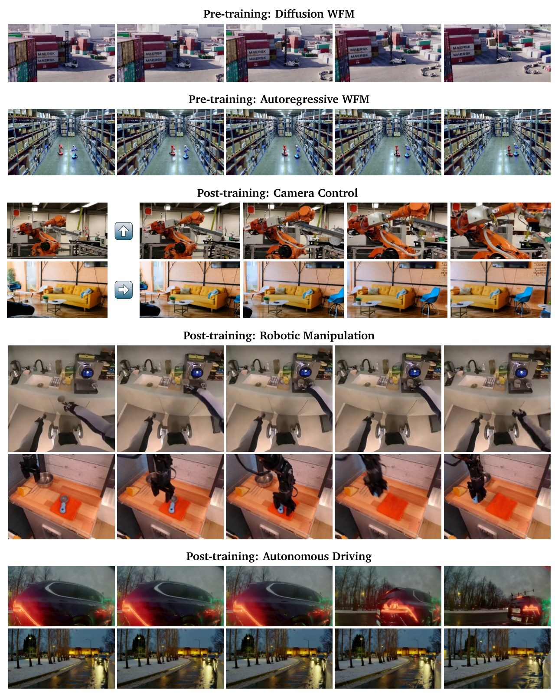
図1：Cosmos 世界基盤モデル。事前学習済み Cosmos WFM は、正確な物理を伴う、高品質で 3D 一貫性のある動画を生成する。Cosmos のモデル群には拡散型と自己回帰型の両方のトランスフォーマモデルが含まれ、それぞれ動画の連続潜在表現と離散潜在表現を用いて訓練される。これらの WFM を特化したデータセットで事後学習することで、幅広いフィジカル AI 環境で活用できるようになる。具体的には、カメラ制御が可能なモデル、ロボット操作のための指示追従が可能なモデル、および自動運転シナリオ向けのモデルを提示する。完全な動画やさらに多くの動画例は、我々のウェブサイトを参照されたい。
図中ラベル：Pre-training: Diffusion WFM＝事前学習：拡散 WFM、Pre-training: Autoregressive WFM＝事前学習：自己回帰 WFM、Post-training: Camera Control＝事後学習：カメラ制御、Post-training: Robotic Manipulation＝事後学習：ロボット操作、Post-training: Autonomous Driving＝事後学習：自動運転
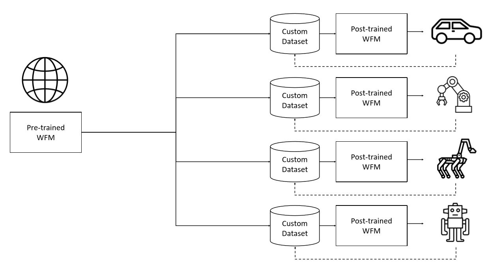
図2：事前学習済み WFM は、現実世界の物理のさまざまな側面を捉えた大規模で多様な動画データセットで訓練された、世界モデルのジェネラリストである。これらの事前学習済み世界基盤モデルは、事後学習によって対象のフィジカル AI 環境に特化させることができる。通常、事後学習用のデータセットは、対象のフィジカル AI 環境から収集した「プロンプト」と動画のペアである。プロンプトは、行動コマンド、軌跡、指示などの形をとりうる。事前学習済み WFM が優れた基盤を提供するため、事後学習用のデータセットははるかに小さくてよい。この事前学習と事後学習の組み合わせは、フィジカル AI システムを構築するための効率的な戦略となる。図中の破線はデータループを表す。
図中ラベル：Pre-trained WFM＝事前学習済み WFM、Custom Dataset＝カスタムデータセット、Post-trained WFM＝事後学習済み WFM
我々は、第 5 章で論じる、事前学習済み WFM を構築するための 2 つのスケーラブルなアプローチを探究する。それらはトランスフォーマベースの拡散モデルとトランスフォーマベースの自己回帰モデルである。拡散モデルは、ガウスノイズの動画から徐々にノイズを除去することで動画を生成する。自己回帰モデルは、あらかじめ定められた順序に従い、過去の生成結果を条件として動画を少しずつ生成する。どちらのアプローチも、難しい動画生成問題をより容易な部分問題に分解し、扱いやすくする。我々はスケーラビリティのために最先端のトランスフォーマアーキテクチャを活用する。第 5.1 節では、強力な世界生成能力を示すトランスフォーマベースの拡散モデルの設計を提示する。第 5.2 節では、世界生成のためのトランスフォーマベースの自己回帰モデルの設計を提示する。
トランスフォーマベースの拡散モデルとトランスフォーマベースの自己回帰モデルはいずれも、動画の表現としてトークンを用いる。前者はベクトル形式の連続トークンを、後者は整数形式の離散トークンを用いる。動画のトークン化、すなわち動画をトークンの集合に変換する処理は、決して自明ではないことに注意されたい。動画は視覚世界に関する豊かな情報を含んでいる。しかし、世界基盤モデルの訓練の計算量はトークン数とともに増大するため、WFM の学習を容易にするには、動画の元の内容を最大限保持しつつ、動画をコンパクトなトークン列に圧縮する必要がある。多くの点で、動画トークナイザの構築は動画コーデックの構築に似ている。我々は、第 4 章で述べるように、連続トークンと離散トークンの両方について動画のトークン化を学習する、注意機構ベースのエンコーダ・デコーダアーキテクチャを開発する。
第 6 章では、事前学習済み WFM をファインチューニングし、さまざまなフィジカル AI タスク向けの事後学習済み WFM を得る。第 6.1 節では、事前学習済みの拡散 WFM をファインチューニングして、カメラ姿勢を条件とするモデルにする。この事後学習により、ユーザが仮想視点を動かして生成された世界を探索できる、ナビゲーション可能な仮想世界が作られる。第 6.2 節では、動画と行動の系列からなるさまざまなロボットタスクで WFM をファインチューニングする。事前学習済み WFM を活用することで、ロボットがとった行動に基づいて世界の将来の状態をよりよく予測できることを示す。第 6.3 節では、事前学習済み WFM を自動運転に関連するさまざまなタスク向けにファインチューニングする方法を示す。
開発した WFM の想定用途は、フィジカル AI の開発者向けである。世界基盤モデルを使用する開発者をよりよく保護するために、有害な入力をブロックする事前ガード（pre-Guard）と有害な出力をブロックする事後ガード（post-Guard）からなる強力なガードレールシステムを開発する。詳細は第 7 章で述べる。
我々は、フィジカル AI の開発者が自らのシステムを前進させるのを支援する世界基盤モデルプラットフォームの構築を目指している。この目標を達成するために、事前学習済み世界基盤モデルとトークナイザを NVIDIA Open Model License のもとで NVIDIA Cosmos にて公開する。本論文は世界基盤モデルの設計においていくつかの改善を行っているが、世界基盤モデルの問題はまだ解決には程遠い。最先端をさらに前進させるには、さらなる研究が必要である。
2 世界基盤モデルプラットフォーム
\( x_{0:t} \) を、時刻 0 から \( t \) までの現実世界の視覚的観測の系列とする。\( c_t \) を世界への摂動とする。図 3 に示すように、WFM とは、過去の観測 \( x_{0:t} \) と現在の摂動 \( c_t \) に基づいて、時刻 \( t+1 \) における将来の観測 \( \hat{x}_{t+1} \) を予測するモデル \( \mathcal{W} \) である。我々の場合、\( x_{0:t} \) は RGB 動画であり、\( c_t \) は多様な形をとりうる摂動である。それは、フィジカル AI がとった行動、ランダムな摂動、摂動のテキスト記述などでありうる。
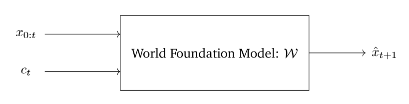
図3：世界基盤モデル（WFM）\( \mathcal{W} \) は、過去の観測 \( x_{0:t} \) と現在の摂動 \( c_t \) に基づいて、世界の将来の状態 \( x_{t+1} \) を生成するモデルである。
図中ラベル：World Foundation Model＝世界基盤モデル
2.1 将来の Cosmos
我々は、WFM が以下を含む（ただしこれらに限らない）多くの点でフィジカル AI の開発者にとって有用であると考えている。
- 方策評価。これは、フィジカル AI システムにおける方策モデルの品質を評価することを指す。訓練済みの方策を現実世界で稼働するフィジカル AI システムに配備して評価する代わりに、フィジカル AI システムのデジタルコピーを世界基盤モデルと相互作用させることができる。WFM ベースの評価は、コスト効率と時間効率がより高い。WFM を用いれば、開発者は本来は利用できない未知の環境に方策モデルを配備できる。WFM は、開発者が能力不足の方策を素早く除外し、物理的資源を少数の有望な方策に集中させるのに役立つ。
- 方策の初期化。方策モデルは、現在の観測と与えられたタスクに基づいて、フィジカル AI システムがとるべき行動を生成する。入力摂動に基づいて世界の動的なパターンをモデル化するよく訓練された WFM は、方策モデルのよい初期値となりうる。これは、フィジカル AI におけるデータ不足の問題への対処に役立つ。
- 方策の訓練。報酬モデルと組み合わせた WFM は、強化学習の設定において方策モデルにフィードバックを与える、物理世界の代理となりうる。エージェントは WFM と相互作用することで、タスクを解く熟練度を高めることができる。
- 計画またはモデル予測制御。WFM を用いて、フィジカル AI システムがとるさまざまな行動系列に続くさまざまな将来の状態をシミュレートできる。次に、コスト／報酬モジュールを用いて、その結果に基づきこれらの異なる行動系列の性能を定量化できる。そしてフィジカル AI は、計画アルゴリズムのようにシミュレーション結果全体に基づいて、あるいはモデル予測制御のように後退ホライズン方式で、最良の行動系列を実行できる。世界モデルの精度が、これらの意思決定戦略の性能の上限を決める。
- 合成データ生成。WFM は訓練用の合成データの生成に利用できる。また、深度マップやセマンティックマップなどのレンダリングメタデータを条件とするようにファインチューニングすることもできる。その条件付き WFM は Sim2Real のユースケースに利用できる。
これらの可能性を挙げたが、本論文には Cosmos WFM をこれらに適用した実証結果は含まれていない。これらの主張は今後の研究で検証したいと考えている。
2.2 現在の Cosmos
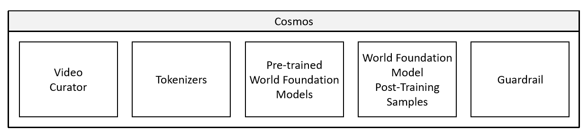
図4：Cosmos 世界基盤モデルプラットフォームは、いくつかの主要な構成要素からなる。すなわち、動画キュレータ、動画トークナイザ、事前学習済み世界基盤モデル、世界基盤モデルの事後学習サンプル、およびガードレールである。
図中ラベル：Video Curator＝動画キュレータ、Tokenizers＝トークナイザ、Pre-trained World Foundation Models＝事前学習済み世界基盤モデル、World Foundation Model Post-Training Samples＝世界基盤モデルの事後学習サンプル、Guardrail＝ガードレール
図 4 は、本論文で Cosmos WFM プラットフォームにおいて利用可能なもの、すなわち動画キュレータ、動画トークン化、世界基盤モデルの事前学習、世界基盤モデルの事後学習、およびガードレールを図示したものである。
動画キュレータ。我々はスケーラブルな動画データキュレーションパイプラインを開発する。各動画は、シーンの切り替わりを含まない個々のショットに分割される。次に、一連のフィルタリング手順をクリップに適用し、訓練用に高品質でダイナミックな情報に富んだ部分集合を見つけ出す。これらの高品質なショットは、その後 VLM を用いてアノテーションされる。さらに意味的な重複除去を行い、多様でありながらコンパクトなデータセットを構築する。
動画トークン化。我々は、圧縮率の異なる一連の動画トークナイザを開発する。これらのトークナイザは因果的である。すなわち、現在のフレームのトークン計算は将来の観測に基づかない。この因果的な設計にはいくつかの利点がある。訓練の面では、入力が単一画像の場合には因果的動画トークナイザは画像トークナイザにもなるため、画像と動画の同時訓練が可能になる。これは、動画モデルが訓練に画像データセットを活用するうえで重要である。画像データセットは世界の豊かな外観情報を含み、より多様である傾向がある。応用の面では、因果的動画トークナイザは、因果的な世界に存在するフィジカル AI システムとより整合している。
WFM の事前学習。我々は、事前学習済み世界基盤モデルを構築するための 2 つのスケーラブルなアプローチ、すなわち拡散モデルと自己回帰モデルを探究する。スケーラビリティのためにトランスフォーマアーキテクチャを用いる。
拡散ベースの WFM では、事前学習は 2 つの段階からなる。1）Text2World 生成の事前学習、および 2）Video2World 生成の事前学習である。具体的には、まず入力テキストプロンプトに基づいて動画世界を生成するようにモデルを訓練する。次に、過去の動画と入力テキストプロンプトに基づいて将来の動画世界を生成するようにファインチューニングする。これを Video2World 生成タスクと呼ぶ。
自己回帰ベースの WFM では、事前学習は 2 つの段階からなる。1）通常の次トークン生成、および 2）テキスト条件付きの Video2World 生成である。まず、過去の動画の入力に基づいて将来の動画世界を生成する（予見生成）ようにモデルを訓練する。次に、過去の動画とテキストプロンプトに基づいて将来の動画世界を生成するようにファインチューニングする。
video2world 生成モデルは、現在の観測（過去の動画）と制御入力（プロンプト）に基づいて将来を生成する事前学習済み世界モデルである。拡散ベースと自己回帰ベースの両方の WFM について、容量の異なる一連のモデルを構築し、さまざまな下流アプリケーションでの有効性を調べる。
さらに、事前学習済みの拡散 WFM をファインチューニングして拡散デコーダを得て、自己回帰モデルの生成結果を向上させる。WFM をよりよく制御するために、大規模言語モデル（LLM）に基づくプロンプトアップサンプラも構築した。
世界モデルの事後学習。我々は、事前学習済み WFM をいくつかの下流のフィジカル AI アプリケーションに応用した例を示す。カメラ姿勢を入力プロンプトとして事前学習済み WFM をファインチューニングする。これにより、生成された世界の中を自由にナビゲートできるようになる。また、事前学習済み WFM をヒューマノイドや自動運転のタスク向けにファインチューニングする方法も示す。
ガードレール。開発した世界基盤モデルを安全に使用するために、有害な入力と出力をブロックするガードレールシステムを開発する。
3 データキュレーション
トークナイザと WFM の両方のための高品質な訓練データセットを生成する、我々の動画キュレーションパイプラインについて述べる。図 5 に示すように、我々のパイプラインは 5 つの主要な段階、すなわち 1）分割、2）フィルタリング、3）アノテーション、4）重複除去、5）シャーディングからなる。各段階は、データ品質を向上させ、モデル訓練の要件に対応するよう調整されている。まず生データセットを提示し、その後各段階を詳しく説明する。
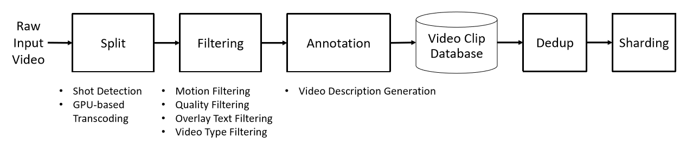
図5：Cosmos 動画キュレータは 5 つの主要な段階、すなわち 1）分割、2）フィルタリング、3）アノテーション、4）重複除去、5）シャーディングからなる。分割段階では、長い動画をショットに分割し、それらをクリップへとトランスコードする。フィルタリング段階では、世界基盤モデルの構築にとって価値の低いクリップを除去する。アノテーション段階では、各クリップに動画の説明文を付与する。その後、クリップは動画クリップデータベースに格納される。訓練データセットを得るには、まず意味的な重複除去を行い、次に動画クリップをその解像度とアスペクト比に基づいてシャーディングする。
図中ラベル：Raw Input Video＝生の入力動画、Split＝分割（Shot Detection＝ショット検出、GPU-based Transcoding＝GPU ベースのトランスコード）、Filtering＝フィルタリング（Motion Filtering＝動きフィルタリング、Quality Filtering＝品質フィルタリング、Overlay Text Filtering＝オーバーレイテキストフィルタリング、Video Type Filtering＝動画種別フィルタリング）、Annotation＝アノテーション（Video Description Generation＝動画説明文の生成）、Video Clip Database＝動画クリップデータベース、Dedup＝重複除去、Sharding＝シャーディング
3.1 データセット
モデルの訓練には、独自の動画データセットと、一般に公開されているオープンドメインのインターネット動画の両方を用いる。我々の目標は、フィジカル AI 開発者を支援することである。そのために、さまざまなフィジカル AI アプリケーションをカバーするよう動画訓練データセットをキュレーションし、以下の動画カテゴリを対象とする。
- 運転（11%）
- 手の動きと物体操作（16%）
- 人間の動きと活動（10%）
- 空間認識とナビゲーション（16%）
- 一人称視点（8%）
- 自然のダイナミクス（20%）
- 動的なカメラの動き（8%）
- 合成レンダリング（4%）
- その他（7%）
これらの動画は、さまざまな視覚的物体と行動を幅広くカバーする。その多様性は WFM の汎化を向上させ、モデルがさまざまな下流タスクに対応するのに役立つ。これらの動画は非構造的であり、またその量が膨大であることから、アルゴリズムとインフラの両面で効率的に処理するうえで多くの課題が生じる。動画はさまざまなコーデックで符号化されている可能性があり、アスペクト比、解像度、長さなどもまちまちである。また、多くの動画はさまざまな視覚効果で後処理や編集がなされており、適切に扱わなければ、生成動画に望ましくないアーティファクトを生じさせ、世界モデルの性能を損なうおそれがある。
合計で、解像度 720p から 4k の生動画を約 2,000 万時間分蓄積している。しかし、動画データのかなりの部分は、意味的に冗長であるか、世界の物理を学習するのに有用な情報を含んでいない。そこで、生動画の中から訓練に最も価値のある部分を見つけ出すための一連のデータ処理段階を設計する。また、画像と動画の同時訓練が生成動画の視覚品質を向上させ、モデル訓練を加速することが示されているため、画像データも収集する。データキュレーションパイプラインのモジュール設計のおかげで、これを用いて画像データと動画データの両方を処理し、事前学習とファインチューニングの両方のデータセットを生成できる。事前学習用に約 108 本、ファインチューニング用に約 107 本の動画クリップを生成する。
3.2 分割
我々の動画の長さは任意であり、最新の深層学習モデルは非常に長い動画を直接扱うことはできない。また、多くの動画にはショットの遷移が含まれている。ある場面から始まり、まったく無関係でありうる別の場面へ遷移することがある。例えば、ニューヨーク市のモダンなキッチンで 2 人が話している場面から、アフリカのサバンナでライオンがシマウマを追う場面へ、といった具合である。モデルが人為的に編集されたものではなく物理的にもっともらしい視覚内容の遷移を学習できるよう、各動画をショットの変化に基づいて分割し、視覚的に一貫した動画クリップを生成することが重要である。
3.2.1 ショット検出
分割の目的は、任意の長さの生動画を、ショットの変化を含まないクリップへ時間的に分割することである。生動画を入力とし、各ショットの開始フレームと終了フレームのインデックスを生成する。2 秒未満のクリップは、ショットの遷移や視覚効果である可能性があるため破棄する。60 秒を超えるクリップは、最大長が 60 秒になるようさらに分割する。その後のフィルタリング段階で、クリップが世界の物理を学習するのに有用な情報を含むかどうかを判定できる。
ショット境界検出は古典的なコンピュータビジョンの問題である。既存の手法は視覚特徴空間の変化に基づいてショット境界を検出するが、動画フレームから視覚特徴をどのように学習するかが異なる。我々はこのタスクについて、表 1 に示すいくつかのアルゴリズム、すなわち PySceneDetect（Castellano, 2024）、Panda70M（Chen et al., 2024）、TransNetV2（Soucek and Lokoc, 2024）、および AutoShot（Zhu et al., 2023）を評価する。
PySceneDetect は、HSV 空間における色ヒストグラムの時間変化を閾値処理することでショットの変化を検出する、広く使われているライブラリである。これは最近の MovieGen の研究（Polyak et al., 2024）でも採用されていることに注意されたい。Panda70M は、PySceneDetect に CLIP 埋め込みベースの結合とフィルタリングを追加したものである。一方、TransNetV2 と AutoShot はニューラルネットワークベースであり、100 フレームのスライディング入力窓が与えられたときに各フレームが遷移フレームである確率を予測する。
大幅に編集された動画は、さまざまな視覚効果が重なった複雑なショット変化を含むことが多いため、そのような動画をうまく扱えるアルゴリズムを選ぶことが極めて重要である。このことが、手法が動画からクリーンなショットカットを持つクリップを生成できるかどうかを評価する専用のベンチマークを構築する動機となった。我々のベンチマーク（ShotBench2 と命名）は、RAI、BBC Planet Earth（AI Image Lab, University of Modena, 2016）、ClipShots（Tang et al., 2018）、SHOT（Zhu et al., 2023）などの既存のデータセットを含む。ClipShots については、他のデータセットとの一貫性を保つため、各ショットアノテーションの開始と終了の中点を遷移フレームと定義する。
脚注2：ShotBench は https://github.com/NVlabs/ShotBench で公開されている。
表 1 は、ShotBench 上でさまざまな手法を比較したものである。TransNetV2 と AutoShot の両方について、信頼度の閾値を 0.4 に設定する。Panda70M については、公平な比較のために、フィルタリング段階を除いて彼らの分割の実装に従う。エンドツーエンドの学習ベースのアプローチ（例えば TransNetV2 や AutoShot）は、手作りの特徴やヒューリスティックなルールを用いる手法（例えば PySceneDetect や Panda70M）よりもはるかに優れた性能を示す。既存のデータセットでは TransNetV2 と AutoShot は同等の性能を示すが、より難しいショット変化では TransNetV2 の方がうまく機能することがわかった。エンドツーエンドのニューラルネットワーク（すなわち TransNetV2）を用いることで、PySceneDetect と ImageBind 埋め込み（Girdhar et al., 2023）を組み合わせるために複雑なロジックを用いるハイブリッドなアプローチ（Panda70M など）の煩わしさなしに、最新の GPU による高速化を活用して分割のスループットを高めることもできる。
| データセット | 指標 | PySceneDetect | Panda70M | TransNetV2 | AutoShot |
|---|---|---|---|---|---|
| BBC | Precision ↑ | 0.894 | 0.959 | 0.983 | 0.984 |
| Recall ↑ | 0.884 | 0.653 | 0.951 | 0.922 | |
| F1 ↑ | 0.889 | 0.777 | 0.967 | 0.952 | |
| RAI | Precision ↑ | 0.856 | 0.933 | 0.918 | 0.889 |
| Recall ↑ | 0.807 | 0.746 | 0.921 | 0.923 | |
| F1 ↑ | 0.831 | 0.829 | 0.919 | 0.906 | |
| SHOT | Precision ↑ | 0.769 | 0.949 | 0.883 | 0.866 |
| Recall ↑ | 0.673 | 0.462 | 0.767 | 0.804 | |
| F1 ↑ | 0.718 | 0.622 | 0.821 | 0.834 | |
| ClipShots | Precision ↑ | 0.395 | 0.649 | 0.685 | 0.653 |
| Recall ↑ | 0.602 | 0.424 | 0.772 | 0.781 | |
| F1 ↑ | 0.477 | 0.513 | 0.726 | 0.711 |
表1：さまざまなデータセットにおける分割アルゴリズムの比較。
3.2.2 トランスコード
我々の動画はさまざまな設定の多様なコーデックを用いており、これがデータキュレーションの課題となる。ショット検出で得られた各動画クリップを、一貫した高品質の mp4 形式に再エンコードする。これにより、その後のデータキュレーション処理が簡素化される。動画コーデックを統一することで、モデル訓練用のデータローダの安定性と効率も大きく向上する。我々は h264_nvenc コーデックを高ビットレートで用い、速い動きと高周波テクスチャを含む動画で設定のストレステストを行い、知覚可能な視覚的劣化がないことを確認している。
表 2 では、スループットを最大化するために、トランスコードのためのさまざまなハードウェアとソフトウェアの構成を徹底的に評価する。最新の GPU は、ハードウェアで高速化された動画のエンコードとデコードの機能を備えている。NVIDIA L40S はデコード（NVDEC）とエンコード（NVENC）の両方のハードウェアアクセラレータを備えているが、NVIDIA H100 は NVDEC しか備えていない。表 2 では L40S との公平な比較のため、H100 には利用可能な最大の CPU コア数（1 ではなく 28）を割り当てて補っている。L40S は H100 より約 17% 高いスループットを示す（0.0674 対 0.0574）。ソフトウェア構成については、libx264 から h264_nvenc への切り替えと、同じ動画の複数クリップをバッチでトランスコードすることで、スループットが大幅に向上する。ffmpeg が NVDEC/NVENC アクセラレータを十分に活用できないという問題が、特にマルチ GPU ノードで観察される。動画ストリームのトランスコードで ffmpeg を PyNvideoCodec に置き換えると、アクセラレータの利用率がはるかに高くなり、最大のスループット改善が得られる（0.3702 対 0.1026）。ffmpeg は音声のリミックスにのみ残し、GPU の計算能力をよりよく活用するために PyNvideoCodec を用いる。すべての改善を組み合わせることで、スループットが \( \sim 6.5\times \) 向上する。
| 手法 | GPU | CPU | コーデック | バッチ | NVDEC（アクセラレータ数） | NVENC（アクセラレータ数） | スループット（videos/s） |
|---|---|---|---|---|---|---|---|
| ffmpeg | H100 | 28 | libx264 | 1 | 7 | 0 | 0.0574 |
| ffmpeg | L40S | 1 | h264_nvenc | 1 | 3 | 3 | 0.0674 |
| ffmpeg | L40S | 1 | h264_nvenc | 16 | 3 | 3 | 0.1026 |
| pynvc+ffmpeg | L40S | 1 | h264_nvenc | 1 | 3 | 3 | 0.3702 |
表2：さまざまなソフトウェア設定でのトランスコード性能。
3.3 フィルタリング
分割段階で生成された動画クリップはノイズが多く、さまざまなトピックにわたって品質も大きく異なる。我々はフィルタリング段階を、1）視覚品質が最低要件を満たさない動画クリップを除去し、2）ファインチューニングに適した高品質の動画クリップを選択し、3）WFM 構築のためにデータ分布を調整するように設計する。上記の目標を、動きフィルタリング、視覚品質フィルタリング、テキストフィルタリング、動画種別フィルタリングによって達成する。
3.3.1 動きフィルタリング
動きフィルタリングには 2 つの主な目標がある。1）静止している動画や、ランダムで急激なカメラの動き（通常は手持ちカメラによるもの）を含む動画を除去すること、および 2）モデル訓練を導く追加情報となりうる、さまざまな種類のカメラの動き（例えばパン、ズーム、チルトなど）で動画にタグ付けすることである。
動きフィルタリングのために軽量な分類器を構築する。分類器への入力は、動画クリップから抽出された動きベクトルまたはオプティカルフローの系列である。分類器は ViT アーキテクチャに基づき、ラベル付き動画で訓練される。h264 コーデックの動きベクトル、Farneback オプティカルフローアルゴリズム（Farnebäck, 2003）、および NVIDIA TensorRT で高速化したオプティカルフロー推定ネットワークを用いて実験する。NVIDIA TensorRT で高速化したオプティカルフロー推定の上に構築した分類器が最もよく機能し、動きフィルタリングで高い分類精度が得られることがわかった。
3.3.2 視覚品質フィルタリング
視覚品質に基づくフィルタリングでは、歪みと外観品質という 2 つの基準を考慮する。第一に、アーティファクト、ノイズ、ぼけ、低いシャープネス、露出過多、露出不足などの歪みを含む動画クリップを除去する。DOVER（Wu et al., 2023）に基づき、人間が評価した動画で訓練した動画品質評価モデルを用いる。これによりクリップごとに知覚品質スコアが得られ、そのスコアを用いて下位 \( 15\% \) のクリップを除去する。第二に、外観品質の低い動画クリップを除外する。入力クリップからサンプリングしたフレームに画像の美的評価モデル（Schuhmann, 2022）を適用する。フィジカル AI にとって美的要素はそれほど重要ではないため、保守的な閾値、すなわち \( 3.5 \) を設定する。
3.3.3 テキストオーバーレイのフィルタリング
我々の動画の一部は、視聴者向けの追加情報を含めるために、後処理でテキストが追加されている。また、テキストはさまざまな視覚効果と同時に現れる傾向があることもわかった。我々の目標は世界の物理を学習することである。そのような過剰なテキストを含む動画を除去することが極めて重要である。ここで対象とするのは後処理で追加されたテキストであり、運転動画における通りの名前のように、動画が作られた元のシーンに存在するテキストではないことに注意されたい。
そのような動画を検出するために、MLP ベースの二値分類器を訓練する。分類器への入力は、InternVideo2（Wang et al., 2025）を用いて抽出した動画埋め込みである。正例と負例の動画にラベルを付ける訓練セットの構築には、独自の VLM を用いる。訓練したモデルは検証セットで高い予測精度を達成する。
3.3.4 動画種別フィルタリング
訓練データの分布を調整し、望ましくない種類の動画を除外するために、内容の種類と視覚的スタイルに基づいて動画を分類する包括的な分類体系（タクソノミー）を設計する。各動画クリップに分類体系のカテゴリでラベル付けする分類器を訓練する。抽象的な視覚パターン、ビデオゲームの映像、アニメーションコンテンツなど、生成品質の低下や非現実的なダイナミクスにつながりうる特定の種類の動画を除外することで、データを精錬する。さらに、WFM により関連性の高いカテゴリ（例えば人間の行動、人間と物体の相互作用など）をアップサンプリングし、重要性の低いカテゴリ（例えば自然や風景の動画）をダウンサンプリングすることで、データ分布を調整する。
我々の分類体系に合致する既存のラベル付きデータセットが存在しないため、独自の VLM を活用して分類器の訓練データと評価データを作成する。各動画クリップについて、均等にサンプリングした 8 フレームを VLM に与え、最も適切な分類体系のラベルを問い合わせる。アノテーションされたデータを用いて、テキストフィルタリングと同じ InternVideo2 埋め込みの上で MLP 分類器を訓練する。
3.4 アノテーション
テキストの説明文は通常、世界モデルの訓練に教師信号と条件を与えるために、画像データや動画データと対にされる。我々は VLM を用いて、各動画クリップに高品質で一貫したキャプションを生成する。VLM は、動画内の重要な事実や詳細に焦点を当てるように設定する。Alt テキストに頼る代わりにこのアプローチで動画の説明文を与えることで、訓練中にさまざまなテキストのスタイルや形式に適応する必要がなくなるため、世界モデルの学習の負担も軽減される。
我々の動画に対するキャプション生成について、いくつかの SOTA 手法（すなわち VFC（Ge et al., 2024）、Qwen2-VL（Wang et al., 2024）、VILA（Lin et al., 2024; Xue et al., 2024））をテストし、小規模な人手評価に基づいて VILA がより正確な説明文を生成することを確認した。動画キャプション付けのためにファインチューニングした、130 億（13B）パラメータの内部 VILA モデルを用いる。このモデルは、長いマルチフレームの文脈の処理に適した拡大されたコンテキストウィンドウを持ち、最大入力トークン長と最大出力トークン長はそれぞれ 5904 と 256 である。推論効率を向上させるために、FP8 量子化した TensorRT-LLM エンジンを用いる。これにより、表 3 に示すように、PyTorch の半精度ベースラインと比べてスループットが 10 \( \times \) 高速化される。VILA には「Elaborate on the visual and narrative elements of the video in detail（動画の視覚的要素と物語的要素を詳しく説明せよ）」というプロンプトを与え、入力クリップから均等にサンプリングした 8 フレームを入力する。キャプションの平均長は 559 文字、すなわち 97 単語である。
| エンジン | 精度 | バッチサイズ | スループット（clips/s） | スループット（tokens/s） |
|---|---|---|---|---|
| PyTorch | FP16 | 1 | 0.21 | 49.6 |
| TRT-LLM | FP16 | 1 | 0.40 | 95.6 |
| TRT-LLM | FP16 | 16 | 1.09 | 260.9 |
| TRT-LLM | FP8 | 16 | 1.96 | 470.6 |
表3：単一の H100 GPU における VILA の推論スループットの比較。
3.5 重複除去
我々の動画は膨大な量であるため、訓練セットには重複または準重複のサンプルが存在しうる。よりバランスがとれ多様なデータ分布を作るために、データの重複を除去することが極めて重要である。これにより訓練の効率も向上し、特定の訓練サンプルを記憶してしまう可能性も低減する。
スケーラブルな意味的重複除去のために、SemDeDup（Abbas et al., 2023）と DataComp（Gadre et al., 2024）のアプローチを採用する。フィルタリング中に計算した InternVideo2 埋め込みを再利用し、マルチノードの GPU 高速化された k-means の実装（RAPIDS, 2023）を用いて \( k=10,000 \) で埋め込みをクラスタリングする。重複を特定するために、埋め込みの各クラスタ内でペアごとの距離を計算する。重複した動画が検出された場合には、重複除去によって品質が失われないよう、最も解像度の高い動画を選択する。ペアごとの距離行列全体を GPU メモリに格納するのを避けるため、必要な上三角行列と argmax による集約を 256 のブロック単位でオンザフライに計算する。重複除去によって訓練データの約 \( 30\% \) を除去する。
また、抽出した InternVideo2 埋め込みとクラスタリング結果を活用して、自由形式のテキストや動画で訓練データセット全体を検索できる視覚検索エンジンも構築する。この検索エンジンは、データの問題をデバッグしたり、事前学習データセットと下流アプリケーションとのギャップを理解したりするのに有用である。
3.6 シャーディング
この段階の目的は、処理済みの動画クリップを、我々のモデル訓練器が訓練に直接利用できる webdataset にパッケージ化することである。訓練カリキュラムに合わせるため、動画を解像度、アスペクト比、長さに基づいてシャーディングする。事前学習データセットに加えて、上述のさまざまなフィルタを活用して、さらに高品質なファインチューニング用データセットも作成する。
3.7 インフラストラクチャ
我々のデータ処理インフラストラクチャは、AnyScale Ray（Moritz et al., 2017）を用いて地理的に分散したクラスタ向けのストリーミングパイプラインシステムを実装し、大規模な機械学習ワークフローにおける 2 つの重要な課題、すなわち同種ノード間での効率的な資源利用と、データソースへの高遅延接続下での堅牢な動作に対処する。データ転送を計算から切り離すことで、パイプラインはリモートのデータストレージとともに効率的に動作し、メモリ要件はデータセットのサイズではなくパイプラインの複雑さに応じてスケールするため、際限のないストリーム処理が可能になる。
我々のアーキテクチャは、並列なパイプライン段階を通じて、相補的なハードウェア資源の同時利用を可能にする。例えば、データの取り込みにネットワーク帯域を、動画のデコードに NVDEC ユニットを、計算負荷の高い変換に GPU を同時に用いる。この複数資源の割り当てを最適化するために Fragmentation Gradient Descent アルゴリズム（Weng et al., 2023）を拡張し、我々のスケジューラが個々の段階を自動的にスケーリングして、専用ハードウェアアクセラレータ間でバランスのとれたスループットを維持する。
4 トークナイザ
トークナイザは、現代の大規模モデルの基本的な構成要素である。トークナイザは、教師なしで見いだされるボトルネック化された潜在空間を学習することで、生データをより効率的な表現に変換する。具体的には、視覚トークナイザは、画像や動画などの生の冗長な視覚データをコンパクトな意味的トークンに写像するため、高次元の視覚データを扱ううえで極めて重要である。この能力は、大規模なトランスフォーマモデルの効率的な訓練を可能にするだけでなく、限られた計算資源での推論をも身近なものにする。図 6 は、トークン化の訓練パイプラインを模式的に示したものである。その目的は、ボトルネックとなるトークン表現が入力の視覚情報を最大限に保持するように、エンコーダとデコーダを訓練することである。
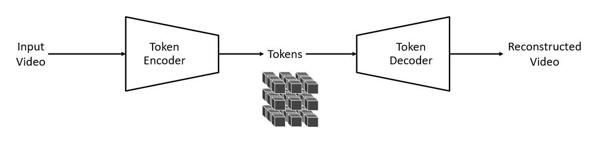
図6：動画トークン化パイプライン。入力動画はトークンに符号化される。トークンは通常、入力動画よりもはるかにコンパクトである。次に、デコーダがトークンから入力動画を再構成する。トークナイザの訓練とは、トークンに視覚情報を最大限保持するようにエンコーダとデコーダを学習することである。
図中ラベル：Input Video＝入力動画、Token Encoder＝トークンエンコーダ、Tokens＝トークン、Token Decoder＝トークンデコーダ、Reconstructed Video＝再構成動画
トークナイザには連続型と離散型の 2 種類がある（図 7 を参照）。連続トークナイザは、Stable Diffusion（Rombach et al., 2022）や VideoLDM（Blattmann et al., 2023）のような潜在拡散モデルと同様に、視覚データを連続的な潜在埋め込みに符号化する。これらの埋め込みは、連続分布からのサンプリングによってデータを生成するモデルに適している。離散トークナイザは、VideoPoet（Kondratyuk et al., 2024）のような自己回帰トランスフォーマに見られるように、視覚データを離散的な潜在コードに符号化し、量子化されたインデックスに写像する。この離散表現は、交差エントロピー損失で訓練される GPT のようなモデルに必要である。図 7 に 2 種類のトークンを示す。
トークナイザの成否は、その後の視覚的な再構成品質を損なうことなく高い圧縮率を実現できるかどうかに大きく依存する。一方では、高い圧縮はストレージと計算の要求を削減する。他方では、過度な圧縮は本質的な視覚的詳細の喪失につながりうる。このトレードオフは、トークナイザ設計における重要な課題である。
我々は、画像と動画のための連続トークナイザと離散トークナイザの両方を含む視覚トークナイザ群である Cosmos Tokenizer を提示する。Cosmos Tokenizer は、卓越した視覚的再構成品質と推論効率を提供する。多様な計算上の制約やアプリケーションの要求に対応するため、さまざまな圧縮率を提供する。表 4 に、さまざまな視覚トークナイザとその機能の比較を示す。
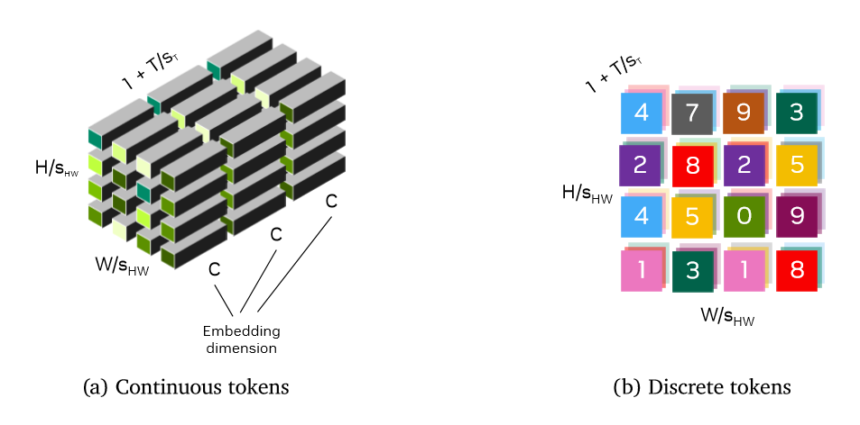
図7：連続トークナイザと離散トークナイザの可視化。空間方向（\( \frac{H}{s_{HW}} \times \frac{W}{s_{HW}} \)）と時間方向（\( 1+\frac{T}{s_T} \)）の次元に沿ったトークン。空間圧縮率は \( s_{HW} \)、時間圧縮率は \( s_T \) である。最初の時間方向のトークンは最初の入力フレームを表し、共有された潜在空間で画像（\( T=0 \)）と動画（\( T\gt 0 \)）を同時にトークン化できる。左：埋め込みサイズ \( C \) の連続潜在埋め込み。右：量子化されたインデックス。各色が 1 つの離散潜在コードを表す。
図中ラベル：Embedding dimension＝埋め込み次元、(a) Continuous tokens＝(a) 連続トークン、(b) Discrete tokens＝(b) 離散トークン
| モデル | 因果的 | 画像 | 動画 | 同時 | 離散 | 連続 |
|---|---|---|---|---|---|---|
| FLUX-Tokenizer（FLUX, 2024） | - | ✓ | ✗ | ✗ | ✗ | ✓ |
| Open-MAGVIT2-Tokenizer（Luo et al., 2024） | - | ✓ | ✗ | ✗ | ✓ | ✗ |
| LlamaGen-Tokenizer（Sun et al., 2024） | - | ✓ | ✗ | ✗ | ✓ | ✗ |
| VideoGPT-Tokenizer（Yan et al., 2021） | ✗ | ✗ | ✓ | ✗ | ✓ | ✗ |
| Omni-Tokenizer（Wang et al., 2024） | ✗ | ✓ | ✓ | ✓ | ✓ | ✓ |
| CogVideoX-Tokenizer（Yang et al., 2024） | ✓ | ✓ | ✓ | ✓ | ✗ | ✓ |
| Cosmos-Tokenize1 | ✓ | ✓ | ✓ | ✓ | ✓ | ✓ |
表4：さまざまな視覚トークナイザとその機能の比較。
我々は、時間的に因果的な機構を備えた、軽量で計算効率の高いアーキテクチャを用いて Cosmos Tokenizer を設計する。具体的には、因果的時間畳み込み層と因果的時間注意層を用いて動画フレームの自然な時間順序を保持し、単一の統一されたネットワークアーキテクチャで画像と動画をシームレスにトークン化できるようにする。
トークナイザは、カテゴリやアスペクト比を制限することなく、高解像度の画像と長時間の動画で直接訓練する。特定のデータカテゴリやサイズに焦点を当てた既存のトークナイザとは異なり、Cosmos Tokenizer は 1:1、3:4、4:3、9:16、16:9 を含むさまざまなアスペクト比で動作する。推論時には時間長に依存せず、訓練時の時間長を超えてトークン化することができる。
また、MS-COCO 2017（Lin et al., 2014）、ImageNet-1K（Deng et al., 2009）、DAVIS（Perazzi et al., 2016）を含む標準的な画像・動画のベンチマークデータセットでトークナイザを評価する。フィジカル AI アプリケーションのための動画トークン化の研究を促進するため、魚眼、ロボティクス、運転、人間の活動、空間ナビゲーションに至るまで、フィジカル AI 向けの多くの動画カテゴリをカバーする動画データセットをキュレーションする。このデータセットは github.com/NVlabs/TokenBench で公開されている。
図 8 に示すように、我々の評価結果は、Cosmos Tokenizer が既存のトークナイザを大きな差で上回ることを示している。例えば、DAVIS の動画において再構成品質で PSNR が +4 dB 向上する。また、最大 12\( \times \) 高速に動作し、80GB メモリを搭載した単一の NVIDIA A100 GPU 上で、メモリ不足に陥ることなく 1080p で最大 8 秒、720p で最大 10 秒の動画を一度に符号化できる。
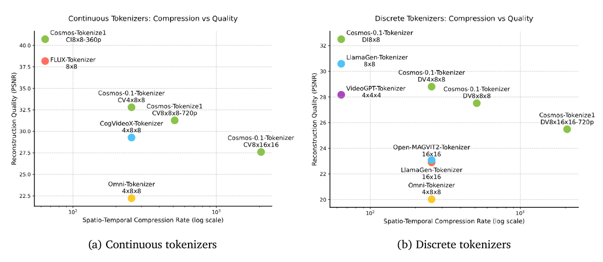
図8：時空間圧縮率（対数スケール）対再構成品質（PSNR）の観点からの、連続トークナイザ（左）と離散トークナイザ（右）の比較。各点はトークナイザの 1 つの構成を表し、圧縮率と品質のトレードオフを示している。特に、我々のトークナイザは優れた圧縮・品質トレードオフを示し、他の手法と比べてより高い圧縮率でも優れた品質を実現している。評価は DAVIS データセットで行った。画像トークナイザの PSNR は個々のフレームすべてについて計算している。
図中ラベル：Continuous Tokenizers: Compression vs Quality＝連続トークナイザ：圧縮対品質、Discrete Tokenizers: Compression vs Quality＝離散トークナイザ：圧縮対品質、Reconstruction Quality (PSNR)＝再構成品質（PSNR）、Spatio-Temporal Compression Rate (log scale)＝時空間圧縮率（対数スケール）、(a) Continuous tokenizers＝(a) 連続トークナイザ、(b) Discrete tokenizers＝(b) 離散トークナイザ
4.1 アーキテクチャ
Cosmos Tokenizer はエンコーダ・デコーダアーキテクチャとして設計されている。入力動画 \( x_{0:T} \in \mathbb{R}^{(1+T)\times H\times W\times 3} \) が与えられたとき（\( H \)、\( W \)、\( T \) はそれぞれ高さ、幅、フレーム数）、エンコーダ（\( \mathcal{E} \)）は入力をトークン動画 \( z_{0:T'} \in \mathbb{R}^{(1+T')\times H'\times W'\times C} \) にトークン化する。空間圧縮率は \( s_{HW}=\frac{H}{H'}=\frac{W}{W'} \)、時間圧縮率は \( s_T=\frac{T}{T'} \) である。次にデコーダ（\( \mathcal{D} \)）がこれらのトークンから入力動画を再構成し、再構成動画 \( \hat{x}_{0:T} \in \mathbb{R}^{(1+T)\times H\times W\times 3} \) を得る。これは数学的に次のように表される。
\[ \hat{x}_{0:T} = \mathcal{D}\Big(\mathcal{E}\big(x_{0:T}\big)\Big). \tag{1} \]
我々のアーキテクチャは時間的に因果的な設計を採用しており、各段階が将来のフレームとは独立に、現在と過去のフレームのみを処理することを保証する。一般的なアプローチとは異なり、我々のトークナイザはウェーブレット空間で動作し、入力はまず 2 レベルのウェーブレット変換で処理される。具体的には、ウェーブレット変換は入力動画 \( x_{0:T} \) をグループ単位で写像し、\( x \)、\( y \)、\( t \) の各方向に沿って入力を 4 分の 1 にダウンサンプリングする。グループは次のように形成される：\( \{x_0, x_{1:4}, x_{5:8}, ..., x_{(T-3):T}\} \to \{g_0, g_1, g_2, ..., g_{T/4}\} \)。後続のエンコーダ段階は、\( \{g_0, g_{0:1}, g_{0:2}, ...\} \to \{\xi_0, \xi_1, \xi_2, ...\} \) のように時間的に因果的な方法でフレームを処理する。後続のエンコーダ段階も同様の方式に従い、最終的にトークン \( z_{0:T'} \) を出力する。この因果的な設計は、トークナイザの上に構築されたモデルを、しばしば時間的に因果的な設定で動作する下流のフィジカル AI アプリケーションに適応させるのに役立つ。ウェーブレット変換により、ピクセル情報の冗長性を排除したよりコンパクトな動画表現で処理できるようになり、残りの層はより意味的な圧縮に集中できる。
我々のエンコーダ段階（ウェーブレット変換後）は、ダウンサンプリングブロックを挟んだ一連の残差ブロックを用いて実装される。各ブロックでは時空間分解型の 3D 畳み込みを用いる。まずカーネルサイズ \( 1\times k\times k \) の 2D 畳み込みを適用して空間情報を捉え、続いてカーネルサイズ \( k\times 1\times 1 \) の時間畳み込みを適用して時間的なダイナミクスを捉える。因果性を保証するために、\( k-1 \) の左パディングを用いる。長距離の依存関係を捉えるために、大域的なサポート領域（例えば最後のエンコーダブロックでは \( 1+T' \)）を持つ時空間分解型の因果的自己注意を用いる。非線形性には Swish 活性化関数（Ramachandran et al., 2017）を用いる。Group Normalization（GroupNorm）（Wu and He, 2018）の代わりに Layer Normalization（LayerNorm）（Lei Ba et al., 2016）を活用する。これにより、潜在空間や再構成出力の特定の領域に大きな値が現れるのを防ぐ（Karras et al., 2020; Sadat et al., 2024）。デコーダはエンコーダと鏡像の構造をとり、ダウンサンプリングブロックをアップサンプリングブロックに置き換える。図 9 に Cosmos Tokenizer の全体アーキテクチャの概要を示す。
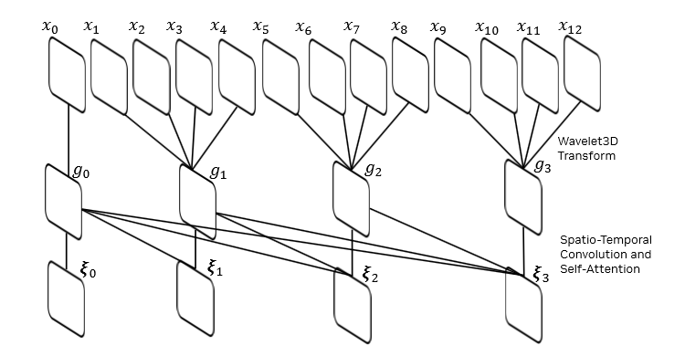
(a) 時間的因果性：時間的因果性の機構の図解。入力 \( x_0, x_1, \ldots, x_{12} \) はグループ化された中間出力 \( g_0, g_1, \ldots \) を通じて処理され、さらに時空間畳み込みと注意の演算によって洗練される。
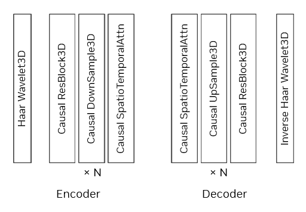
(b) ネットワークアーキテクチャ：エンコーダ・デコーダのネットワーク構造は、3D Haar ウェーブレット、因果的残差、因果的ダウンサンプリング、因果的時空間注意の各ブロックを含む。デコーダはエンコーダの構造を鏡像にしたものであり、ダウンサンプリングをアップサンプリングに置き換えている。
図9：時間的因果性とエンコーダ・デコーダ構造の統合を示す、Cosmos Tokenizer の全体アーキテクチャ。時間的因果性（左）は逐次的な入力を処理し、エンコーダ・デコーダ（右）はウェーブレット変換と因果的な演算を活用して、データ内の空間的・時間的な依存関係を捉える。
図中ラベル：Wavelet3D Transform＝3D ウェーブレット変換、Spatio-Temporal Convolution and Self-Attention＝時空間畳み込みと自己注意、Haar Wavelet3D＝3D Haar ウェーブレット、Causal ResBlock3D＝因果的 3D 残差ブロック、Causal DownSample3D＝因果的 3D ダウンサンプリング、Causal SpatioTemporalAttn＝因果的時空間注意、Causal UpSample3D＝因果的 3D アップサンプリング、Inverse Haar Wavelet3D＝3D 逆 Haar ウェーブレット、Encoder＝エンコーダ、Decoder＝デコーダ
連続トークナイザの潜在空間のモデル化には、通常のオートエンコーダ（AE）の定式化を用いる。離散トークナイザについては、潜在空間の量子化器として Finite-Scalar-Quantization（FSQ）（Mentzer et al., 2023）を採用する。潜在次元は、連続トークナイザでは \( 16 \)、離散トークナイザでは \( 6 \) である。後者は FSQ のレベル数を表し、そのレベルは \( (8,8,8,5,5,5) \) である。この構成は \( 64{,}000 \) の語彙サイズに相当する。
4.2 訓練戦略
画像と動画のミニバッチをあらかじめ設定した頻度で交互に用いる、同時訓練戦略を採用する。トークナイザのデコーダの最終出力のみを教師付けする。コミットメント損失や KL 事前損失のような、潜在空間に適用する補助損失は用いない。例えば、連続トークナイザに通常の AE の代わりに VAE（Kingma, 2013）の定式化を用いるなら KL 事前損失が必要になる。離散量子化に FSQ の代わりに VQ-VAE（van den Oord et al., 2017）を用いるならコミットメント損失が必要になる。
我々は 2 段階の訓練方式を採用する。第 1 段階では、入力動画と再構成動画（\( \hat{x}_{0:T} \)）のピクセルごとの RGB の差を最小化する L1 損失
\[ \mathcal{L}_1 = \left\| \hat{x}_{0:T} - x_{0:T} \right\|_1, \tag{2} \]
と、VGG-19 の特徴（Simonyan and Zisserman, 2014）に基づく知覚損失
\[ \mathcal{L}_{\text{Perceptual}} = \frac{1}{L}\sum_{l=1}^{L}\sum_{t} \alpha_l \left\| \texttt{VGG}_l(\hat{x}_t) - \texttt{VGG}_l(x_t) \right\|_1, \tag{3} \]
で最適化する。ここで \( \texttt{VGG}_l(\cdot) \in \mathbb{R}^{H\times W\times C} \) は事前学習済み VGG-19 ネットワークの \( l \) 番目の層からの特徴、\( L \) は考慮する層の数、\( \alpha_l \) は \( l \) 番目の層の重みである。
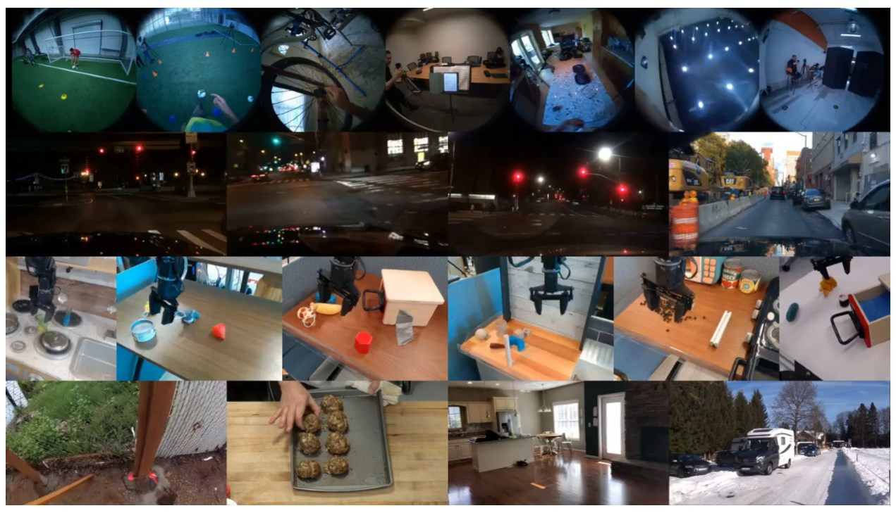
図10：TokenBench の動画例。この図は、一人称視点、運転、ロボット操作、ウェブ動画を含む多様な例を示している。
第 2 段階では、再構成動画の時間的な滑らかさを扱うためにオプティカルフロー（\( \texttt{OF} \)）損失（Teed and Deng, 2020）
\[ \mathcal{L}_{\text{Flow}} = \frac{1}{T}\sum_{t=1}^{T} \left\| \texttt{OF}(\hat{x}_t, \hat{x}_{t-1}) - \texttt{OF}(x_t, x_{t-1}) \right\|_1 + \frac{1}{T}\sum_{t=0}^{T-1} \left\| \texttt{OF}(\hat{x}_t, \hat{x}_{t+1}) - \texttt{OF}(x_t, x_{t+1}) \right\|_1, \]
を用い、再構成画像の鮮鋭さを高めるためにグラム行列（\( \texttt{GM} \)）損失（Gatys et al., 2016）
\[ \mathcal{L}_{\text{Gram}} = \frac{1}{L}\sum_{l=1}^{L}\sum_{t} \alpha_l \left\| \texttt{GM}_l(\hat{x}_t) - \texttt{GM}_l(x_t) \right\|_1. \tag{4} \]
を用いる。
さらに、ファインチューニング段階では、特に高い圧縮率において再構成の詳細をさらに向上させるために、敵対的損失を用いる。
画像トークナイザ（CI および DI と表記）は、\( 8\times 8 \) と \( 16\times 16 \) の 2 つの圧縮率で訓練する。同様に、動画トークナイザ（CV および DV と表記）は、\( 4\times 8\times 8 \)、\( 8\times 8\times 8 \)、\( 8\times 16\times 16 \) の 3 つの圧縮率で訓練する。ここで圧縮率は、画像では \( H\times W \)、動画では \( T\times H\times W \) として表される。\( T \) は時間方向の次元を、\( H \) と \( W \) は空間方向の次元を表す。
動画トークナイザについては、次の 2 つの変種を作成する。
- Cosmos-0.1-Tokenizer：720p の動画フレームを少ない枚数（CV では 49 フレーム、DV では 17 フレーム）サンプリングしたミニバッチを用いて訓練する。
- Cosmos-Tokenize1：360p または 720p の動画フレームを多い枚数（CV では 121 フレーム、DV では 49 フレーム）サンプリングしたミニバッチを用いて訓練する。
このアプローチにより、画像データと動画データのさまざまな時間解像度・空間解像度を柔軟に扱えるようになる。我々の実験は、トークナイザが訓練に用いた解像度によく汎化し、より高い解像度でも高い品質を維持することを示している。
| トークナイザ | フレーム数 | 定式化 | DAVIS | TokenBench | ||||
|---|---|---|---|---|---|---|---|---|
| PSNR ↑ | SSIM ↑ | rFVD ↓ | PSNR ↑ | SSIM ↑ | rFVD ↓ | |||
| CogVideoX-Tokenizer4×8×8 | 17 | VAE | 29.29 | 0.864 | 19.58 | 32.06 | 0.909 | 6.97 |
| Omni-Tokenizer4×8×8 | 17 | VAE | 22.23 | 0.713 | 117.66 | 24.48 | 0.830 | 35.86 |
| Cosmos-0.1-Tokenizer-CV4×8×8 | 49 | AE | 32.80 | 0.900 | 15.93 | 35.45 | 0.928 | 6.85 |
| Cosmos-0.1-Tokenizer-CV8×8×8 | 49 | AE | 30.61 | 0.856 | 30.16 | 34.44 | 0.917 | 11.62 |
| Cosmos-0.1-Tokenizer-CV8×16×16 | 49 | AE | 27.60 | 0.779 | 93.82 | 31.61 | 0.875 | 43.08 |
| Cosmos-Tokenize1-CV4×8×8-360p | 49 | AE | 35.85 | 0.920 | 10.057 | 38.42 | 0.950 | 3.34 |
| Cosmos-Tokenize1-CV8×8×8-720p | 121 | AE | 31.28 | 0.868 | 23.49 | 35.13 | 0.926 | 9.82 |
表5：DAVIS と TokenBench における連続動画（CV）トークナイザの評価。
| トークナイザ | フレーム数 | 量子化 | DAVIS | TokenBench | ||||
|---|---|---|---|---|---|---|---|---|
| PSNR ↑ | SSIM ↑ | rFVD ↓ | PSNR ↑ | SSIM ↑ | rFVD ↓ | |||
| VideoGPT-Tokenizer4×4×4 | - | VQ | 28.17 | 0.850 | 72.33 | 33.66 | 0.914 | 13.85 |
| Omni-Tokenizer4×8×8 | 17 | VQ | 20.02 | 0.703 | 188.60 | 25.31 | 0.827 | 53.55 |
| Cosmos-0.1-Tokenizer-DV4×8×8 | 17 | FSQ | 28.81 | 0.818 | 37.36 | 31.97 | 0.888 | 19.67 |
| Cosmos-0.1-Tokenizer-DV8×8×8 | 17 | FSQ | 27.51 | 0.789 | 100.15 | 30.95 | 0.873 | 43.86 |
| Cosmos-0.1-Tokenizer-DV8×16×16 | 17 | FSQ | 25.09 | 0.714 | 241.52 | 28.91 | 0.829 | 113.48 |
| Cosmos-Tokenize1-DV4×8×8-360p | 49 | FSQ | 32.97 | 0.840 | 53.44 | 35.74 | 0.910 | 19.25 |
| Cosmos-Tokenize1-DV8×16×16-720p | 49 | FSQ | 25.49 | 0.719 | 259.33 | 29.33 | 0.838 | 107.43 |
表6：DAVIS と TokenBench における離散動画（DV）トークナイザの評価。
4.3 結果
我々は Cosmos Tokenizer 群を、さまざまな画像・動画のベンチマークデータセットで広範に評価する。画像トークナイザの評価では、先行研究に従い MS-COCO 2017（Lin et al., 2014）と ImageNet-1K（Deng et al., 2009）で評価する。画像評価のベンチマークとして、\( 5{,}000 \) 枚の画像からなる MS-COCO 2017 の検証用部分集合と、\( 50{,}000 \) 枚の画像からなる ImageNet-1K の検証用部分集合を用いる。
TokenBench。動画トークナイザの評価については、高解像度かつ長時間の動画のための標準的なベンチマークがまだ存在しない。そこで、ロボット操作、運転、一人称視点、ウェブ動画を含む幅広いドメインをカバーし、評価を標準化するために、TokenBench と呼ぶベンチマークを導入する。BDD100K（Yu et al., 2020）、EgoExo-4D（Grauman et al., 2024）、BridgeData V2（Walke et al., 2023）、Panda-70M（Chen et al., 2024）など、さまざまなタスクで一般に用いられている既存の動画データセットを利用する。各データセットから \( 100 \) 本の動画をランダムにサンプリングし、最初の \( 10 \) 秒を切り出して短辺を \( 1080 \) にリサイズする前処理を行う。Panda-70M については、低品質な内容や動きの小さい動画を手作業で除外する。EgoExo-4D については、\( 100 \) シーンをランダムに選び、一人称視点の動画と三人称視点の動画をそれぞれ 1 本ずつサンプリングする。これにより合計 \( 500 \) 本の動画が得られる。TokenBench の例の一部を図 10 に示す。TokenBench は github.com/NVlabs/TokenBench で公開している。
TokenBench に加えて、\( 1080 \)p 解像度の DAVIS データセットでも動画トークナイザを評価する。
ベースラインと評価指標。さまざまな計算要件に対する有効性を示すために、さまざまな圧縮率でトークナイザを評価する。これらの各トークナイザを最先端の画像・動画トークナイザと比較する。表 4 に、さまざまな設定で比較対象とした具体的な SOTA トークナイザを示す。評価指標は、ピーク信号対雑音比（PSNR）、構造的類似度（SSIM）、画像については再構成フレシェ・インセプション距離（rFID）（Heusel et al., 2017）、動画については再構成フレシェ・ビデオ距離（rFVD）（Unterthiner et al., 2019）である。
| トークナイザ | 高さ | 定式化 | (a) MS-COCO 2017 | (b) ImageNet-1K | ||||
|---|---|---|---|---|---|---|---|---|
| PSNR ↑ | SSIM ↑ | rFID ↓ | PSNR ↑ | SSIM ↑ | rFID ↓ | |||
| FLUX-Tokenizer8×8 | - | VAE | 24.00 | 0.682 | 2.501 | 20.09 | 0.518 | 1.229 |
| Cosmos-0.1-Tokenizer-CI8×8 | 1024 | AE | 28.66 | 0.836 | 1.760 | 28.83 | 0.837 | 0.689 |
| Cosmos-0.1-Tokenizer-CI16×16 | 1024 | AE | 23.63 | 0.663 | 3.823 | 23.72 | 0.655 | 1.031 |
| Cosmos-Tokenize1-CI8×8-360p | 1024 | AE | 32.79 | 0.824 | 1.874 | 32.91 | 0.824 | 0.785 |
| Cosmos-Tokenize1-CI16×16-360p | 1024 | AE | 31.28 | 0.682 | 4.294 | 31.29 | 0.675 | 0.701 |
表7：さまざまな画像データセットにおける連続画像（CI）トークナイザの評価。
| トークナイザ | 高さ | 量子化 | (a) MS-COCO 2017 | (b) ImageNet-1K | ||||
|---|---|---|---|---|---|---|---|---|
| PSNR ↑ | SSIM ↑ | rFID ↓ | PSNR ↑ | SSIM ↑ | rFID ↓ | |||
| Open-MAGVIT2-Tokenizer16×16 | - | LFQ | 19.50 | 0.502 | 6.649 | 17.00 | 0.398 | 2.701 |
| LlamaGen-Tokenizer8×8 | - | VQ | 21.99 | 0.616 | 4.123 | 19.64 | 0.498 | 1.403 |
| LlamaGen-Tokenizer16×16 | - | VQ | 19.11 | 0.491 | 6.077 | 18.38 | 0.448 | 1.657 |
| Cosmos-0.1-Tokenizer-DI8×8 | 1024 | FSQ | 24.40 | 0.704 | 3.710 | 24.48 | 0.701 | 1.265 |
| Cosmos-0.1-Tokenizer-DI16×16 | 1024 | FSQ | 20.45 | 0.529 | 7.234 | 20.49 | 0.518 | 2.518 |
| Cosmos-Tokenize1-DI8×8-360p | 1024 | AE | 31.36 | 0.714 | 4.133 | 31.34 | 0.707 | 1.324 |
| Cosmos-Tokenize1-DI16×16-360p | 1024 | AE | 30.54 | 0.565 | 7.557 | 30.46 | 0.549 | 2.147 |
表8：さまざまな画像データセットにおける離散画像（DI）トークナイザの評価。（訳注：Cosmos-Tokenize1-DI の 2 行は「量子化」列が原文では AE となっている。離散トークナイザは FSQ を用いると本文にあるため、FSQ の誤記の可能性がある。）
| トークナイザ | 種別 | 解像度 | フレーム数 | パラメータ数 | 時間（ms） |
|---|---|---|---|---|---|
| FLUX-Tokenizer8×8 | 連続・画像 | 1024 × 1024 | - | 84M | 242 |
| Cosmos-0.1-Tokenizer-CI8×8 | 連続・画像 | 1024 × 1024 | - | 77M | 62.7 |
| LlamaGen-Tokenizer8×8 | 離散・画像 | 1024 × 1024 | - | 70M | 475 |
| Cosmos-0.1-Tokenizer-DI8×8 | 離散・画像 | 1024 × 1024 | - | 79M | 64.2 |
| CogVideoX-Tokenizer4×8×8 | 連続・動画 | 720 × 1280 | 17 | 216M | 414 |
| Omni-Tokenizer4×8×8 | 連続・動画 | 720 × 1280 | 17 | 54M | 82.9 |
| Cosmos-0.1-Tokenizer-CV4×8×8 | 連続・動画 | 720 × 1280 | 49 | 105M | 34.8 |
| Omni-Tokenizer4×8×8 | 離散・動画 | 720 × 1280 | 17 | 54M | 53.2 |
| Cosmos-0.1-Tokenizer-DV4×8×8 | 離散・動画 | 720 × 1280 | 17 | 105M | 51.5 |
表9：トークナイザの実行時性能の比較。時間は画像 1 枚あたり、または動画 1 フレームあたりで報告している。
定量的結果。表 5 と表 6 は、さまざまなベンチマークにおける連続・離散動画トークナイザの平均的な定量指標をまとめたものである。両表に示すように、Cosmos Tokenizer は、\( 4\times 8\times 8 \) の時空間圧縮率において、DAVIS 動画データセットと TokenBench の両方で、先行研究と比べてすべての指標で最先端の性能を達成している。さらに、2\( \times \) および 8\( \times \) 高い圧縮率（すなわち \( 8\times 8\times 8 \) と \( 8\times 16\times 16 \)）でも、Cosmos Tokenizer は先行研究より優れた品質を達成しており、優れた圧縮・品質トレードオフを示している。
表 7 と表 8 は、幅広い種類の画像をカバーするさまざまな画像ベンチマークにおける、連続・離散画像トークナイザの平均的な定量指標をまとめたものである。示されているように、Cosmos Tokenizer は先行研究と比べて、\( 8\times 8 \) の圧縮率で一貫して最先端の結果を達成している。さらに重要なことに、表 7 と表 8 に示すように、4\( \times \) 大きい \( 16\times 16 \) の圧縮率において、Cosmos Tokenizer の画像品質は、\( 8\times 8 \) の圧縮率における先行研究としばしば同等か、それを上回ることさえある。
さまざまな画像・動画ベンチマークデータセットにおけるこれらの定量的結果は、Cosmos Tokenizer が大きな時空間圧縮のもとで視覚内容をよりよく表現できることを裏づけている。
実行時性能。表 9 は、単一の A100 80GB GPU で測定した、パラメータ数と、画像 1 枚あたりまたは動画 1 フレームあたりの平均エンコード・デコード時間を示している。比較のため、従来の最先端トークナイザのパラメータ数と平均速度も併記している。示されているように、画像トークナイザと動画トークナイザの両方で、Cosmos Tokenizer は先行研究と比べて最小のモデルサイズを維持しつつ 2\( \times \) \( \sim \) 12\( \times \) 高速であり、Cosmos Tokenizer が視覚内容のエンコードとデコードにおいて高い効率を持つことを示している。
5 世界基盤モデルの事前学習
事前学習済み WFM は、現実世界の物理と自然な振る舞いに関する一般的な知識を捉えたジェネラリストである。我々は、2 つの異なるスケーラブルな深層学習パラダイムである拡散モデルと自己回帰モデルを活用して、2 つの WFM ファミリーを構築する。拡散モデルと自己回帰モデルはいずれも、難しい生成問題をより容易な部分問題の系列に分解するものであり、生成モデルの発展を強力に加速してきた。拡散モデルの場合、難しい生成問題はノイズ除去問題の系列に分割される。自己回帰モデルの場合、難しい生成問題は次トークン予測問題の系列に分割される。事前学習済み WFM を構築する取り組みの中で、最新の GPU 向けに調整されたさまざまな並列化技術を用いてこれらの深層学習パラダイムをどのようにスケールさせるかを論じる。本論文で報告するすべての WFM モデルは、\( 10{,}000 \) 基の NVIDIA H100 GPU からなるクラスタを用いて 3 か月の期間で訓練した。
| 種別 | 拡散 | 自己回帰 |
|---|---|---|
| モデル | 1. Cosmos-Predict1-7B-Text2World → Cosmos-Predict1-7B-Video2World | 1. Cosmos-Predict1-4B → Cosmos-Predict1-5B-Video2World |
| 2. Cosmos-Predict1-14B-Text2World → Cosmos-Predict1-14B-Video2World | 2. Cosmos-Predict1-12B → Cosmos-Predict1-13B-Video2World | |
| トークナイザ | Cosmos-Tokenize1-CV8×8×8-720p | Cosmos-Tokenize1-DV8×16×16-720p |
| エンハンサ | Cosmos-UpsamplePrompt1-12B-Text2World | Cosmos-Predict1-7B-Decoder-DV8×16×16ToCV8×8×8-720p |
表10：Cosmos 世界基盤モデルの全体マップ。WFM には 2 つのセットがある。1 つは拡散モデルに基づき、もう 1 つは自己回帰モデルに基づく。各ファミリーについて、2 つのベースモデルと 2 つの派生モデルを構築する。最高の生成品質を達成するために、拡散モデル向けのプロンプトアップサンプラと、自己回帰モデル向けの拡散デコーダも構築する。
表 10 に、我々の事前学習済み WFM とその付随モデルのマップを示す。拡散ベースの WFM ファミリーでは、まずそれぞれ 7B と 14B の 2 つの Text2World モデルを構築し、Cosmos-Predict1-7B-Text2World と Cosmos-Predict1-14B-Text2World を得る。これらのモデルは、テキストプロンプトを視覚世界の動画に写像できる。次に、Text2World モデルをファインチューニングして、現在の観測を表す動画を追加の入力として受け取れるようにする。その結果が、現在の観測（入力動画）と摂動（テキストプロンプト）に基づいて将来の動画を予測する Video2World モデルである。これらの拡散モデルは、連続トークンを入力とする潜在拡散モデルである。視覚トークンの生成には Cosmos-Tokenize1-CV8×8×8-720p を用いる。WFM の訓練用テキストプロンプトは、動画説明文の生成を通じて VLM によって作られる。これらの説明文は、人間による動画の説明とは異なる分布に従う。このドメインギャップを緩和するために、Mistral-NeMo-12B-Instruct モデル（Mistral and NVIDIA, 2024）に基づいて Cosmos-UpsamplePrompt1-12B-Text2World を構築し、人間のテキストプロンプトを我々の拡散ベースの WFM が好む形式に変換するのに役立てる。
自己回帰ベースの WFM ファミリーでは、まず現在の動画観測のみに基づいて将来の動画を予測する、それぞれ 4B と 12B のサイズの 2 つのベースモデルを構築する。これらをそれぞれ Cosmos-Predict1-4B、Cosmos-Predict1-12B と名付ける。これらは動画予測タスクのためにスクラッチから訓練された Llama3 スタイルの GPT モデルであり、言語理解能力は持たない。自己回帰ベースの WFM が次トークン予測にテキスト情報を活用できるようにするため、トランスフォーマブロックに追加したクロスアテンション層を通じて、入力テキストプロンプトの T5 埋め込みを WFM に組み込む。これらの自己回帰 WFM は、入力動画を少数の整数に写像する Cosmos-Tokenize1-DV8×16×16-720p を用いる。トークナイザの強い圧縮は、ときに望ましくない歪みにつながることがある。この問題に対処するため、Cosmos-Predict1-7B-Text2World モデルをファインチューニングして、DV8×16×16 空間の離散トークンを CV8×8×8 空間の連続トークンに写像する拡散デコーダ（Cosmos-Predict1-7B-Decoder-DV8×16×16ToCV8×8×8-720p）を構築する。
5.1 拡散ベースの世界基盤モデル
我々の拡散ベースの WFM は、トークナイザの学習済み潜在空間内で動作する潜在拡散モデルであり、動画のコンパクトで次元削減された表現を可能にする。この設計上の選択にはいくつかの利点がある。ノイズ除去タスクを単純化しつつ、訓練と推論の両方で計算コストを削減する（Hoogeboom et al., 2024; Rombach et al., 2022）。動画を潜在表現にトークン化するために、Cosmos-Tokenize1-CV8×8×8-720p を用いる。
5.1.1 定式化
拡散 WFM の訓練には、EDM（Karras et al., 2022, 2024）で概説されたアプローチを採用する。ノイズレベル \( \sigma \) で評価されるデノイザ \( D_\theta \) のノイズ除去スコアマッチング損失は、次のように定義される。
\[ \mathcal{L}(D_\theta, \sigma) \;=\; \mathbb{E}_{\mathbf{x}_0,\mathbf{n}}\Big[ \big\| D_\theta(\mathbf{x}_0 + \mathbf{n}; \sigma) - \mathbf{x}_0 \big\|_2^2 \Big], \tag{5} \]
ここで \( \mathbf{x}_0 \sim p_{\text{data}} \) は訓練セットからサンプリングされたクリーンな画像または動画、\( \mathbf{n} \sim \mathcal{N}\big(\mathbf{0}, \sigma^2 \mathbf{I}\big) \) は i.i.d. のガウスノイズ、\( D_\theta \) は劣化したサンプル \( \mathbf{x}_0 + \mathbf{n} \) のノイズ除去を担う、ノイズで条件付けられたニューラルネットワークである。\( D_\theta \) のパラメータ化には、EDM で導入された前処理（preconditioning）の設計に従う。全体の訓練損失は、ノイズレベルにわたる \( \mathcal{L}(D_\theta; \sigma) \) の重み付き期待値として定義される。
\[ \mathcal{L}(D_\theta) = \mathbb{E}_\sigma\left[ \frac{\lambda(\sigma)}{e^{u(\sigma)}} \mathcal{L}(D_\theta, \sigma) + u(\sigma) \right], \tag{6} \]
\[ \lambda(\sigma) = \big(\sigma^2 + \sigma_{\text{data}}^2\big) \,/\, (\sigma \cdot \sigma_{\text{data}})^2, \tag{7} \]
\[ \ln(\sigma) \sim \mathcal{N}\big(P_{\text{mean}}, P_{\text{std}}^2\big), \tag{8} \]
ここで、ノイズレベル \( \sigma \) の分布はハイパーパラメータ \( P_{\text{mean}} \) と \( P_{\text{std}} \) によって制御される。\( \sigma_{\text{data}} \) は訓練データの標準偏差であり、重み関数 \( \lambda(\sigma) \) は訓練の開始時に各ノイズレベルが等しく寄与することを保証する。しかし、訓練が進むにつれて、このバランスは崩れる可能性がある。この問題を緩和するために、さまざまなノイズレベルにわたる最適化をマルチタスク学習の一形態として扱う。ノイズレベル \( \sigma \) におけるノイズ除去目的 \( \mathcal{L}(D_\theta, \sigma) \) の不確実性を定量化する連続的な不確実性関数として \( u(\sigma) \) を導入し、不確実性に基づく重み付けのアプローチを用いる。\( u(\sigma) \) を単純な MLP でパラメータ化し、訓練中に全体の損失 \( \mathcal{L}(D_\theta) \) を最小化する。直観的には、モデルがタスクについて不確実である場合、すなわち \( u(\sigma) \) が高い場合には、ノイズレベル \( \sigma \) における損失の寄与が小さく重み付けされる。同時に、モデルはこの不確実性に対してペナルティを受け、\( u(\sigma) \) をできるだけ低くするよう促される。
ガウスフローマッチングの定式化を採用する最近の動画生成モデル（Kong et al., 2024; Polyak et al., 2024）と比べて、我々の研究は拡散スコアマッチングの観点（Ho et al., 2020; Song et al., 2020）から導出されている。しかし、Gao et al.（2024）が示したように、これらの枠組みは理論的に等価であり、目的関数と訓練手順において基本的な類似性を共有している。我々の EDM ベースの定式化はこれらの知見と整合しており、主に前処理の設計とハイパーパラメータの選択が異なるのみである。実際、EDM の定式化で性能上の制約に遭遇したことはない。
5.1.2 アーキテクチャ
本節では、デノイザネットワーク \( D_\theta \) の設計について述べる。これは、もともとラベル条件付きの画像生成のために設計された DiT（Peebles and Xie, 2023）を基盤としている。我々は、制御可能な動画生成という目標によりよく適合するように、そのアーキテクチャを適応させる。ネットワーク設計の全体像を図 11 に示す。
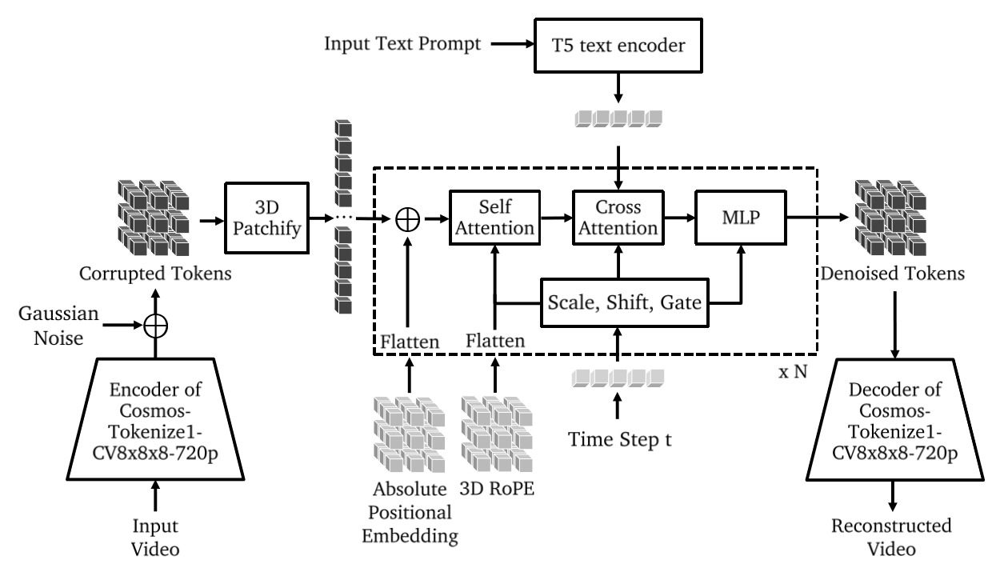
図11：Cosmos-Predict1 世界基盤モデルの全体アーキテクチャ。モデルは入力動画を Cosmos-Tokenize1-CV8×8×8-720p のエンコーダで処理して潜在表現を得て、その後それにガウスノイズで摂動を加える。次に、これらの表現は 3D パッチ化処理によって変換される。潜在空間において、このアーキテクチャは、与えられた時間ステップ \( t \) に対する適応的層正規化（スケール、シフト、ゲート）で変調された、自己注意、クロスアテンション（入力テキストを統合する）、フィードフォワード MLP 層からなるブロックを繰り返し適用する。Cosmos-Tokenize1-CV8×8×8-720p のデコーダが、洗練された潜在表現から最終的な動画出力を再構成する。
図中ラベル：Input Text Prompt＝入力テキストプロンプト、T5 text encoder＝T5 テキストエンコーダ、Input Video＝入力動画、Encoder of Cosmos-Tokenize1-CV8x8x8-720p＝Cosmos-Tokenize1-CV8x8x8-720p のエンコーダ、Gaussian Noise＝ガウスノイズ、Corrupted Tokens＝劣化したトークン、3D Patchify＝3D パッチ化、Flatten＝平坦化、Absolute Positional Embedding＝絶対位置埋め込み、Self Attention＝自己注意、Cross Attention＝クロスアテンション、Scale, Shift, Gate＝スケール、シフト、ゲート、Time Step t＝時間ステップ t、Denoised Tokens＝ノイズ除去されたトークン、Decoder of Cosmos-Tokenize1-CV8x8x8-720p＝Cosmos-Tokenize1-CV8x8x8-720p のデコーダ、Reconstructed Video＝再構成動画
3D パッチ化。我々のネットワークへの入力は、画像データと動画データのいずれについても形状 \( T\times C\times H\times W \) の潜在表現であり、画像は 1 フレームの動画として区別される。デノイザネットワークへの入力を準備するために、まず線形層を用いて状態を「パッチ化」し、その後平坦化する。この処理では、形状 \( (p_t, p_h, p_w) \) の重なりのない立方体を、ネットワークへの個々のトークン入力に射影する。その結果、パッチ化の後、画像または動画は長さ \( THW/(p_t p_h p_w) \) の 1 次元の時空間系列に変形される。デノイザネットワークでは \( p_t = 1, p_h = p_w = 2 \) を用いる。
FPS を考慮した 3D RoPE と学習可能な埋め込みによるハイブリッド位置埋め込み。任意のサイズ、アスペクト比、動画長の生成を可能にするために、3D 分解型の回転位置埋め込み（RoPE）（Su et al., 2024）を用いる。具体的には、特徴次元をほぼ等しい 3 つのチャンクに分割し、それぞれが時間軸、高さ軸、幅軸に沿った位置情報で RoPE を適用する。実際には、各軸の周波数埋め込みを連結し、大規模言語モデル（LLM）向けに最適化された RoPE カーネルを再利用することで、各ブロックで分割と連結を行うことなく効率的に実装できる。さらにさまざまなフレームレートでの動画合成に対応するために、訓練動画の 1 秒あたりのフレーム数（FPS）に基づいて時間方向の周波数を再スケーリングする。RoPE の相対位置符号化の性質と我々の 3D 分解設計により、この FPS を考慮した設計は画像と動画の同時訓練と両立する。RoPE のもう 1 つの利点は、解像度や動画長を変更する段階的訓練の際に明らかになる。Neural Tangent Kernel（NTK）-RoPE（Peng and Quesnelle, 2023）を活用することで、モデルが急速に収束し、\( 5{,}000 \) 訓練ステップ以内でも妥当な性能を達成することが観察される。さらに、トランスフォーマブロックごとに学習可能な絶対位置埋め込みを追加することで、モデルをさらに強化し、訓練損失を減少させ、生成動画におけるモーフィングのアーティファクトを低減できることがわかった。
テキスト条件付けのためのクロスアテンション。言語情報を組み込むために、ネットワーク内のクロスアテンション層を用いる。各トランスフォーマブロックは、順に並んだ自己注意層、クロスアテンション層、フィードフォワード層からなる。自己注意が時空間トークン上で動作するのに対し、クロスアテンションは T5-XXL（Raffel et al., 2020）の埋め込みをキーとバリューとして用いて意味的な文脈を統合し、効果的なテキスト条件付けを可能にする。
クエリ・キー正規化。訓練の初期段階において、注意ロジットの増大に不安定性が生じ、注意のエントロピーが崩壊することが観察される。既存の文献（Dehghani et al., 2023; Esser et al., 2024; Wortsman et al., 2023）に従い、注意演算の前にクエリ \( Q \) とキー \( K \) を正規化する。ネットワーク内のすべての自己注意層とクロスアテンション層に対して、学習可能なスケールを持つ二乗平均平方根正規化（RMSNorm）（Zhang and Sennrich, 2019）を用いる。
AdaLN-LoRA。DiT の適応的層正規化（AdaLN）層（Peebles and Xie, 2023; Xu et al., 2019）は、FLOPs の観点での計算量にはほとんど寄与しないにもかかわらず、モデルパラメータのかなりの部分を占めていることがわかった。W.A.L.T（Gupta et al., 2024）に着想を得て、低ランク適応（LoRA）（Hu et al., 2022）を実装し、これらの層の密な線形射影を低ランク近似に分解する。Cosmos-Predict1-7B では、このアーキテクチャ上の最適化により、すべての評価指標で同等の性能を維持しつつ、パラメータ数を 36% 削減（11B から 7B パラメータへ）しており、我々のパラメータ効率の高い設計の有効性を示している。
| 構成 | 7B-Text2World | 14B-Text2World | 7B-Video2World | 14B-Video2World |
|---|---|---|---|---|
| 層数 | 28 | 36 | 28 | 36 |
| モデル次元 | 4,096 | 5,120 | 4,096 | 5,120 |
| FFN 隠れ次元 | 16,384 | 20,480 | 16,384 | 20,480 |
| AdaLN-LoRA 次元 | 256 | 256 | 256 | 256 |
| 注意ヘッド数 | 32 | 40 | 32 | 40 |
| キー／バリューのヘッド数 | 32 | 40 | 32 | 40 |
| MLP 活性化関数 | GELU | |||
| 位置埋め込み | ハイブリッド位置埋め込み | |||
| 条件情報 | Text; FPS | Text; FPS | Text; FPS; Frames | Text; FPS; Frames |
| 基本学習率 | \( 2^{-15} \) | \( 2^{-16} \) | \( 2^{-15} \) | \( 2^{-16} \) |
| 重み減衰 | 0.1 | 0.2 | 0.1 | 0.2 |
| 学習率ウォームアップ | 2,500 イテレーションの線形スケジューラ | |||
| AdamW のモーメンタムと \( \epsilon \) | \( \beta_1, \beta_2 = 0.9, 0.99;\ \epsilon = 10^{-10} \) | |||
表11：Cosmos-Predict1 モデルの構成の詳細。
5.1.3 訓練戦略
本節では、複数のモダリティ、解像度、アスペクト比、条件入力にまたがるデータセットでモデルを訓練するために用いた方法論を概説する。
画像と動画の同時訓練。高品質で多様な画像データセットが大量に存在することをモデル訓練に活かすため、画像データと動画データのバッチを交互に挟み込む交互最適化戦略を実装する。画像ドメインと動画ドメインの間のクロスモーダルな知識転移を促進するため、画像データと動画データについて独立に推定した十分統計量を用いて潜在分布を揃える、ドメイン固有の正規化方式を採用する。このアプローチは、画像と動画の潜在表現間の分布シフトを減らすと生成品質が向上するという観察に動機づけられている。さらに、動画の潜在表現では、時間次元とチャネル次元にわたって非定常な統計量が観察される。この不均一性に対処するため、動画の潜在表現にフレームごと・チャネルごとの標準化を適用する正規化戦略を用い、等方的なガウス事前分布をよりよく近似するよう効果的に促す。
クロスモダリティの知識転移に加えて、我々の正規化方式は重要な理論的利点をもたらす。それは、訓練中の信号対雑音比のスケール不変性である。スケールの異なる 2 つの平均ゼロの潜在表現を考える。一方は単位分散に標準化されており、もう一方は分散 4 を持つ。標準化された表現に対して所望の信号対雑音比を得るためにガウスノイズ \( \mathcal{N}(0, \sigma^2) \) を加える場合、正規化されていない表現で同じ比を維持するには、ノイズを \( \mathcal{N}(0, 4\sigma^2) \) にスケールしなければならない。すべての潜在表現を標準化することで、異なるスケールにわたって一貫した信号対雑音比が保証され、訓練中に基盤となるトークナイザが更新された場合でもモデルの適応が容易になる。
計算効率を維持するために、画像と動画のバッチサイズのバランスをとり、GPU 間で同程度のメモリ使用量となるようにする。しかし、動画バッチのノイズ除去損失は、画像バッチの損失と比べて収束が遅いことが観察される。これは、動画フレームに固有の時間的冗長性によって動画バッチの勾配の大きさが小さくなるためであると考えられる。マルチ解像度の画像訓練における最近の進展（Atzmon et al., 2024; Chen, 2023; Hoogeboom et al., 2023）に着想を得て、動画バッチのノイズレベルを画像バッチのノイズレベルに対してフレーム数の平方根でスケーリングすることで、この収束の不一致に対処する。
| 段階 | 解像度 | フレーム数 | コンテキスト長 | FSDP サイズ | CP サイズ |
|---|---|---|---|---|---|
| 低解像度事前学習 | 512p（640×512） | 57 | 10,240 a | 64 | 2 |
| 高解像度事前学習 | 720p（1280×704） | 121 | 56,320 b | 64 | 8 |
| 高品質ファインチューニング | 720p（1280×704） | 121 | 56,320 b | 64 | 8 |
a 10,240（コンテキスト長）は次のように計算される：640（幅）\( \div 8 \)（トークン化）\( \div 2 \)（パッチ化）\( \times 512 \)（高さ）\( \div 8 \)（トークン化）\( \div 2 \)（パッチ化）\( \times [(57-1) \div 8 + 1] \)（フレームのトークン化）。
b 56,320（コンテキスト長）は次のように計算される：1280（幅）\( \div 8 \)（トークン化）\( \div 2 \)（パッチ化）\( \times 704 \)（高さ）\( \div 8 \)（トークン化）\( \div 2 \)（パッチ化）\( \times [(121-1) \div 8 + 1] \)（フレームのトークン化）。
表12：段階的訓練の各段階とその仕様。
段階的訓練。段階的な訓練戦略を採用する。各段階の詳細は表 12 に示す。最初の段階では、57 フレームからなる動画を用いて、解像度 512 ピクセルの動画と画像で訓練する。その後、目標解像度の 720 ピクセルに移行し、動画長を 121 フレームに増やす。大量のデータでの事前学習の後、線形に減衰する学習率で、高品質な部分集合を用いて \( \mathcal{O}(10k) \) イテレーションの間モデルをファインチューニングする。Dai et al.（2023）の知見と一致して、ファインチューニングによって生成動画の品質が向上することも確認した。
マルチアスペクト訓練。さまざまなアスペクト比のコンテンツに対応するため、データを 1:1、3:4、4:3、9:16、16:9 の比に対応する 5 つの異なるバケットに整理し、各画像または動画をアスペクト比が最も近いバケットに割り当てる。訓練中、各データ並列プロセスグループは 1 つのバケットからサンプリングし、異なる並列プロセスグループで異なるバケットを用いることを許す。プロンプトに記述された元のコンテンツ情報を最大限に保持するため、長辺基準のリサイズを実装する。バッチ処理のために、欠けているピクセルには反射パディングを適用し、パディングマスクを拡散バックボーンに与えることで、推論時の精密な制御を可能にする。
混合精度訓練。モデルの重みのコピーを 2 つ、すなわち BF16 のものと FP32 のものを保持する。順伝播と逆伝播の間は、訓練効率を向上させるために BF16 の重みを用い、その結果、勾配と活性化も BF16 形式となる。パラメータ更新では、数値的安定性を確保するために重みを FP32 で更新する。更新された FP32 のパラメータは、次のイテレーションのためにコピーされ BF16 にキャストされる。訓練をさらに安定させるため、式（5）のノイズ除去スコアマッチングの損失を 10 倍にスケーリングする。また、AdamW の beta と eps の係数を小さくすると、損失スパイクが大幅に減少することもわかった。14B の拡散モデルの訓練では、損失スパイクにはほとんど遭遇せず、回復不能な損失スパイクは発生しなかった。
テキスト条件付け。Text2World モデルでは、テキストエンコーダとして T5-XXL（Raffel et al., 2020）を用いる。固定系列長 512 を維持するために、T5 埋め込みをゼロパディングする。テキストと文脈の整合性を高めるため、classifier-free guidance（Ho and Salimans, 2022）を採用する。テキスト埋め込みをランダムにゼロにする先行研究（Balaji et al., 2022; Saharia et al., 2022）とは異なり、推論時のネガティブプロンプトが有効であるため、このステップを省略する。特筆すべきこととして、テキストから画像への生成器として、我々のモデルはガイダンスなしでも忠実度の高い画像の生成に優れており、我々はこの能力を高品質な訓練データセットによるものと考えている。classifier-free guidance は通常、好ましい視覚内容に対するモード探索的な振る舞いを促すが、慎重なデータ選択によって同様の効果が得られることがわかった。しかし動画生成については、同等の高品質データが不足しているため、ガイダンスが低い設定では最適でない結果となる。そのため、動画生成タスクで満足のいく内容を生成するには、より高いガイダンス値が必要である。
画像と動画による条件付け。Text2World モデルを拡張し、生成プロセスに過去のフレームを組み込むことで、画像と動画による条件付けをサポートする Video2World モデルを構築する。具体的には、条件フレームを時間次元に沿って生成フレームと連結する。推論時の入力フレームの変動に対する頑健性を向上させるため、訓練中に条件フレームに拡張ノイズを導入する。この拡張ノイズのシグマ値は \( P_{\text{mean}} = -3.0, P_{\text{std}} = 2.0 \) でサンプリングする。さらに、拡散モデルへの入力には、条件フレームと生成フレームを区別する二値マスクをチャネル次元に沿って連結する。損失関数は条件フレームの位置からの寄与を除外し、生成された出力のみに焦点を当てる。汎化を向上させるために、訓練中に条件フレームの数をランダムに変化させる。推論時には、モデルは単一の条件フレーム（画像）または複数の過去フレームのいずれを入力としても柔軟に動作できる。
5.1.4 スケールアップ
ここでは、拡散 WFM の効率的なスケーリングを可能にする技術を概説する。モデルのメモリ要件を分析し、並列化戦略を論じ、我々の訓練設定を他の動画拡散モデルや最先端の LLM と比較する。
メモリ要件。GPU メモリを消費する主要な構成要素は次の 4 つである。
- モデルパラメータ：パラメータあたり 10 バイト。我々の混合精度訓練では、モデルパラメータを FP32 と BF16 の両方で保存し、さらに指数移動平均（EMA）の重みを FP32 で保存する。
- 勾配：パラメータあたり 2 バイト。勾配は BF16 で保存する。
- オプティマイザの状態：パラメータあたり 8 バイト。オプティマイザとして AdamW（Loshchilov and Hutter, 2019）を用い、オプティマイザの状態（すなわち一次と二次のモーメント）を FP32 で保存する。
- 活性化：\( (2 \times \text{number\_of\_layers} \times 15 \times \text{seq\_len} \times \text{batch\_size} \times \text{d\_model}) \) バイト。活性化は BF16 で保存する。表 13 に、ネットワーク内の主要な演算について保存される活性化の詳細を示す。メモリ使用量を最適化するために、選択的な活性化チェックポイント（Chen et al., 2016; Korthikanti et al., 2023）を実装し、正規化関数のようなメモリ制約のある層について活性化を再計算する。
例えば、我々の 14B モデル（Cosmos-Predict1-14B-Text2World）は、高解像度の事前学習中に、モデルパラメータ、勾配、オプティマイザの状態に約 280 GB、活性化に 310 GB を必要とする。NVIDIA H100 GPU の 80GB HBM3 という上限を考慮して、完全シャーディングデータ並列（FSDP）とコンテキスト並列（CP）を用いて、メモリ需要を複数の GPU に分散させる。
完全シャーディングデータ並列（FSDP）。FSDP は、モデルパラメータ、勾配、オプティマイザの状態をデバイス間でシャーディングすることでメモリ効率を向上させる。計算中に必要なときだけパラメータを集め、その後解放する。デバイス間でパラメータを複製する標準的なデータ並列とは異なり、FSDP はパラメータ、勾配、オプティマイザの状態を分散させ、各デバイスは自身のシャードのみを管理する。このアプローチにより、メモリ使用量は、一時的にシャーディングを解除された最大のパラメータ集合と、自身のパラメータ、勾配、オプティマイザ状態のシャードにまで最小化される。我々の実装では、メモリと通信遅延のバランスをとるため、7B モデルにはシャーディング係数 32、14B モデルには 64 を用いる。
コンテキスト並列（CP）。長いコンテキストの設定に向けてトランスフォーマをスケーリングすると、FLOPs と活性化メモリの増大という課題が生じる。CP は、計算と活性化を複数の GPU に分散させることでこれらの課題に対処する。CP は、クエリ \( Q \) とキー・バリュー \( (K, V) \) の両方をそれぞれの系列次元に沿って CP_SIZE 個のチャンクに分割することで動作する。ここで CP_SIZE は CP グループ内の GPU 数である。各 GPU は \( Q \) の 1 つのチャンクを処理し、同じ CP グループに格納された \( (K, V) \) のブロックを用いて部分的な注意出力を反復的に蓄積する。CP のさまざまな実装は、all-gather（Dubey et al., 2024）、P2P（Liu et al., 2023）、all-to-all（Jacobs et al., 2023）など、異なる通信プリミティブを利用する。我々は TransformerEngine（NVIDIA, 2024）の P2P 変種を用いる。これは、注意を処理しながら同時に GPU 間で \( (K, V) \) ブロックを転送することで、計算と通信をオーバーラップさせる。ブロックサイズを慎重に選択すれば、このオーバーラップによってデータ転送の遅延を効果的に隠蔽できる。CP グループは NVLink で接続された GPU 内で構成し、最適な利用のために CP ランクを FSDP ランクとオーバーラップさせる。コンテキストが短い画像のイテレーションでは、スループットを向上させるために CP を無効にする。クロスアテンション層では、\( (K, V) \) の系列長が短く、通信遅延を隠蔽するのに十分な計算量がないため、CP を用いない。
| 層 | 演算 | FLOPs | 活性化（テンソル形状） |
|---|---|---|---|
| 自己注意 | \( Q, K, V \) 射影 | \( 2\times 3\times \) seq_len \( \times \) d_model\( ^2 \) | seq_len \( \times \) batch_size \( \times \) d_model a |
| \( QK \) Norm | — | \( 2\times \) seq_len \( \times \) batch_size \( \times \) d_model b | |
| \( A = Q@K^T \) | \( 2\times \) seq_len\( ^2 \) \( \times \) d_model | — c | |
| \( A' = \mathrm{Softmax}(A) \) | — | — d | |
| \( A'@V \) | \( 2\times \) seq_len\( ^2 \) \( \times \) d_model | seq_len \( \times \) batch_size \( \times \) d_model e | |
| 最終射影 | \( 2\times \) seq_len \( \times \) d_model\( ^2 \) | seq_len \( \times \) batch_size \( \times \) d_model | |
| クロスアテンション | \( Q, K, V \) 射影 | \( 2\times \) seq_len \( \times \) d_model\( ^2 \) | seq_len \( \times \) batch_size \( \times \) d_model |
| \( QK \) Norm | — | seq_len \( \times \) batch_size \( \times \) d_model f | |
| \( A = Q@K^T \) | — | — c | |
| \( A' = \mathrm{Softmax}(A) \) | — | — d | |
| \( A'@V \) | — | — g | |
| 最終射影 | \( 2\times \) seq_len \( \times \) d_model\( ^2 \) | seq_len \( \times \) batch_size \( \times \) d_model | |
| フィードフォワード | アップ射影 | \( 4\times \) seq_len \( \times \) d_model\( ^2 \) | seq_len \( \times \) batch_size \( \times \) d_model |
| GELU | — | \( 4\times \) seq_len \( \times \) batch_size \( \times \) d_model | |
| ダウン射影 | \( 4\times \) seq_len \( \times \) d_model\( ^2 \) | — h | |
| AdaLN | LayerNorm | — | seq_len \( \times \) batch_size \( \times \) d_model |
| Scale | — | — i | |
| Shift | — | — | |
| Gate | — | seq_len \( \times \) batch_size \( \times \) d_model |
a 共有入力を保存する。b クエリ \( Q \) とキー \( K \) を保存する。c 正規化されたクエリ \( Q \) とキー \( K \) は再計算する。d 注意スコア（\( A = Q@K^T \)）は再計算する。e バリュー \( V \) を保存する。正規化された注意重み（\( A' = \mathrm{Softmax}(A) \)）は再計算する。f クロスアテンションでは、クエリ \( Q \) のみを計上する。キー \( K \) は系列長がはるかに短いため無視できる。g クロスアテンションでは、バリュー \( V \) は系列長がはるかに短いため無視できる。h 入力は GELU から再計算する。i 入力は LayerNorm から再計算する。
表13：Cosmos-Diffusion トランスフォーマの FLOPs と活性化メモリ。この表は、各演算の計算コスト（FLOPs）と活性化メモリの要件を示す。FLOPs については、積和演算のコストを表すために係数 2 を用いる。「—」は、値が小さいため無視できる場合、または値を保存する代わりに活性化チェックポイントで再計算してメモリを節約するため省略した場合を表す。
Cosmos-Predict1-14B を例にとると、シャーディング係数 64 の FSDP を用いることで、パラメータ、勾配、オプティマイザ状態のメモリ要件が 280 GB から GPU あたり約 \( 280 \,/\, 64 \approx 4 \) GB に削減される。同様に、CP_SIZE \( = 8 \) の CP を用いることで、活性化メモリは 310 GB から GPU あたりおよそ \( 310 \,/\, 8 \approx 40 \) GB に減少する。これらの計算は過小評価であることに注意が必要である。実際には、トークナイザやシャーディングされていないパラメータによって追加のメモリが消費される。また、CP で通信と計算をオーバーラップさせるには、各 GPU が \( (K, V) \) の複数のチャンクを保持する必要がある。
他の動画生成モデルとの比較。我々の並列化戦略は、テンソル並列（TP）とその拡張である系列並列（SP）を取り入れた HunyuanVideo（Kong et al., 2024）や MovieGen（Polyak et al., 2024）で概説されたアプローチと比べて、意図的に簡素化されている。TP/SP を除外しているにもかかわらず、我々の設定は同等のモデル FLOPs 利用率（MFU）を達成している。より大きなモデルや別のネットワークトポロジーなど、特定のシナリオでは TP/SP は依然として有用であるが、トレードオフの詳細な分析は今後の課題とする。
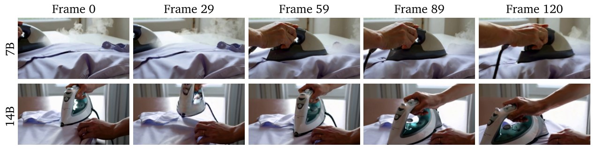
プロンプト：両手がスチームアイロンの持ち手をしっかりと握り、しわのよったシャツの上を巧みに滑らせている。アイロンを動かすたびに柔らかな蒸気の雲が立ちのぼり、生地をなめらかにのばしてしわを消し、ぱりっとした仕上がりを現していく。アイロンは精密かつ丁寧に動き、ひと動きごとにシャツを整えていく。洗いたてのリネンのほのかな香りが空気に満ち、穏やかな雰囲気を添えている。近くの窓から柔らかな光が差し込み、なめらかになったばかりの生地の質感を照らし出し、この入念な作業が進むなかで静謐な空気を生み出している。
図12：Cosmos-Predict1-7B-Text2world と Cosmos-Predict1-14B-Text2world による生成動画。どちらの Text2World モデルも、視覚品質、動きのダイナミクス、テキストとの整合性の高い動画を生成する。特に、7B モデルと比べて 14B モデルは、より細かな視覚的詳細と、より複雑な動きのパターンを捉える能力が高いことを示している。完全な動画やさらに多くの動画例は、我々のウェブサイトを参照されたい。
図中ラベル：Frame＝フレーム
大規模言語モデルとの比較。通常はより短いコンテキスト長で事前学習される LLM とは異なり、長いコンテキストの設定では、自己注意の二次的なコストにより FLOPs が大幅に増加する。LLM の FLOPs は一般に \( 6\times \) seq_len \( \times P \)（\( P \) はパラメータ数）として計算される（Kaplan et al., 2020）が、この式は我々の拡散 WFM には不正確であることに注意されたい。各主要演算の順伝播の FLOPs を表 13 に示す。
5.1.5 プロンプトアップサンプラ
訓練中、我々の WFM は高品質な動画を生成するために、詳細な動画説明文を入力テキストプロンプトとして用いる。しかし推論時には、ユーザのプロンプトは長さ、構造、スタイルがさまざまであり、多くの場合はるかに短い。訓練時と推論時のテキストプロンプトのこのギャップを埋めるために、元の入力プロンプトをより詳細で豊かなものに変換するプロンプトアップサンプラを開発する。これは、より多くの詳細を加え、一貫した記述構造を保つことでプロンプトを改善でき、より高品質な出力につながる。
プロンプトアップサンプラに対する主な要件は次のとおりである。
- 入力プロンプトへの忠実性：アップサンプリングされたプロンプトは、主要な登場者、行動や動き、主要な属性、全体的な意図など、元のユーザ入力の重要な要素を忠実に保持しなければならない。
- 訓練分布との整合：アップサンプリングされたプロンプトは、長さ、言語構造、スタイルの点で WFM の訓練プロンプトの分布によく似ているべきである。
- 視覚的詳細の強化：アップサンプリングされたプロンプトは、WFM がより正確な画像を生成するよう促すように設計されるべきである。
Text2World モデル向けのプロンプトアップサンプラ。プロンプトアップサンプラを構築するために、Mistral-NeMo-12B-Instruct（Mistral and NVIDIA, 2024）をファインチューニングする。ペアデータ、すなわちユーザ入力を模した短いプロンプトと、訓練プロンプトの分布を反映した対応する長いプロンプトを得るために、VLM を用いて、訓練用の長いプロンプトと対応する動画に基づいて短いキャプションを生成する。この「長いものから短いものへ」のデータ作成戦略は、（1）WFM の詳細な訓練プロンプトから本来の動画内容と分布を保持すること、および（2）短いプロンプトと長いプロンプトの間の忠実性を確保することに効果的である。得られたプロンプトアップサンプラを Cosmos-UpsamplePrompt1-12B-Text2World と呼ぶ。
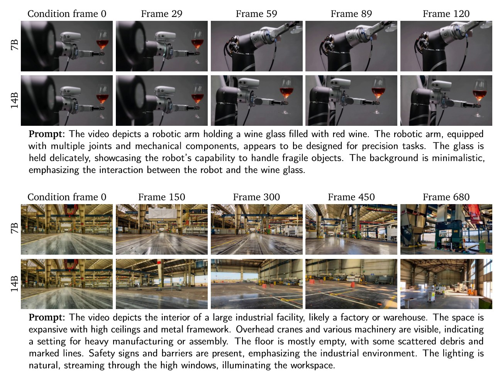
図13：Cosmos-Predict1-7B-Video2world と Cosmos-Predict1-14B-Video2world による生成動画。上の 2 行は、最初の 9 フレームを条件としてモデルが生成した 5 秒間の動画を示す。下の 2 行は長尺動画の生成結果を示す。長尺動画は自己回帰的に生成しており、最初に生成する動画は 1 枚の入力画像を条件とし、続く 5 本の動画はそれぞれ直前の 9 フレームを条件とする。7B モデルと 14B モデルはいずれも視覚的忠実度の高いフォトリアリスティックな動画を生成する。14B モデルはより複雑なシーンを生成する能力を示し、優れた動きの安定性を示す。完全な動画とその他の動画例については、我々のウェブサイトを参照されたい。
図中ラベル：Condition frame 0＝条件フレーム 0、Frame N＝フレーム N。上段のプロンプト：「この動画は、赤ワインで満たされたワイングラスを持つロボットアームを描いている。複数の関節と機械部品を備えたロボットアームは、精密作業向けに設計されているように見える。グラスは繊細に保持されており、壊れやすい物体を扱うロボットの能力を示している。背景はミニマリスティックで、ロボットとワイングラスの相互作用を際立たせている。」下段のプロンプト：「この動画は、工場または倉庫と思われる大規模な産業施設の内部を描いている。空間は広大で、高い天井と金属製の骨組みがある。天井クレーンやさまざまな機械が見え、重工業の製造または組立の現場であることを示している。床はほとんど空いており、ところどころに散らばったがれきと区画線がある。安全標識とバリアが設置されており、産業環境であることを強調している。照明は自然光で、高窓から差し込み作業空間を照らしている。」
Video2World モデル向けプロンプトアップサンプラ。Video2World モデルでは、入力は動画条件とユーザのテキストプロンプトからなる。ユーザプロンプトを強化するために、オープンソースの VLM である Pixtral-12B（Agrawal et al., 2024）をゼロショットのプロンプトエンジニアリングと組み合わせて用い、動画条件とユーザプロンプトの両方を考慮した詳細な記述へとプロンプトをアップサンプリングする。素の Pixtral-12B モデルがそのままで良好に機能することがわかったため、上述のような同様のファインチューニングは行わなかった。
5.1.6 結果
図12 に、我々の Cosmos-Predict1-7B-Text2World モデルと Cosmos-Predict1-14B-Text2World モデルによって生成された定性的結果を示す。両モデルとも、視覚的品質、動きのダイナミクス、テキストとの整合性の高い動画を生成する。7B モデルと比べて、14B モデルはより複雑な視覚的ディテールと入り組んだ動きを捉えた動画を生成できる。
Video2World の 7B モデルと 14B モデルによる生成動画を図13 に示す。Video2World モデルは画像条件付けと動画条件付けの両方をサポートし、自己回帰的に延長された動画を生成できる。図13 に示すとおり、我々の Video2World モデルは良好な動きのダイナミクスと視覚的忠実度を備えたフォトリアリスティックな動画を生成する。ここでも 14B モデルは、シーンの豊かさと動きの安定性の点でより優れた動画を生成する。
5.2 自己回帰ベースの世界基盤モデル
自己回帰 WFM では、世界シミュレーションの生成を言語モデリングと同様の次トークン予測タスクとして定式化する。まず、4 章で紹介した Cosmos 離散トークナイザを用いて、動画を離散動画トークンの系列 \( \mathcal{V} = \{v_1, v_2, \ldots, v_n\} \) に変換する。次に、大規模言語モデル（LLM）（Brown et al., 2020; Dubey et al., 2024; Jiang et al., 2023）と同様に、過去の動画トークンを文脈として次の動画トークンを予測するよう Transformer デコーダ（Vaswani et al., 2017）を学習する。具体的には、学習の目的は次の負の対数尤度（NLL）損失を最小化することである：
\[ \mathcal{L}_{NLL} = \sum_i - \log P(v_i | v_1, v_2, \ldots, v_{i-1}; \Theta), \tag{9} \]
ここで、予測される次の動画トークン \( v_i \) の条件付き確率 \( P \) は、パラメータ \( \Theta \) を持つ Transformer デコーダによってモデル化される。
5.2.1 アーキテクチャ
我々の自己回帰ベース WFM のアーキテクチャを図14 に示す。動画生成タスクに合わせて、標準的な Transformer モデルのアーキテクチャにいくつかの変更を加えている。具体的には、1) 3D を考慮した位置埋め込み、2) より良い制御のためにテキスト入力を可能にするクロスアテンション、3) QK 正規化（QK-Normalization）（Wortsman et al., 2023）を追加する。
3D 位置埋め込み。拡散ベース WFM（5.1.2 節）と同様に、2 つの相補的な位置埋め込み機構を組み込む。相対位置のための 3D 分解型回転位置埋め込み（RoPE）と、絶対座標のための 3D 分解型絶対位置埋め込み（APE）である。これらの機構は協調して働き、ネットワーク全体にわたって包括的な空間的・時間的情報を提供する。
- 3D 回転位置埋め込み（RoPE）。時間・高さ・幅の各次元にわたる相対位置情報を符号化するため、モデルに 3D RoPE を適用する。学習中は、学習の進行とともに動画の系列長が増加する多段階学習戦略を採用する。変化する時間長に 3D RoPE を適応させるため、RoPE のコンテキストウィンドウを拡張するために設計された計算効率の高い手法である YaRN（Peng et al., 2023）を用いる。動画の系列長は時間次元方向にのみ増加するため、YaRN による拡張は時間軸方向にのみ適用する。YaRN を利用することで、我々のモデルは学習の初期段階で遭遇したものより長いコンテキスト長へ外挿できる。
- 3D 絶対位置埋め込み（APE）。3D RoPE に加えて、相対位置符号化を補完するため、各 Transformer ブロック内に 3D APE を組み込む。この APE は、時間・高さ・幅の各次元に分解された正弦波埋め込みを用いて位置情報を符号化し、モデルが絶対位置を認識できるようにする。埋め込みは各段で入力テンソルに直接加算され、Transformer に与える位置的文脈を豊かにする。絶対位置符号化と相対位置符号化を組み合わせることで、モデル性能が向上し、学習損失が減少し、生成動画におけるモーフィング（形状の崩れ）アーティファクトが最小化されることがわかった。なお、拡散ベース WFM（5.1.2 節）では学習可能な埋め込みを用いるのに対し、自己回帰ベース WFM では APE に正弦波ベースの埋め込みを採用している。
語彙。トークン化は、大規模言語モデル（LLM）において入力テキストを離散トークンの系列に変換する重要なステップである。LLM では、取り得るトークンの語彙は、バイト対符号化（BPE）（Gage, 1994）などのアルゴリズムを用いて大規模なテキストコーパスで学習された LLM のトークナイザ（例えば OpenAI（2022）が導入した tiktoken）によって決まる。
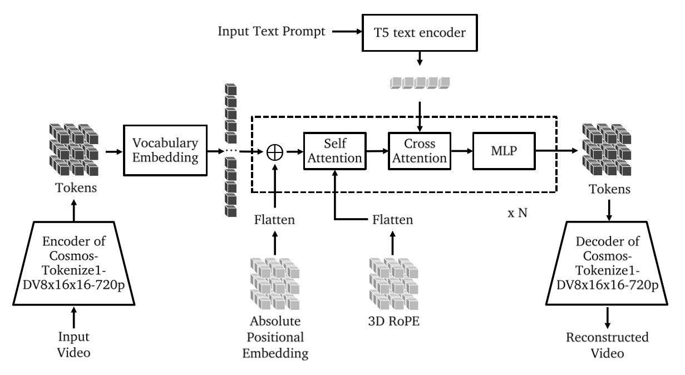
図14：Cosmos-Predict1-Video2World モデルのアーキテクチャ。パイプラインはまず、Cosmos-Tokenize1-DV8×16×16-720p のエンコーダによって入力動画を符号化して離散トークンを生成し、それらを学習済み埋め込みに変換する。これらの埋め込みは繰り返される Transformer ブロックで処理される。各ブロックは絶対位置埋め込みと 3D RoPE の構成要素を含み、これらは自己注意モジュールに入る前に平坦化される。各ブロックはさらに、（T5 テキストエンコーダで処理された）符号化済みテキストプロンプトを取り込むクロスアテンションモジュールと、それに続く 2 層の MLP を含む。最後に、Cosmos-Tokenize1-DV8×16×16-720p のデコーダが出力トークンから動画を再構成する。
図中ラベル：Input Text Prompt＝入力テキストプロンプト、T5 text encoder＝T5 テキストエンコーダ、Input Video＝入力動画、Encoder of Cosmos-Tokenize1-DV8x16x16-720p＝Cosmos-Tokenize1-DV8x16x16-720p のエンコーダ、Tokens＝トークン、Vocabulary Embedding＝語彙埋め込み、Self Attention＝自己注意、Cross Attention＝クロスアテンション、Flatten＝平坦化、Absolute Positional Embedding＝絶対位置埋め込み、x N＝N 回繰り返し、Decoder of Cosmos-Tokenize1-DV8x16x16-720p＝Cosmos-Tokenize1-DV8x16x16-720p のデコーダ、Reconstructed Video＝再構成動画
我々の自己回帰モデルでは、トークナイザとして Cosmos-Tokenize1-DV8×16×16-720p を用いる。4 章で紹介したとおり、有限スカラー量子化（FSQ）（Mentzer et al., 2023）を利用して、6 次元の潜在空間を \( (8, 8, 8, 5, 5, 5) \) 段階に量子化する。この量子化により、語彙サイズは \( 8 \times 8 \times 8 \times 5 \times 5 \times 5 = 64{,}000 \) となる。
テキスト条件付けのためのクロスアテンション。Transformer アーキテクチャに存在する自己注意ブロックに加えて、モデルが入力テキストを条件とできるようにクロスアテンション層を追加する。拡散ベース WFM（5.1.2 節）と同様に、クロスアテンションは Transformer モデルの特徴と、事前学習済みテキストエンコーダ（T5-XXL）から得られるテキスト埋め込みとの間に適用される。我々の実験では、すべての自己注意層の後にクロスアテンションブロックを追加する。
クエリ・キー正規化。学習の安定性を高めるため、クエリ・キー正規化（QKNorm）（Wortsman et al., 2023）を組み込む。QKNorm は、クエリ（\( Q \)）ベクトルとキー（\( K \)）ベクトルの内積を計算する前にそれらを正規化することで注意機構の不安定性に対処し、softmax 関数の飽和を防いでより効果的な学習を保証する。正規化の後、内積は固定値 \( 1/\sqrt{d_k} \) の代わりに学習可能なパラメータ \( \gamma \) によってスケーリングされる。この学習可能なスケーリング係数により、モデルは注意スコアの大きさを適応的に制御でき、柔軟性と表現力が高まる。
Z 損失。学習の安定性をさらに向上させるため、z 損失（z-loss）（de Brébisson and Vincent, 2016）として知られる安定化項を学習目的に導入する。z 損失はロジットのゼロからの逸脱にペナルティを課し、数値的不安定性や勾配爆発を引き起こしうる過度に大きなロジット値をモデルが生成することを効果的に抑制する。z 損失はロジットの二乗和として \( \mathcal{L}_{\text{z-loss}} = \lambda \cdot \sum_i z_i^2 \) と定義される。z 損失は、特に学習を多数の GPU ノードへスケールする際に、勾配ノルムを健全な範囲に保つうえで決定的に重要であることがわかった。経験的に、z 損失係数 \( \lambda = 3 \times 10^{-4} \) が最適なバランスをとり、モデル性能に悪影響を与えることなく学習を効果的に安定化させることがわかった。
5.2.2 スケールアップ
本節では、我々の自己回帰 WFM の効率的なスケーリングを可能にする手法について述べる。モデルのメモリ消費を簡単に分析し、並列化戦略について論じ、我々の学習設定を他の自己回帰モデルと比較する。
メモリ要件。学習中、GPU メモリは主に次のものによって消費される：
- モデルパラメータ：パラメータあたり 6 バイト。モデルパラメータは BF16 と FP32 の両方で保持する。
- 勾配：パラメータあたり 2 バイト。勾配は BF16 で保持する。
- オプティマイザ状態：パラメータあたり 8 バイト。AdamW（Loshchilov and Hutter, 2019）の 1 次モーメントと 2 次モーメントをいずれも FP32 で保持する。
- 活性化：およそ（2 × number_of_layers × 17 × seq_len × batch_size × d_model）バイト。最先端の自己回帰モデルの活性化メモリの詳細な分析については、Korthikanti et al.（2023）を参照されたい。
例えば、我々の 12B モデル（Cosmos-Predict1-12B）は、パラメータ、勾配、オプティマイザ状態を合わせて約 192 GB のメモリを必要とする。これは NVIDIA H100 GPU 1 基の 80GB HBM3 の容量を超えるため、テンソル並列化（TP）（Shoeybi et al., 2019）とその拡張であるシーケンス並列化（SP）（Korthikanti et al., 2023）を利用して、メモリ要件と計算を複数の GPU に分散させる。
テンソル並列化（TP）。テンソル並列化（TP）（Shoeybi et al., 2019）は、線形層の重みを入力特徴次元または出力特徴次元のいずれかに沿って分割する。どちらを選ぶかは GPU 間通信を最小化するという目標に基づいて決まる。例えば 2 層のフィードフォワードネットワークでは、第 1 層の重みは出力特徴次元に沿って分割され、第 2 層の重みは入力特徴次元に沿って分割される。この配置により、中間活性化を GPU 間の通信なしにローカルで処理できる。最終出力は all-reduce 通信を用いて結合される。TP を用いることで、各 GPU は線形層の重みのうち一部、具体的には 1 / TP_SIZE のみを保持する。ただし、TP のデフォルト実装では、LayerNorm のような演算のために活性化がシーケンス次元に沿って依然として複製されており、冗長性が生じる。
シーケンス並列化（SP）。SP（Korthikanti et al., 2023）は、文脈をシーケンス次元に沿ってさらに分割することでテンソル並列化を拡張する。このアプローチは、自己注意層における LayerNorm や Dropout のように、シーケンスの各要素を独立に処理できる演算子に適用できる。SP を有効にすると、各 GPU は活性化のうち一部、具体的には 1 / TP_SIZE のみを保持する。
他の自己回帰モデルとの比較。一般的な LLM と比べると、我々のモデルは MQA や GQA のようなメモリ節約型の注意機構の変種を利用していない。それ以外の点では、我々の自己回帰モデルは LLM のアーキテクチャ（Adler et al., 2024; Brown et al., 2020; Dubey et al., 2024; Jiang et al., 2023; Team, 2024; Yang et al., 2024）に意図的に近づけて設計されている。この整合性が柔軟性とスケーラビリティをもたらすからである。モデルサイズとコンテキスト長をさらにスケールアップするために、コンテキスト並列化やパイプライン並列化など、より多くの並列化を活用する実験は今後の課題とする。
5.2.3 学習戦略
我々は自己回帰 WFM の事前学習を複数の段階で行う。
- 段階 1：第 1 段階では、動画予測の目的でモデルを学習する。最初のフレームを入力条件として与え、将来の動画フレームを予測するようモデルを学習する。このタスクには 17 フレームのコンテキスト長を用いる。すなわち、モデルは最初のフレームを入力として将来の 16 フレームを予測する。
- 段階 1.1：この段階では動画予測を行うが、コンテキスト長を 34 フレームに増やす。RoPE のコンテキスト長を増やすため、時間次元に YaRN 拡張を用いる。
- 段階 2：学習の第 2 段階では、モデルにテキスト条件付けを導入する。テキスト埋め込みは、新たに初期化したクロスアテンション層を用いて取り込まれる。モデルは 34 フレームのコンテキストで学習される。テキストから動画への生成能力を向上させるため、5.1.3 節で述べたように画像と動画の結合データを用いてモデルを学習する。画像のバッチを用いる場合は、画像のコンテキスト長が動画のそれよりはるかに短いため、より大きなバッチサイズを用いる。
我々のモデルはすべて、\( 640 \times 1024 \) の固定空間解像度で学習される。
クールダウン。事前学習の後、LLM の学習慣行（Dubey et al., 2024）と同様に、高品質データを用いた「クールダウン」フェーズを実施する。このフェーズでは、高品質な画像・動画ペアで学習しながら、学習率を 0 まで線形に減衰させる。クールダウンフェーズは 30,000 イテレーションにわたって実施される。
| 構成 | 4B | 5B-Video2World | 12B | 13B-Video2World |
|---|---|---|---|---|
| 層数 | 16 | 16 | 40 | 40 |
| モデル次元 | 4,096 | 4,096 | 5,120 | 5,120 |
| クロスアテンション層 | ✗ | ✓ | ✗ | ✓ |
| 基本学習率 | \( 1 \times 10^{-3} \) | \( 3 \times 10^{-4} \) | \( 1 \times 10^{-3} \) | \( 5 \times 10^{-4} \) |
| 重み減衰 | 0.01 | |||
| 学習率ウォームアップ | 5,000 イテレーションの線形スケジューラ | |||
| 活性化関数 | SwiGLU | |||
| FFN 隠れ次元 | 14,336 | |||
| 注意ヘッド数 | 32 | |||
| キー／バリューヘッド数 | 8 | |||
| トークン数 | 12,800 | |||
| 語彙サイズ | 64,000 | |||
| 位置埋め込み | 3D RoPE（\( \theta = 500{,}000 \)）+ 3D APE | |||
表14：Cosmos-Predict1 モデルの構成の詳細。
我々は自己回帰ベース WFM を 2 系統学習する。まず 2 つのベースモデルを構築する。1 つは 4B の容量、もう 1 つは 12B の容量を持つ。これらはテキストプロンプトを入力としない純粋な次動画トークン予測器である。次に、各ベースモデルから Video2World 版を派生させる。そこではクロスアテンション層を追加し、次動画トークン予測にテキストプロンプト入力を活用する。
- Cosmos-Predict1-4B：次動画トークン予測のための 4B Transformer モデル。このモデルは多段階学習目的のうち段階 1 と段階 1.1 を用いて学習される。
- Cosmos-Predict1-5B-Video2World：Cosmos-Predict1-4B から派生し、多段階学習目的の段階 2 で追加学習された 5B Transformer モデル。
- Cosmos-Predict1-12B：次動画トークン予測のための 12B Transformer モデル。このモデルは多段階学習目的のうち段階 1 と段階 1.1 を用いて学習される。
- Cosmos-Predict1-13B-Video2World：Cosmos-Predict1-12B から派生し、多段階学習目的の段階 2 で追加学習された 13B Transformer モデル。
5.2.4 リアルタイム生成に向けた推論最適化
我々の Cosmos 自己回帰 WFM は LLM とアーキテクチャ上の類似性を共有しているため、確立された LLM 推論最適化手法を活用して逐次デコードのボトルネックに対処できる。PyTorch（Paszke et al., 2019）による gpt-fast3 の実装に倣い、キー・バリューキャッシュ、テンソル並列化、torch.compile を組み合わせて実装する。
投機的デコード。自己回帰 WFM をさらに高速化するため、Medusa 投機的デコードフレームワーク（Cai et al., 2024）を適用する。別個のドラフトモデルを必要とする一般的な投機的デコード手法（Leviathan et al., 2023）や、高速化が限定的な学習不要の手法（Teng et al., 2024）とは異なり、Medusa は Transformer バックボーンに追加のデコードヘッドを付け加えて、後続する複数のトークンを並列に予測する。そのうえで、これらの投機的に予測されたトークンを棄却サンプリングによって検証する。これにより、1 トークンずつ処理するというボトルネックが緩和され、推論が高速化される。我々は、生成出力の品質を損なうことなく視覚的自己回帰を高速化する Medusa 手法の可能性を示す。
我々の実装では、Medusa ヘッドをアーキテクチャに導入して、事前学習済みの自己回帰 WFM をファインチューニングする。これらのヘッドは最後の Transformer 隠れ状態の後に戦略的に挿入され、バックボーンのすべてのパラメータと最終のアンエンベディング層は異なるヘッド間で共有される。各 Medusa ヘッドは、SiLU 活性化と残差接続を備えた単層の FFN である。さらに、トークン予測時の並列性を最大化するため、複数の Medusa ヘッドの重み行列を 1 つの統合された FFN にまとめる。なお、Cai et al.（2024）の木構造ベースの注意機構は用いていない。
我々の自己回帰 WFM に最適な Medusa の設定を調べるため、(1) どの Transformer 層をファインチューニングするか、(2) Medusa ヘッドをいくつ追加するか、の 2 つの側面から詳細な調査を行う。第 1 の問題については、全体のファインチューニングと選択的な層の凍結とを比較する。Medusa ヘッドのみをファインチューニングすると複数トークン予測の性能が低く、全体をファインチューニングすると品質の劣化を招くことが観察された。経験的に、バックボーンを凍結したまま最後の 2 つの Transformer 層と最終のアンエンベディング層の凍結を解除すると最良の性能が得られることを確認した。この戦略により、我々の Medusa 学習は破滅的忘却に陥ることなく、十分な投機的デコード精度を達成する。
| モデル | Medusa ヘッド数 | 0 | 3 | 6 | 9 | 12 |
|---|---|---|---|---|---|---|
| 4B | トークンスループット（tokens/s） | 444.95 | 663.51 | 829.59 | 894.67 | 890.64 |
| フォワードパス回数 | 7680 | 2860 | 2073 | 1812 | 1682 | |
| 5B | トークンスループット（tokens/s） | 303.61 | 659.94 | 758.58 | 982.77 | 978.80 |
| フォワードパス回数 | 10240 | 2857 | 2382 | 1799 | 1673 |
表15：Medusa ヘッド数が平均トークンスループットとフォワードパス回数に与える影響。実験は 8 × H100 GPU 上で、\( 640 \times 1024 \) 解像度の未見のテスト動画 50 本を用いて行った。
Medusa ヘッドの最適な数を探るため、異なる数の Medusa ヘッドを用いた場合のモデルのトークンスループットとフォワードパス回数を計算する。アブレーション研究は 8 × H100 GPU 上で実施し、\( 640 \times 1024 \) 解像度の未見のテスト動画 50 本で評価した。表15 の結果は、我々の Medusa フレームワークが推論を効果的に高速化できることを示唆しており、4B モデルでは最大 \( 2.0\times \) のトークンスループットと \( 4.6\times \) 少ないフォワードパス、5B モデルでは最大 \( 3.2\times \) のトークンスループットと \( 6.1\times \) 少ないフォワードパスを達成する。Medusa ヘッドを増やすと生成に必要なフォワードパス回数は減らせるものの、全体のトークンスループットが低下しうることを示す。9 個の Medusa ヘッドが計算効率とモデル性能の間で最良のトレードオフをもたらすことがわかった。
表16 に、Medusa を統合した自己回帰 WFM の性能分析を示す。この分析は H100 GPU 上で行い、BF16 精度で \( 640 \times 1024 \) 解像度のテスト動画を用いて評価した。結果は、Medusa の実装が異なる GPU 構成の下で 4B と 5B の両モデルの推論を一貫して高速化することを示している。
リアルタイム推論のための低解像度適応。モデルをより低い空間解像度 \( 320 \times 512 \) に適応させることでリアルタイム推論を目指す。これにより動画あたりのトークン数が少なくなる。具体的には、まず離散動画トークナイザ（4 章の Cosmos-Tokenize1-DV8×16×16-720p）を、対象とするフィジカル AI ドメインの動画を用いて 320p の低解像度動画でファインチューニングする。次に、\( 640 \times 1024 \) 解像度で事前学習された自己回帰 WFM（5.2.3 節の Cosmos-Predict1-4B）を、この低解像度トークナイザを用いて、対象のフィジカル AI ドメインの \( 320 \times 512 \) 解像度の動画でファインチューニングする。最後に、ファインチューニングした低解像度自己回帰 WFM に Medusa ヘッドを追加する。
推論のベンチマークは、8 × H100 GPU 上で torch.compile の「max-autotune」モードを BF16 精度で用いて実施し、対象のフィジカル AI ドメインの 10 FPS の入力動画で評価した。表17 に、この設定で達成された平均トークンスループットとフレーム生成速度を報告する。我々のモデルは 10 フレームの動画を 1 秒未満で生成できることが観察され、10 FPS でのリアルタイム動画生成を達成できることが示された。
| モデル | GPU | No DD (s) | No DD+Medusa (s) | With DD (s) | With DD+Medusa (s) | VRAM (GB) |
|---|---|---|---|---|---|---|
| 4B | 1 | 31.04 | 23.52 | 61.49 | 53.08 | 29 |
| 4 | 18.20 | 13.87 | 29.60 | 25.63 | 31 | |
| 8 | 17.62 | 9.91 | 30.30 | 22.83 | 34 | |
| 5B | 1 | 39.68 | 24.97 | 70.39 | 54.72 | 59 |
| 4 | 25.59 | 20.96 | 37.29 | 33.35 | 51 | |
| 8 | 25.70 | 11.67 | 38.41 | 24.35 | 49 | |
| 12B | 1 | 84.78 | — | 116.66 | — | 45 |
| 4 | 47.49 | — | 60.27 | — | 36 | |
| 8 | 45.69 | — | 58.81 | — | 37 | |
| 13B | 1 | 109.18 | — | 140.24 | — | 77 |
| 4 | 67.80 | — | 80.76 | — | 55 | |
| 8 | 67.22 | — | 80.93 | — | 55 |
表16：\( 640 \times 1024 \) 解像度のテスト動画における Cosmos 自己回帰モデルの性能分析。この表は、さまざまな Cosmos 自己回帰 WFM の異なる設定下での平均推論時間（秒）と VRAM 使用量を報告する。推論時間は、1 枚の条件フレームを入力として 32 フレームを生成する場合のものである。No DD：拡散デコーダなしの時間。No DD+Medusa：拡散デコーダなし、Medusa ヘッドありの時間。With DD：拡散デコーダありの時間。With DD+Medusa：拡散デコーダと Medusa ヘッドありの時間。VRAM：ギガバイト単位のビデオ RAM 使用量。
| モデル（\( 320 \times 512 \)） | トークンスループット（tokens/s） | 動画スループット（frames/s） |
|---|---|---|
| Cosmos-Predict1-4B（Medusa あり） | 806.61 | 10.08 |
表17：低解像度適応を施した Cosmos-Predict1-4B のデコードスループット。8 × H100 80GB GPU 上で、フィジカル AI ドメインの \( 320 \times 512 \) 解像度・10 FPS の動画を用いてベンチマークした。
5.2.5 拡散デコーダ
我々の Cosmos トークナイザは、軽量なエンコーダ・デコーダアーキテクチャを用いて強い圧縮を行い、WFM の学習に用いるトークン数を削減する。強い圧縮の結果として、動画生成においてぼやけや目に見えるアーティファクトが生じることがある。特に自己回帰 WFM の設定では、離散トークン化によって豊かな動画をわずかな整数だけで表現するため、この問題が顕著になる。この制約に対処するため、拡散デコーダの設計（OpenAI, 2024; Ramesh et al., 2022）に頼る。具体的には、5.1 節の Cosmos-Predict1-7B-Text2Video（訳注：5.1 節のモデル名は Cosmos-Predict1-7B-Text2World であり、その誤記と思われる）をファインチューニングすることで、より強力なトークナイザデコーダを構築する。
図15 は、自己回帰 WFM のための拡散デコーダをどのように学習するかを示している。各学習動画に対し、Cosmos-Tokenize1-CV8×8×8-720p と Cosmos-Tokenize1-DV8×16×16-720p を用いて、それぞれ連続トークン動画と対応する離散トークン動画を計算する。Cosmos-Tokenize1-CV8×8×8-720p は、より穏やかな連続トークン化プロセスと、より緩やかな圧縮方式（\( 8 \times 16 \times 16 \) ではなく \( 8 \times 8 \times 8 \)）のおかげで、Cosmos-Tokenize1-DV8×16×16-720p よりも高品質な動画出力を生成できることに留意されたい。
離散トークン動画は、Cosmos-Predict1-7B モデルのデノイザへの条件入力として扱われる。条件入力を計算するために、まず学習可能な語彙埋め込み層に基づいて、離散トークン動画の各離散トークンを 16 次元のベクトルに埋め込む。次に、条件入力が連続トークン動画からデノイザへ入力されるノイズ付き入力と同じサイズになるよう、埋め込みを \( x \) 方向と \( y \) 方向に 2 倍にアップサンプリングする。ノイズ付きの連続入力と条件入力をチャネル次元に沿って連結し、これを拡散デノイザへの入力とする。デノイザの第 1 層は、新しい入力形状に対応するためにチャネル次元が拡張される。更新された Cosmos-Predict1-7B を、加えられたノイズを除去するようにファインチューニングする。離散トークン動画はノイズで劣化していないため、デノイザはノイズ除去のために条件入力に残っている情報を活用することを学習する。その結果、逆拡散問題（訳注：原文は "reserve diffusion problem" だが "reverse" の誤植と解した）を解くことで離散トークンをデコードする、トークナイザ用のより高品質なデコーダが得られる。
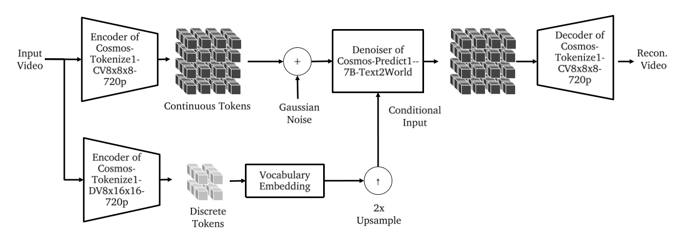
図15：Cosmos 拡散デコーダの学習。学習中、各入力動画は 2 回トークン化される。1 回は対象とする離散トークナイザ（DV8×16×16）によって、もう 1 回はより制約の緩い連続トークナイザ（CV8×8×8）によってである。離散トークン動画は拡散デノイザへの条件入力として用いられる。
図中ラベル：Input Video＝入力動画、Encoder of …＝… のエンコーダ、Continuous Tokens＝連続トークン、Gaussian Noise＝ガウスノイズ、Denoiser of Cosmos-Predict1-7B-Text2World＝Cosmos-Predict1-7B-Text2World のデノイザ、Conditional Input＝条件入力、Decoder of …＝… のデコーダ、Recon. Video＝再構成動画、Discrete Tokens＝離散トークン、Vocabulary Embedding＝語彙埋め込み、2x Upsample＝2 倍アップサンプリング
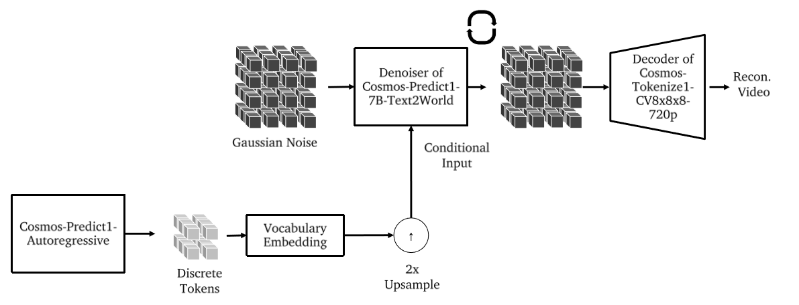
図16：Cosmos 拡散デコーダの推論。推論時には、Cosmos-Predict1 モデルからの出力動画トークンがデノイザに条件として入力される。
図中ラベル：Cosmos-Predict1-Autoregressive＝Cosmos-Predict1 自己回帰モデル、Discrete Tokens＝離散トークン、Vocabulary Embedding＝語彙埋め込み、2x Upsample＝2 倍アップサンプリング、Gaussian Noise＝ガウスノイズ、Conditional Input＝条件入力、Denoiser of …＝… のデノイザ、Decoder of …＝… のデコーダ、Recon. Video＝再構成動画
図16 は推論を示している。自己回帰 WFM からの出力離散トークン動画（\( 8 \times 16 \times 16 \) の離散圧縮下）は、2 つのステップを経て動画にデコードされる。まず、自己回帰 WFM の出力に基づいて条件付きデノイザを展開（ロールアウト）し、連続トークン動画（\( 8 \times 8 \times 8 \) の連続圧縮下）を生成する。次に、連続トークン動画を Cosmos-Tokenize1-CV8×8×8-720p でデコードし、最終的な RGB 動画を得る。
5.2.6 結果
図17 に、異なるモデルサイズを用いた自己回帰 WFM の定性的結果を示す。プロンプトなしの設定で Cosmos-Predict1-4B と Cosmos-Predict1-12B を比較すると、12B モデルの方がより良い動きとより鮮明なディテールを持つ動画を生成することが観察される。同様に、プロンプトありの設定で Cosmos-Predict1-5B-Video2World と Cosmos-Predict1-13B-Video2World を比較すると、13B モデルの方が 5B モデルより良い動きを得ることがわかる。
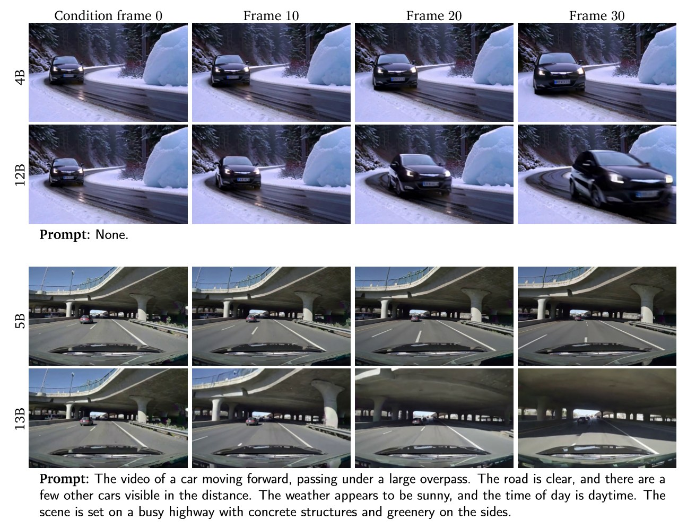
図17：Cosmos 自己回帰世界基盤モデルによる生成動画。上の 2 行は 4B モデルと 12B モデルによる動画生成結果であり、下の 2 行はテキストプロンプトを用いた Video2World の結果である。プロンプトあり・なしのいずれの設定でも、12B モデルと 13B モデルは 4B モデルと 5B モデルより鮮明な動画とより良い動きを示すことが観察される。完全な動画とその他の動画例については、我々のウェブサイトを参照されたい。
図中ラベル：Condition frame 0＝条件フレーム 0、Frame N＝フレーム N。上段のプロンプト：なし。下段のプロンプト：「大きな高架橋の下を通過しながら前進する車の動画。道路は空いており、遠くに他の車が数台見える。天気は晴れのようで、時間帯は日中である。シーンはコンクリート構造物と両脇の緑に囲まれた交通量の多い幹線道路である。」
図18 に、拡散デコーダを用いた場合に得られる改善を示す。自己回帰モデルの出力は、主に離散トークナイザにおける非可逆圧縮のためにぼやけている。拡散デコーダを用いることで、内容を保ったままディテールを強化できる。
経験的に、自己回帰ベースの Text2World WFM の出力は、5.1.5 節で述べたプロンプトアップサンプラによるアップサンプリング済みプロンプトを用いても改善しないことがわかった。これは、これらの WFM が学習の大部分を純粋な動画生成タスクで事前学習されているためである可能性があると我々は仮説を立てている。テキスト入力を活用するよう十分に強く強制されていないのである。
5.2.7 限界
我々の自己回帰 WFM の生成動画で観察された注目すべき失敗例の 1 つは、物体が予期せず下方から現れることである。図19 にこの問題の例を示す。モデルの失敗率を把握するため、自己回帰 WFM への 100 件のフィジカル AI 入力からなる評価セットを作成して系統的な調査を行う。すべてのモデルで、画像（単一フレーム）条件付けと動画（9 フレーム）条件付けの 2 つの入力モードを用いて動画を生成する。生成したすべての動画について、失敗例を人手で検査し、失敗率を表18 に報告する。小さいモデルである Cosmos-Predict1-4B と Cosmos-Predict1-5B-Video2World は単一フレーム条件付けで高い破綻率を示す一方、大きいモデルである Cosmos-Predict1-12B と Cosmos-Predict1-13B-Video2World はより頑健であることが観察される。9 フレームの動画条件付けによる生成は全モデルで安定しており、失敗率は 2% 未満である。
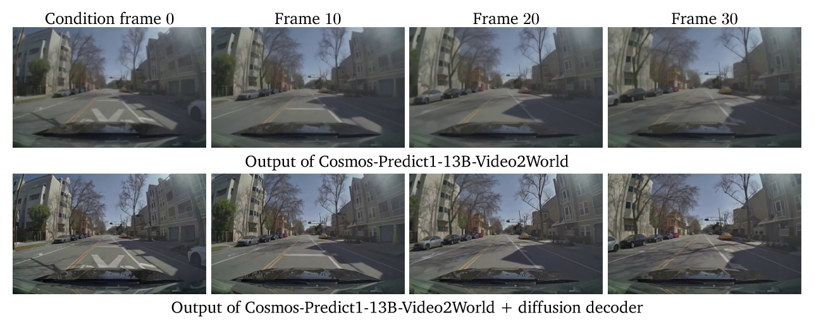
図18：拡散デコーダの比較。上段には Cosmos-Predict1-13B-Video2World モデルによる動画生成結果を示す。下段には、自己回帰モデルの出力を拡散デコーダに通した後の強化された動画を示す。自己回帰モデル単体ではぼやけた結果になる一方、拡散デコーダは内容を保ったまま動画の鮮明さを高められることが観察される。
図中ラベル：Condition frame 0＝条件フレーム 0、Frame N＝フレーム N、Output of Cosmos-Predict1-13B-Video2World＝Cosmos-Predict1-13B-Video2World の出力、Output of Cosmos-Predict1-13B-Video2World + diffusion decoder＝Cosmos-Predict1-13B-Video2World ＋拡散デコーダの出力
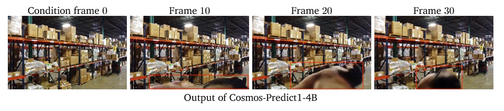
図19：Cosmos 自己回帰 WFM の失敗例。生成動画において、一部の物体（赤枠で表示）が予期せず下方から現れる失敗例が観察される。（訳注：原文の見出しは "Autogressive" だが "Autoregressive" の誤植と解した）
図中ラベル：Condition frame 0＝条件フレーム 0、Frame N＝フレーム N、Output of Cosmos-Predict1-4B＝Cosmos-Predict1-4B の出力
5.3 評価
事前学習済み WFM は、視覚的世界シミュレーションのジェネラリストである。その能力は複数の側面から測定されるべきである。ここでは 2 つの側面からモデルを評価する。第 1 に、生成動画の 3D 一貫性を評価する。理想的な WFM は、幾何学的に妥当な 3D 世界から動画シミュレーションを生成するべきである。第 2 に、生成動画の物理整合性（physics alignment）を評価する。レンダリングされたダイナミクスが物理法則にどの程度従っているかを算出する。WFM の評価は非常に自明でないタスクである。評価に必要な重要な側面は他にもいくつかあることを我々は認識している。より包括的な評価は今後の課題とする。
5.3.1 3D 一貫性
WFM は動画生成を通じて 3D 世界をシミュレートするよう設計されており、生成動画が視覚的世界の 3D 構造とどの程度一貫しているかを評価することは不可欠である。生成動画は、写実的に見えることに加えて、時間を通じてシーンの物理的原理との一貫性を保つべきであり、これは下流のフィジカル AI アプリケーションにとって重要な要件である。
| モデル | 画像条件付け | 動画条件付け（9 フレーム） |
|---|---|---|
| Cosmos-Predict1-4B | 15% | 1% |
| Cosmos-Predict1-5B-Video2World | 7% | 2% |
| Cosmos-Predict1-12B | 2% | 1% |
| Cosmos-Predict1-13B-Video2World | 3% | 0% |
表18：Cosmos 自己回帰モデルの失敗率分析。
テストデータとベースラインモデル。多視点幾何に基づく既存のツールで動画の 3D 一貫性を効果的に測定するため、静的シーンのシナリオに焦点を当てる。RealEstate10K データセット（Zhou et al., 2018）のテストセットから無作為に選んだ 500 本の動画からなるデータセットを整備する。さらに、独自の VLM を用いて動画にキャプションを付け、動画を静的シーンとして記述するテキストプロンプトを得る。これにより、指標の計算においてシーンの動きを考慮する必要がなくなる。ベースライン手法として VideoLDM（Blattmann et al., 2023）と比較する。
指標。生成動画は、実質的には背後にある 3D 視覚世界の 2D 投影である。生成動画の 3D 一貫性を測定するため、次の指標を設計する。
- 幾何学的一貫性。生成動画においてエピポーラ幾何の制約がどの程度満たされているかを定量化することで、生成された世界の 3D 一貫性を評価する。これには Sampson 誤差（Hartley and Zisserman, 2003; Sampson, 1982）と、カメラ姿勢推定アルゴリズム（Schönberger et al., 2016; Schönberger and Frahm, 2016）の成功率が含まれる。
- 視点合成の一貫性。背後にある 3D 構造との一貫性を保ちながら、補間された新規視点における画像を合成する世界基盤モデルの能力を評価する。
Sampson 誤差は、ある特徴点から別の視点における対応するエピポーラ線までの距離の 1 次近似である。あるフレームペアにおける \( N \) 個の点対応（同次座標で表現）\( \{(\bar{\mathbf{x}}_i, \bar{\mathbf{y}}_i)\}_{i=1}^N \) が与えられたとき、Sampson 誤差を次のように定義する。
\[ \epsilon_{\text{samp}} = \frac{1}{N} \sum_{i=1}^{N} \frac{|\bar{\mathbf{y}}_i^\top \mathbf{F} \bar{\mathbf{x}}_i|}{\sqrt{\|\mathbf{S}\mathbf{F}\bar{\mathbf{x}}_i\|_2^2 + \|\mathbf{S}\mathbf{F}^\top \bar{\mathbf{y}}_i\|_2^2}}, \quad \text{where } \mathbf{S} = \begin{bmatrix} 1 & 0 & 0 \\ 0 & 1 & 0 \\ 0 & 0 & 0 \end{bmatrix}, \tag{10} \]
ここで \( \mathbf{F} \) は対応点から推定された基礎行列である。指標をピクセル単位でより直感的にするため、誤差関数の平方根版を用いる。フレームペアからキーポイントの対応を検出・マッチングするために SuperPoint（DeTone et al., 2018）と LightGlue（Lindenberger et al., 2023）を組み合わせて用い、OpenCV の 8 点 RANSAC アルゴリズムを用いて \( \mathbf{F} \) を推定する。平均誤差は、\( 960 \times 540 \) のキャンバスに対するフレームの対角線長で正規化する。
また、生成動画の 3D 一貫性を、新規視点を自己合成する能力によっても評価する。新規視点合成の文献における一般的な慣行（Mildenhall et al., 2020）に従い、8 フレームごとに 1 フレームをテストフレームとして取り置き、残りの学習フレームを用いて Nerfstudio ライブラリ（Tancik et al., 2023）のデフォルト設定で 3D ガウシアンスプラッティングモデル（Kerbl et al., 2023）をフィッティングする。合成されたテスト視点の品質を定量化する指標として、ピーク信号対雑音比（PSNR）、構造的類似度（SSIM）、LPIPS（Zhang et al., 2018）を報告する。
結果。定量的評価の結果を表19 に示す。Cosmos WFM は、幾何学的一貫性と視点合成の一貫性の両面で、ベースラインモデルより大幅に優れた 3D 一貫性を達成する。Cosmos WFM の特徴点はより 3D 一貫的であるだけでなく、カメラ姿勢推定の成功率も顕著に高く、全体的な品質の向上と 3D 一貫性の強化の両方を反映しており、実世界の動画の水準にさえ達している。カメラ姿勢の推定に成功したケースにおいて、合成された取り置き視点はすべての画像合成指標でより高い品質を示す。これらの結果は、3D 一貫性のある動画を生成する我々の Cosmos WFM の能力を際立たせ、それらが効果的な世界シミュレータであることを立証している。
| 手法 | 幾何学的一貫性 | 視点合成の一貫性 | |||
|---|---|---|---|---|---|
| Sampson 誤差 ↓ | 姿勢推定成功率（%）↑ | PSNR ↑ | SSIM ↑ | LPIPS ↓ | |
| VideoLDM（Blattmann et al., 2023） | 0.841 | 4.4% | 26.23 | 0.783 | 0.135 |
| Cosmos-Predict1-7B-Text2World | 0.355 | 62.6% | 33.02 | 0.939 | 0.070 |
| Cosmos-Predict1-7B-Video2World | 0.473 | 68.4% | 30.66 | 0.929 | 0.085 |
| Cosmos-Predict1-4B | 0.433 | 35.6% | 32.56 | 0.933 | 0.090 |
| Cosmos-Predict1-5B-Video2World | 0.392 | 27.0% | 32.18 | 0.931 | 0.090 |
| 実動画（参考） | 0.431 | 56.4% | 35.38 | 0.962 | 0.054 |
表19：Cosmos ベースモデルにおける 3D 一貫性の評価。
5.3.2 物理整合性
理想的な WFM は、物理法則に対する強い理解を示し、それを尊重した将来の観測を生成するべきである。我々の事前学習済み WFM はある程度の物理的理解を示し最先端を前進させているものの、物理法則に従わない例は依然として容易に生成できてしまう。物理的に妥当でない動画を除去するデータキュレーションの追加ステップと、改良されたモデル設計が必要であると我々は考えている。強く物理に整合した WFM は今後の課題とするが、それでも、大規模なデータ駆動型の事前学習から直観的物理がどの程度自然に創発するかを測定することには関心がある。
これを探るため、（Kang et al., 2024）に着想を得て、物理シミュレーションエンジンを用いた統制されたベンチマークデータセットを設計する。物理に基づくシミュレーションを生成し、事前学習済み WFM がニュートン物理学と剛体力学にどの程度従うかをテストする。具体的には、シミュレーションを用いて、対象とする物理法則に特化したテストシナリオの、物理的に正しいフォトリアリスティックな動画を生成する。次に、これらの参照用の「正解」動画を、共通の文脈（過去の観測と摂動）を与えたときに WFM が生成する「予測」動画と比較する。
合成データの生成。PhysX（NVIDIA, 2024）と Isaac Sim（NVIDIA, 2024）を用いて、さまざまな物理的効果を評価することを目的とした 8 つの 3D シナリオを設計する。
- 自由落下する物体：平面上に落下する物体（重力、衝突など）
- 傾斜した平面スロープ：斜面を転がり落ちる物体（重力、慣性モーメントなど）
- U 字型スロープ：U 字型の斜面を転がり落ちる物体（位置エネルギー、運動エネルギーなど）
- 安定した積み重ね：釣り合い状態にある物体の積み重ね（力の釣り合い）
- 不安定な積み重ね：釣り合いを欠いた物体の積み重ね（重力、衝突など）
- ドミノ：順に倒れていく直方体ブロックの列（運動量の伝達、衝突など）
- シーソー：シーソーの両側に置かれた物体（トルク、回転慣性など）
- ジャイロスコープ：平らな面上で回転するコマ（角運動量、歳差運動など）
各シナリオについて、Omniverse のアセット（NVIDIA, 2024）から選択して、動的物体の数と種類（さまざまなサイズ、テクスチャ、形状）および背景の外観をランダム化する。物体の運動学的状態を時間に沿ってシミュレートし、4 つの異なる固定カメラ視点から出力動画をレンダリングする。合計で、長さ 100 フレームの 1080p 動画を 800 本レンダリングする。存在の曖昧さを避けるため、各シミュレーションのロールアウトにおける物体は、最初のフレームからすべて見えるように配置される。
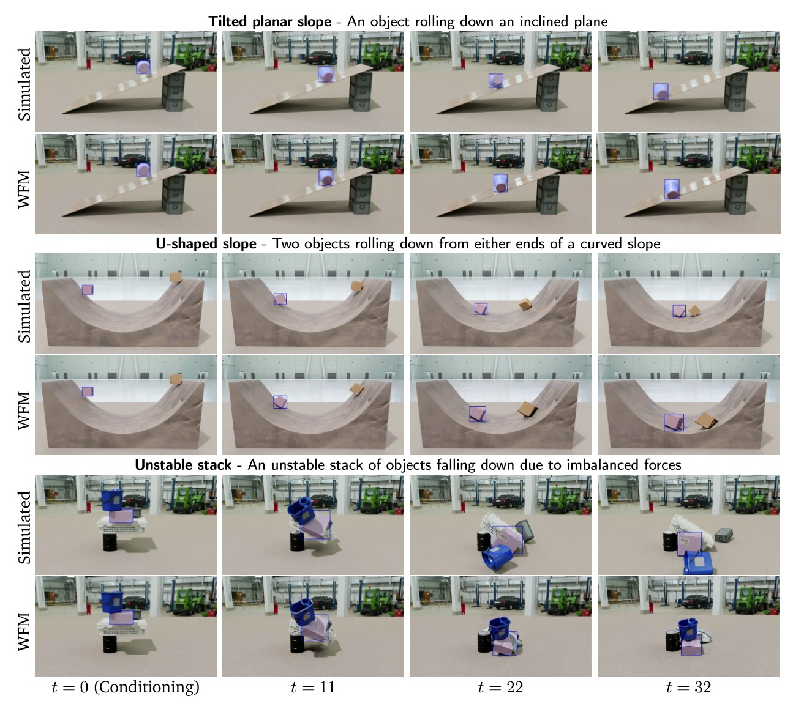
図20：シミュレーションと事前学習済み WFM における物理シナリオのロールアウト。複雑さが増していく 3 つの例示的シナリオについて、参照用の（物理的に正しい）シミュレーション（各グループの 1 行目）と Cosmos-Predict1-7B-Video2World のロールアウト（各グループの 2 行目）から得られた結果を示す。WFM は 9 フレームと、シミュレートされた物体の運動学的状態に焦点を当てたプロンプトを条件とする。各例について、物体レベルの指標（平均 IOU）の計算に用いる追跡対象物体を 1 つ（青いバウンディングボックスとマスク）示す。
図中ラベル：Tilted planar slope - An object rolling down an inclined plane＝傾斜した平面スロープ：傾いた平面を転がり落ちる物体、U-shaped slope - Two objects rolling down from either ends of a curved slope＝U 字型スロープ：曲面スロープの両端から転がり落ちる 2 つの物体、Unstable stack - An unstable stack of objects falling down due to imbalanced forces＝不安定な積み重ね：力の不均衡により崩れ落ちる不安定な物体の積み重ね、Simulated＝シミュレーション、WFM＝WFM、t = 0 (Conditioning)＝t = 0（条件付け）
指標。我々は、シミュレートされた正解動画を WFM が直接生成した出力と比較することで、物理法則への準拠を評価することに関心がある。そこで、将来の観測を生成するために、正解動画の最初の数フレーム（1 フレームまたは 9 フレーム）を WFM の条件とする。該当する場合には、過去の観測においてシミュレートされている物体の運動学的状態に焦点を当てたテキストプロンプト（独自の VLM で条件フレームにキャプションを付けて得たもの）も WFM の条件として追加する。シミュレーションと予測のシナリオの例については図20 を参照されたい。評価には次の指標を用いる。
- ピクセルレベルの指標。ピクセルレベルの比較として、WFM のロールアウトによる予測フレームを正解動画の参照フレームと比較するため、ピーク信号対雑音比（PSNR）と構造的類似度指標（SSIM）を計算する。
- 特徴レベルの指標。やや高次の意味的な比較として、予測フレームと参照フレームの間で、特徴類似度指標である DreamSim 類似度スコア（Fu et al., 2023）を計算する。
- 物体レベルの指標。最後に、我々が最も関心を持つのは注目物体が進行中の物理現象によってどのような影響を受けるかであるため、追跡を用いて、交絡要因（背景の変化、視覚的品質など）を排除した物体レベルの指標を計算する。テスト条件は合成的に生成されているため、シーン内の動的物体の正解インスタンスセグメンテーションマスクを利用できる。SAMURAI（Yang et al., 2024）を用いて、最初のフレームにおける正解インスタンスマスクを残りの予測動画フレームへ伝播させて軌跡を抽出し、物体レベルの指標を定量化できるようにする。各フレームおよび各注目物体について、正解の物体マスクと予測された物体マスクの間の Intersection over Union（IoU）を計算する。
| モデル | 条件 | ピクセルレベル | 特徴レベル | 物体レベル | |
|---|---|---|---|---|---|
| PSNR ↑ | SSIM ↑ | DreamSim ↑ | Avg. IoU ↑ | ||
| Cosmos-Predict1-7B-Video2World | prompt + 1 frame | 17.34 | 0.538 | 0.836 | 0.332 |
| Cosmos-Predict1-7B-Video2World | prompt + 9 frames | 21.06 | 0.691 | 0.859 | 0.592 |
| Cosmos-Predict1-14B-Video2World | prompt + 1 frame | 16.81 | 0.521 | 0.836 | 0.338 |
| Cosmos-Predict1-14B-Video2World | prompt + 9 frames | 20.21 | 0.635 | 0.860 | 0.598 |
| Cosmos-Predict1-4B | 1 frame | 17.91 | 0.486 | 0.827 | 0.394 |
| Cosmos-Predict1-4B | 9 frames | 18.13 | 0.482 | 0.859 | 0.481 |
| Cosmos-Predict1-5B-Video2World | prompt + 1 frame | 17.67 | 0.478 | 0.818 | 0.376 |
| Cosmos-Predict1-5B-Video2World | prompt + 9 frames | 18.29 | 0.481 | 0.864 | 0.481 |
| Cosmos-Predict1-12B | 1 frame | 17.94 | 0.486 | 0.829 | 0.395 |
| Cosmos-Predict1-12B | 9 frames | 18.22 | 0.487 | 0.869 | 0.487 |
| Cosmos-Predict1-13B-Video2World | prompt + 1 frame | 18.00 | 0.486 | 0.830 | 0.397 |
| Cosmos-Predict1-13B-Video2World | prompt + 9 frames | 18.26 | 0.482 | 0.865 | 0.482 |
表20：物理整合性の結果。ピクセルレベル、特徴レベル、物体レベルの指標を用いて、物理シナリオの将来予測の正確さの観点から Cosmos WFM のさまざまな変種を比較する。指標は、Cosmos WFM の自己回帰変種がサポートする最大長である 33 フレームにわたって計算される。（条件列の prompt＝プロンプト、frame(s)＝フレーム）
これらの指標を、動画内のフレーム間、評価セット内の動画間、およびロールアウトの 4 つのランダムシード間で平均する。PSNR と SSIM は、条件付けに用いたフレームを除くすべてのフレームで計算する。
結果。物理整合性に関する定量的結果を表20 にまとめる。定量的・定性的な結果に基づき、次のような所見が得られる。当然ながら、モデルは条件入力としてより多くのフレームを与えられると、物体の運動学全体をより良く予測できる（これにより、速度や加速度のような 1 次・2 次の量をより良く推定できる）。
表からはまた、9 フレーム条件の設定では、拡散 WFM の方が自己回帰 WFM よりピクセルレベルの予測で優れていることもわかる。これは、拡散ベース WFM の方がより高い視覚的品質で動画をレンダリングするという我々の視覚的観察と相関している。また、我々の結果は、より大きなモデルほど物理整合性で優れていることを示唆していない点にも留意する。より大きなモデルほど高い視覚的品質で動画をレンダリングすることは観察されるものの、すべての WFM は等しく物理法則への準拠に苦戦しており、より良いデータキュレーションとモデル設計を必要としている。
より一般的には、上述の剛体シミュレーションはすでに我々の WFM の限界を試すものとなっており、具体的な失敗例を特定するための価値あるツールとして機能することが観察される。それらの失敗例は、物体の非永続性（物体が自然発生的に出現・消失すること）や変形（形状の変化）といった低レベルの問題から、妥当でない運動学や重力の違反などのより複雑な問題にまで及ぶ。このような構造化されたシミュレーションは、物理整合性をテストするための有用な方法論を提供すると我々は考えている。したがって我々は、より複雑なシナリオを取り入れること、（WFM の事前学習データは実動画からなるため）シミュレーションと現実のギャップを埋めるべくフォトリアリズムを高めること、そして物理的理解をより包括的に評価するために評価指標を改良することによって、これらを継続的に改善していく予定である。
6 事後学習済み世界基盤モデル
本章では、我々の Cosmos WFM をファインチューニングして多様なフィジカル AI アプリケーションをサポートする方法を示す。3D でナビゲート可能な視覚世界の生成を実現するためにカメラ制御付きで WFM を事後学習する例、2 種類のロボットマニピュレーションタスクのために 2 つの異なるロボット構成上で行動制御付きで WFM を事後学習する例、そして自律運転エージェントの学習のためにマルチビュー対応で WFM を事後学習する例を含める。
| 節 | モデル | 条件 |
|---|---|---|
| 6.1 節 | Cosmos-Predict1-7B-Video2World-Sample-CameraCond | テキスト + 画像 + カメラ |
| 6.2 節 | Cosmos-Predict1-7B-Video2World-Sample-Instruction | テキスト + 動画 |
| 6.2 節 | Cosmos-Predict1-7B-Video2World-Sample-Instruction | テキスト + 動画 |
| 6.2 節 | Cosmos-Predict1-7B-Video2World-Sample-ActionCond | 行動 + 動画 |
| 6.2 節 | Cosmos-Predict1-7B-Video2World-Sample-ActionCond | 行動 + 動画 |
| 6.3 節 | Cosmos-Predict1-7B-Text2World-Sample-MultiView | テキスト |
| 6.3 節 | Cosmos-Predict1-7B-Text2World-Sample-MultiView-TrajectoryCond | テキスト + 軌跡 |
| 6.3 節 | Cosmos-Predict1-7B-Video2World-Sample-MultiView | テキスト + 動画 |
表21：6 章で論じる事後学習済み WFM の一覧。
表21 は、本章の各節で論じる事後学習済み WFM の一覧である。動作モードを明確にするため、条件入力も併記している。各モデル名に「-Sample」を付けているのは、我々の目的が事前学習済み WFM のサンプルアプリケーションを提供することにあると強調するためである点に留意されたい。これらのモデルは、いかなる実世界アプリケーションにとっても、完成したシステムや製品用モデルでは決してない。開発者は、対象とするアプリケーションのために、自らのフィジカル AI 構成に合わせた独自のデータセットで WFM をファインチューニングする必要がある。
6.1 カメラ制御のための WFM の事後学習
カメラ姿勢による条件付けを通じて Cosmos-Predict1-7B-Video2World にカメラ制御を統合し、効果的な 3D 世界シミュレータとする。こうして得られた事後学習済み WFM を Cosmos-Predict1-7B-Video2World-Sample-CameraCond と呼ぶ。我々は 1 枚の参照入力画像から 3D 世界を生成することに焦点を当て、カメラ制御を活用して、指定されたカメラ軌跡から時間的に一貫し 3D 一貫性のある動画シミュレーションを生成する。そこでは視点の変化がシーンの背後にある 3D 構造と整合する。
6.1.1 データセット
このタスクには、静的シーンの大規模動画データセットである DL3DV-10K（Ling et al., 2024）を用いる。前処理として、すべての動画を 256 フレームのクリップに分割する。クリップ内のすべてのフレームについて密にカメラ姿勢のアノテーションを得るため、分割したクリップに対して GLOMAP（Pan et al., 2025）を用いて Structure-from-Motion を実行する。最初のフレームのカメラ姿勢を恒等変換とし、後続するすべてのフレームの相対カメラ姿勢を計算する。また、独自の VLM を用いて動画にキャプションを付け、動画を静的シーンとして記述するテキストプロンプトを得る。
6.1.2 ファインチューニング
サンプリングされた潜在埋め込みを、潜在埋め込みと同じ空間次元を持つ Plücker 埋め込み（Sitzmann et al., 2021）と連結することで、カメラ制御の条件付けを追加する。具体的には、カメラ姿勢が与えられたとき、Plücker 座標を次のように計算する。
\[ \mathbf{r} = (\mathbf{d}, \mathbf{m}) \in \mathbb{R}^6 \quad \text{where} \;\; \mathbf{m} = \mathbf{c} \times \mathbf{d}\,, \tag{11} \]
ここで \( \mathbf{c} \) はカメラ中心の位置、\( \mathbf{d} \) は各潜在ピクセルの単位光線方向である（潜在埋め込みはダウンサンプリングされた画像として扱う）。すべてのカメラ姿勢は初期フレームに対する相対姿勢である。Cosmos-Predict1-7B-Video2World モデルが用いる Cosmos-Tokenize1-CV8×8×8-720p は時間方向の圧縮率が \( 8\times \) であるため、8 フレームごとに 4 番目のフレームにおける Plücker 埋め込みを、対応する潜在表現と連結する。
学習動画の入力フレームを \( 704 \times 1252 \) にリサイズし、反射パディングによって \( 704 \times 1280 \) にパディングした。学習中は 57 フレームをサンプリングする。学習目的とその他のハイパーパラメータは、ベースの拡散 WFM の学習（5.1.3 節）と同じである。
6.1.3 評価
世界の参照画像が 1 枚与えられていると仮定し、入力画像から将来のロールアウトを動画として生成する。この設定におけるカメラ制御可能な動画生成の最先端モデルである CamCo（Xu et al., 2024）と比較する。公平な比較のため、同じく DL3DV-10K（Ling et al., 2024）の学習セットでファインチューニングされた CamCo モデルを用いる。我々の事後学習済み WFM は 57 フレームを生成するのに対し、CamCo は 14 フレームしか生成できないため、同じ 57 フレームの軌跡について、CamCo では時間方向に \( 4\times \) ダウンサンプリングして比較する。CamCo の動画解像度は \( 256 \times 256 \) に制限されている。評価のため、入力画像とテストフレームはさらに最大限の中央切り出しを行う。
テストデータには、5.3.1 節で前述した RealEstate10K（Zhou et al., 2018）テストセットの同じ 500 サンプルを用いる。初期フレームを参照画像とし、データセットが提供するカメラ軌跡をカメラ制御入力として用いる。カメラ軌跡は、軌跡の両端間の距離が 1 に正規化されるようさらにスケーリングする。
指標。Xu et al.（2024）に従い、事後学習済み世界モデルのカメラ制御性を、動画生成品質と 3D 一貫性の 2 つの側面から評価する。動画品質については、Fréchet Inception Distance（FID）（Heusel et al., 2017）と Fréchet Video Distance（FVD）（Unterthiner et al., 2019）を用いて、それぞれフレームレベルと動画レベルの品質を評価する。指標の計算には、同じテストデータを参照動画として用いる（ただし、ピクセルレベルの比較には用いないことに注意）。
3D 一貫性については、Structure-from-Motion ライブラリ（Pan et al., 2025; Schönberger et al., 2016; Schönberger and Frahm, 2016）がカメラ姿勢を再推定できるかどうかによって評価し、その結果を入力カメラ制御軌跡と比較する。動画内の \( N \) フレームが与えられたとき、カメラ軌跡の誤差を 2 つの項、すなわち平均回転誤差 \( \epsilon_{\text{rot}} \) と並進誤差 \( \epsilon_{\text{trans}} \) に定量化する。それぞれ次のように定義する。
\[ \epsilon_{\text{rot}} = \frac{1}{N} \sum_{i=1}^{N} \cos^{-1}\left( \frac{\mathrm{trace}(\hat{\mathbf{R}}_i^\top \mathbf{R}_i) - 1}{2} \right) \quad \text{and} \quad \epsilon_{\text{trans}} = \frac{1}{N} \sum_{i=1}^{N} \left\| \hat{\mathbf{t}}_i - \mathbf{t}_i \right\|_2\,, \tag{12} \]
ここで \( \mathbf{R}_i \) と \( \mathbf{t}_i \) は \( i \) 番目のフレームの入力回転と並進（正解として扱う）、\( \hat{\mathbf{R}}_i \) と \( \hat{\mathbf{t}}_i \) は再推定された量である。カメラ姿勢推定の結果が相似変換の自由度だけ曖昧であることを考慮し、Lin et al.（2021）に従って、予測されたカメラ軌跡にプロクラステス解析を実行して正解に位置合わせする。
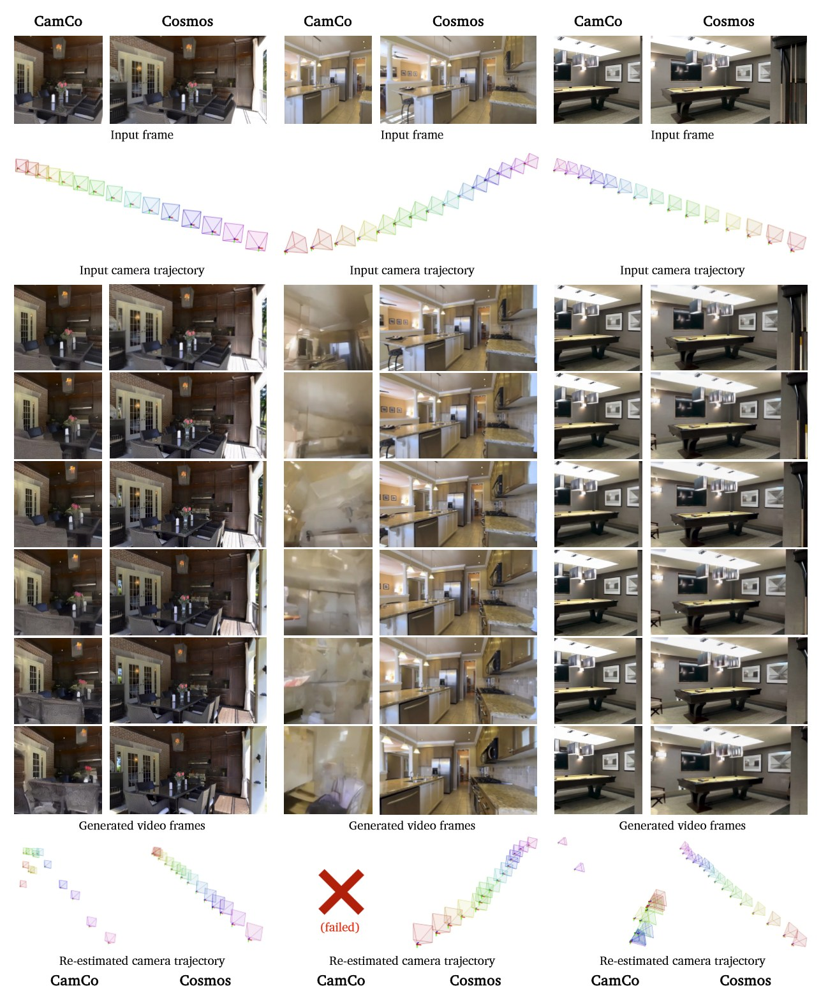
図21：カメラ制御モデルの定性的比較。入力フレームとカメラ軌跡（時間に沿って赤から紫へ色分け）を与えたときの、生成された将来フレームと再推定されたカメラ姿勢について、Cosmos-Predict1-7B-Video2World-Sample-CameraCond を CamCo（Xu et al., 2024）と比較する。CamCo はデータ分布のシフトに悩まされ、不正確な軌跡を生成したり、さらにはカメラ姿勢が推定不能になるような分布外の画像合成を生じたりすることが多い。対照的に、Cosmos のカメラ制御モデルは、高い動画品質と 3D 一貫性を維持しながら、カメラ制御入力に沿った将来フレームの生成に成功している。
図中ラベル：Input frame＝入力フレーム、Input camera trajectory＝入力カメラ軌跡、Generated video frames＝生成された動画フレーム、Re-estimated camera trajectory＝再推定されたカメラ軌跡、(failed)＝（失敗）
| 手法 | カメラ軌跡の整合 | 動画生成品質 | |||
|---|---|---|---|---|---|
| 姿勢推定成功率（%）↑ | 回転誤差（°）↓ | 並進誤差 ↓ | FID ↓ | FVD ↓ | |
| CamCo（Xu et al., 2024） | 43.0% | 8.277 | 0.185 | 57.49 | 433.24 |
| Cosmos-Predict1-7B-Video2World-Sample-CameraCond | 82.0% | 1.646 | 0.038 | 14.30 | 120.49 |
表22：カメラ制御付き事後学習済み WFM の定量的比較。
比較。結果を表22 に示す。第一に、我々の事後学習済み WFM は写実的で一貫性のある 3D 世界を生成できる。このことは、より低い FID/FVD スコア（より高い視覚的品質）と、より高いカメラ姿勢推定成功率によって裏付けられる。Cosmos-Predict1-7B-Video2World-Sample-CameraCond は、カメラ軌跡の再推定結果が元の制御入力に大幅に近いことから、より優れたカメラ制御を示している。
図21 には視覚的な比較も示す。CamCo は入力画像を超えた内容の生成に苦戦する一方、Cosmos-Predict1-7B-Video2World-Sample-CameraCond は 3D 世界の構造に従った映像を効果的に生成する。両モデルとも DL3DV-10K で事後学習され、RealEstate10K データセットで評価されている点に留意されたい。これは学習とテストの間に大きな分布シフトをもたらす。Cosmos モデルはこの分布シフトをうまく克服するとともに、未見の入力カメラ軌跡に汎化する能力も示している。
定性的結果。図22 に、前進、後退、左回転、右回転を含む、カメラに対するジョイスティック風の制御入力による結果を示す。これは、ジョイスティックを用いてモデルによる将来の動画フレーム生成を制御し、シミュレートされた世界をナビゲートできるというユースケースを示している。フィジカル AI エージェントも、このような制御を用いて異なるシナリオの下での世界の将来を予測できるだろう。
生成の多様性を示すため、図23 に、同じ入力画像とカメラ制御から異なるランダムシードで生成した結果を示す。Cosmos-Predict1-7B-Video2World-Sample-CameraCond は、動画における 3D 空間的・時間的一貫性を保ちながら、異なる世界を生成できる。これは、現在の状態が与えられたときに起こり得るさまざまな将来をシミュレートするために利用できる。
6.2 ロボットマニピュレーションのための WFM の事後学習
世界モデルは、ロボットマニピュレーションのための強力なプランナーおよびシミュレータとして機能する可能性を持つ。ここでは、事前学習済み WFM を 2 つのタスク、すなわち (1) 指示ベースの動画予測と (2) 行動ベースの次フレーム生成のためにファインチューニングする方法を示す。指示ベースの動画予測では、入力はロボットの現在の動画フレームとテキスト指示であり、出力はその指示に従うロボットの予測動画である。行動ベースの次フレーム予測では、入力はロボットの現在の動画フレームと、現在のフレームと次のフレームの間の行動ベクトルであり、出力はロボットが指定された行動を実行した結果を示す予測された次フレームである。行動の系列が与えられれば、モデルを自己回帰的に実行して、ロボットが与えられた行動を実行する動画を予測できる。
6.2.1 データセット
上述の 2 つのタスクのために 2 つのデータセットを整備する。指示ベースの動画予測のために、Cosmos-1X データセットと呼ぶ社内データセットを作成した。これは、1x.Tech のヒューマノイドロボット EVE（Technologies, 2024）がナビゲーション、衣服の折りたたみ、テーブルの清掃、物体の拾い上げなどのさまざまなタスクを行う様子を撮影した、約 200 時間の自己中心視点動画からなる。生の動画から、1〜9 秒の長さのエピソードを約 12,000 件選択した。各エピソードには 1 文の指示がラベル付けされており、その指示は後で独自の VLM によってアップサンプリングされる。動画は 30 FPS、解像度 \( 512 \times 512 \) で撮影されている。
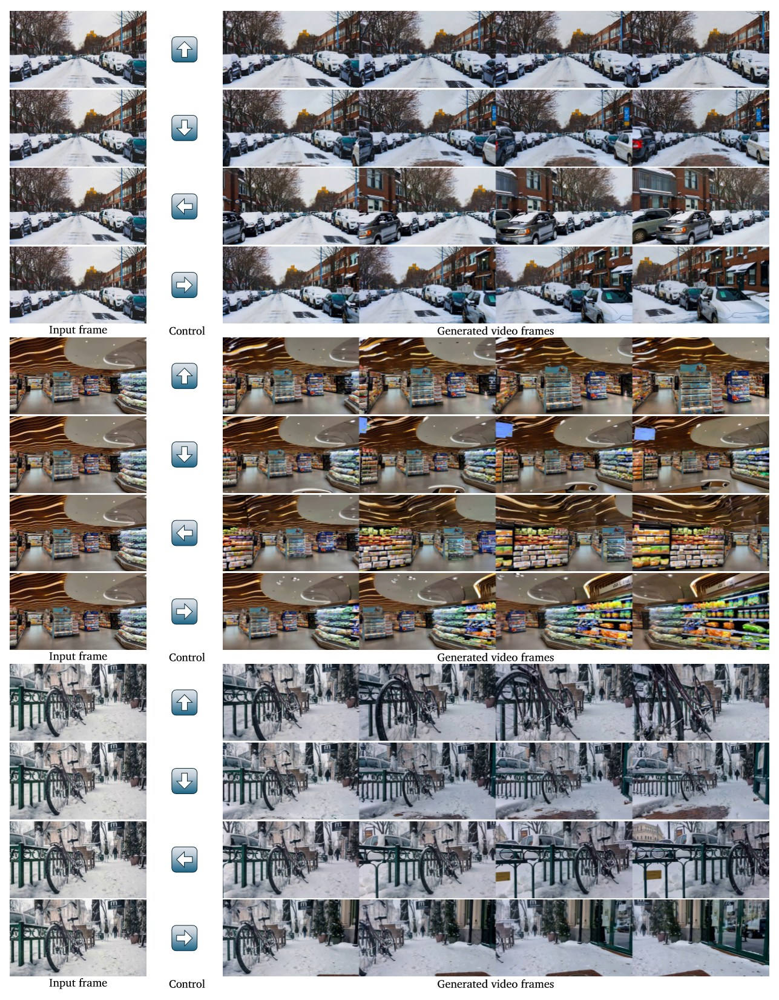
図22：ジョイスティック制御による Cosmos-Predict1-7B-Video2World-Sample-CameraCond の結果。各入力フレーム（最左列）に対し、ジョイスティック風の制御で作成した 4 種類の異なるカメラ軌跡、すなわち前進、後退、左回転、右回転を適用する。生成動画のフレーム 14、28、42、57 を可視化している。
図中ラベル：Input frame＝入力フレーム、Control＝制御、Generated video frames＝生成された動画フレーム
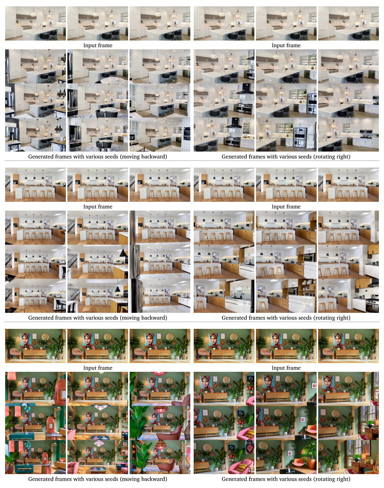
図23：異なるシードによる Cosmos-Predict1-7B-Video2World-Sample-CameraCond の結果。同じ入力画像とカメラ条件が与えられたときに、我々のカメラ制御モデルが多様な将来をシミュレートできる能力を示す。各グループには、同じ入力フレームと、ジョイスティックで作成した同じカメラ条件を適用する。1 つ目のグループは後退を、2 つ目のグループは右回転を示す。各グループ内では、3 つの異なるランダムシードで生成した動画を各列に示す。生成動画のフレーム 19、38、57 を可視化している。
図中ラベル：Input frame＝入力フレーム、Generated frames with various seeds (moving backward)＝さまざまなシードによる生成フレーム（後退）、Generated frames with various seeds (rotating right)＝さまざまなシードによる生成フレーム（右回転）
行動ベースの次フレーム生成には、比較のため先行研究（Zhu et al., 2024）と同じ構成で、Bridge（Ebert et al., 2022）と呼ばれる公開データセットを用いた。Bridge データセットは、キッチン環境でさまざまなタスクを行うロボットアームを第三者視点から撮影した約 20,000 件のエピソードを含み、動画は解像度 \( 320 \times 256 \)、5 FPS で撮影されている。各動画フレームについて、対応する行動は OpenVLA（Kim et al., 2024）と同様に、グリッパ座標空間における 7 次元ベクトル \( (\Delta x, \Delta y, \Delta z, \Delta\theta_r, \Delta\theta_p, \Delta\theta_y, \Delta\text{Gripper}) \) として定義される。
6.2.2 ファインチューニング
指示ベースの動画予測タスクと行動ベースの次フレーム予測タスクのために、Cosmos-Predict1-7B-Video2World（5.1 節）と Cosmos-Predict1-5B-Video2World（5.2 節）の両方をファインチューニングする。
指示ベースの動画予測については、ベース WFM に基づいて 2 つのモデルを構築する。1 つ目は Cosmos-Predict1-7B-Video2World-Sample-Instruction、2 つ目は Cosmos-Predict1-5B-Video2World-Sample-Instruction と呼ぶ。指示の T5 埋め込みを計算し、それをクロスアテンションを介してベースモデルのファインチューニングに加える。
行動ベースの次フレーム予測についても、ベース WFM に基づいて 2 つのモデルを構築する。1 つ目は Cosmos-Predict1-7B-Video2World-Sample-ActionCond、2 つ目は Cosmos-Predict1-5B-Video2World-Sample-ActionCond と呼ぶ。
行動は事前学習中に遭遇しなかった新しいモダリティであるため、条件付けのための追加モジュールをモデル内部に導入する。Cosmos-Predict1-5B-Video2World-Sample-ActionCond では、行動ベクトルをテンソルに射影する行動埋め込み器（action embedder）MLP を追加し、それをクロスアテンションを介してモデルに取り込む。Cosmos-Predict1-7B-Video2World-Sample-ActionCond でも同様に行動をテンソルへ変換する（訳注：原文は "predict the action into a tensor" だが "project" の意と解した）行動埋め込み器 MLP を追加するが、こちらはそれを DiT モジュールのタイムスタンプ埋め込みに加算することでモデルに取り込む。
6.2.3 評価
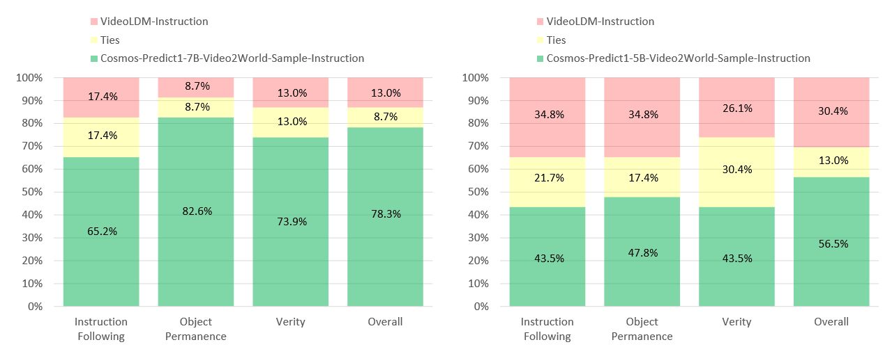
図24：Cosmos-1X データセットにおける指示ベース動画予測の人手評価結果。(a) Cosmos-Predict1-7B-Video2World-Sample-Instruction 対 VideoLDM-Instruction。(b) Cosmos-Predict1-5B-Video2World-Sample-Instruction 対 VideoLDM-Instruction。結果は、ベースラインモデル（VideoLDM-instruction）と比べて、我々のファインチューニング済みモデル（Cosmos-Predict1-7B-Video2World-Sample-Instruction と Cosmos-Predict1-5B-Video2World-Sample-Instruction）が 4 つの評価次元すべてでより高い選好を得ていることを示している。
図中ラベル：Ties＝引き分け、Instruction Following＝指示追従、Object Permanence＝物体の永続性、Verity＝真実性、Overall＝総合
指示ベースの動画予測については、比較用のベースラインとして、Cosmos-1X データセットで VideoLDM（Blattmann et al., 2023）をファインチューニングし、VideoLDM-Instruction を得た。モデルの動画生成性能を評価するため、次の評価次元を定義する。
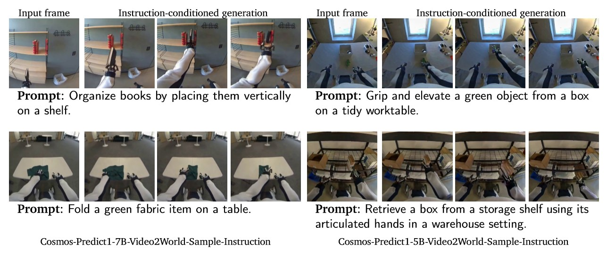
図25：Cosmos-1X データセットにおける指示ベース動画予測のサンプル。左は Cosmos-Predict1-7B-Video2World-Sample-Instruction モデルの結果、右は Cosmos-Predict1-5B-Video2World-Sample-Instruction モデルの結果である。
図中ラベル：Input frame＝入力フレーム、Instruction-conditioned generation＝指示を条件とした生成。プロンプト：左上「本を棚に縦に並べて整理する。」、右上「整頓された作業台の上の箱から緑色の物体をつかんで持ち上げる。」、左下「テーブルの上の緑色の布製品を折りたたむ。」、右下「倉庫環境で、関節付きの手を使って収納棚から箱を取り出す。」
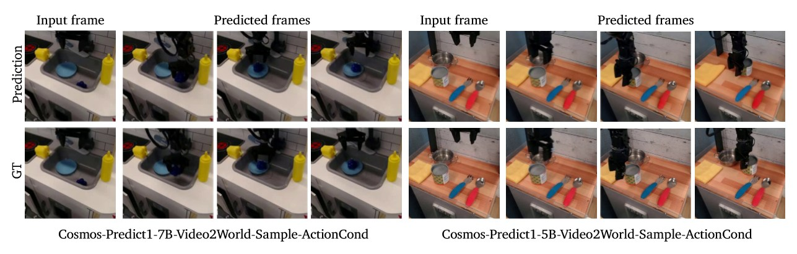
図26：Bridge データセットにおける行動ベース次フレーム予測のサンプル。左は Cosmos-Predict1-7B-Video2World-Sample-ActionCond モデルの結果、右は Cosmos-Predict1-5B-Video2World-Sample-ActionCond モデルの結果である。示されるとおり、両モデルとも予測された動画フレームは GT（正解）の動画フレームとよく一致している。
図中ラベル：Input frame＝入力フレーム、Predicted frames＝予測フレーム、Prediction＝予測、GT＝正解
- 指示追従：生成動画は入力された言語指示と整合しているか？
- 物体の永続性：シーンに存在する物体は生成動画全体を通して存在し続けるか？
- 真実性：生成動画は、予期しない架空の物体を含まずに実世界を忠実に表現しているか？
- 総合：生成動画は、ロボットがそれに従って計画を立てるうえで妥当か？
人間の評価者には、同じ言語指示のもとで異なるモデルが生成した匿名の動画のペアを観察し、上記の評価次元に沿って比較するタスクが課される。10 人の人間の評価者からなるグループが、23 のテストエピソードについて評価を行った。統計的な結果を図24 にまとめる。
示されるとおり、Cosmos-Predict1-7B-Video2World-Sample-Instruction と Cosmos-Predict1-5B-Video2World-Sample-Instruction はいずれも、4 つの評価次元すべてで VideoLDM-Instruction より優れた性能を示すことがわかる。Cosmos-Predict1-7B-Video2World-Sample-Instruction は総合で 78.3% の選好を獲得したのに対し、VideoLDM-Instruction は 13.0% であった。Cosmos-Predict1-5B-Video2World-Sample-Instruction も、拡散ベースの VideoLDM-Instruction より優れた性能を達成している。両方のファインチューニング済み WFM による予測動画フレームの一部を図25 に示しており、予測動画の品質がわかる。
行動ベースの次フレーム予測については、Bridge データセットで我々のモデルをファインチューニングした。ベースラインとして、IRASim（Zhu et al., 2024）をファインチューニングし、行動ベースの次フレーム予測モデル IRASim-Action を導出する。次フレーム予測を自己回帰的に実行して動画を生成する。動画生成品質を評価するため、公式の Bridge テストセットから無作為に選んだ 100 エピソードについて、生成動画を正解動画と比較する。
| 手法 | PSNR ↑ | SSIM ↑ | Latent L2 ↓ | FVD ↓ |
|---|---|---|---|---|
| IRASim-Action | 19.13 | 0.64 | 0.38 | 593 |
| Cosmos-Predict1-5B-Video2World-Sample-ActionCond | 19.95 | 0.80 | 0.36 | 434 |
| Cosmos-Predict1-7B-Video2World-Sample-ActionCond | 21.14 | 0.82 | 0.32 | 190 |
表23：Bridge データセットにおける行動ベース次フレーム予測の評価。
計算した指標を表23 にまとめる。指標には PSNR、SSIM、Latent L2（Zhu et al., 2024）、FVD が含まれる。示されるとおり、Cosmos-Predict1-5B-Video2World-Sample-ActionCond と Cosmos-Predict1-7B-Video2World-Sample-ActionCond の両モデルがベースラインモデル（IRASim-Action）を上回っている。予測された動画フレームの一部を図26 に示しており、正解と比較した予測動画の品質がわかる。
6.3 自律運転のための WFM の事後学習
実環境（in-the-wild）の運転シーンのための世界モデルは、自律運転エージェントを学習するための強力なシミュレーションエンジンとして機能する可能性を持つ。ほとんどの自動運転車は異なる方向を向いた複数のカメラを搭載しているため、自動運転車のための理想的な世界モデルもまたマルチビューであるべきであり、対象車両のセンサの正確な構成に一致していることが望ましい。ここでは、事前学習済み WFM をファインチューニングして、自律運転タスクのためのマルチビュー世界モデルを作成する方法を示す。
6.3.1 データセット
Real Driving Scene（RDS）データセットと呼ぶ社内データセットを整備する。これは、NVIDIA 社内の運転プラットフォームを用いて撮影された、約 360 万本の 20 秒間のサラウンドビュー動画クリップ（約 20,000 時間分のデータに相当）からなる。各クリップは、前方、左、右、後方、左後方、右後方の 6 つのカメラ視点から記録されている。さらにデータセットには、軌跡データの構築に用いる自車運動（ego-motion）情報が含まれる。前方カメラ動画の記録タイムスタンプを用いて、他のすべての視点のフレームを同期させる。
このデータセットは、データ属性の目標分布に一致するよう、大規模なラベル付きデータコーパスから選択された。具体的な属性タグは次のとおりである。
- 競合車両の密度（例：なし、低、中、高）
- 天候（例：晴れ、雨、雪、霧）
- 照明（例：昼、夜）
- 自車の速度（例：停止、低速、一般道、高速道路の速度）
- 自車の挙動（例：高・中・低曲率の軌跡および加速度）
- 道路種別／人口密度（OpenStreetMap の定義に基づく：郊外、住宅地、都市部）
さらに、料金所、橋、トンネル、減速帯などのまれな道路構造を含むクリップを最低限の数だけ確保するため、2 回目のデータマイニングによってデータセットを拡張した。最後に、各カメラ視点の動画は、テンプレート文字列「The video is captured from a camera mounted on a car. The camera is facing forward|left|right|backward|rear-left|rear-right.」（訳：この動画は車に搭載されたカメラで撮影されている。カメラは前方｜左｜右｜後方｜左後方｜右後方を向いている。）から始まるキャプションが個別に付けられる。
6.3.2 ファインチューニング
RDS データセットを用いて、Cosmos-Predict1-7B-Text2World（5.1 節）をマルチビュー世界モデルへとファインチューニングする。複数の視点にわたって一貫した動画生成を保証するため、5.1 節で述べたアーキテクチャ設計にわずかな変更を加え、6 台すべてのカメラの動画を同時に生成するよう WFM をファインチューニングする。
表21 にまとめた 3 つのマルチビュー世界モデルを構築する。1 つ目は Cosmos-Predict1-7B-Text2World-Sample-MultiView と呼ばれ、テキストプロンプト入力に基づいて 6 つのカメラ視点を生成できるマルチビュー世界モデルである。2 つ目は Cosmos-Predict1-7B-Text2World-Sample-MultiView-TrajectoryCond と呼ばれる。このモデルは Cosmos-Predict1-7B-Text2World-Sample-AV-MultiView の上に構築され、条件入力信号として追加の軌跡入力を受け取る。最後のモデルである Cosmos-Predict1-7B-Video2World-Sample-MultiView は、動画ベースの条件付けをサポートするために Diffusion-7B-Video2World-Sample-MultiView モデルからファインチューニングされる（訳注：ここでの "Cosmos-Predict1-7B-Text2World-Sample-AV-MultiView" と "Diffusion-7B-Video2World-Sample-MultiView" は表21 の名称と一致しないが、原文のまま記した）。これは、前のフレームを生成過程に取り込むことで実現される。Cosmos-Predict1-7B-Video2World-Sample-MultiView は、Cosmos-Predict1-7B-Text2World-Sample-MultiView の動画出力を受け取り、その延長を生成できる。3 つのモデルはすべて、解像度 \( 848 \times 480 \) で 57 フレームの動画を 6 視点分出力する。
視点非依存の位置埋め込みと視点埋め込み。FPS を考慮した 3D RoPE 位置埋め込みを拡張して追加の視点次元を含めるのではなく、5.1 節で述べたのと同じ位置埋め込みを各視点に独立に用いることを選ぶ。視点の違いを表現するため、ノイズ除去関数 \( D_\theta \) を変更し、追加の視点埋め込みを入力として受け取るようにする。すなわち、カメラ視点の情報は位置埋め込みではなく大域的な視点埋め込みを通じて与えられる。
視点依存のクロスアテンション。我々のマルチビュー設定では、同じシーンの 6 つの視点はそれぞれ異なる動画記述を持つ。6 つの視点全体をまとめて拡散過程の状態として扱い、ノイズ除去のために 6 視点内のすべての要素間で自己注意を行う一方、テキスト入力には視点依存のクロスアテンションを用いるのが有益であることがわかった。具体的には、各視点のクロスアテンション演算は、その視点に固有のテキスト記述にのみ注意を向ける。我々のデータセットでは各視点が異なる動画記述を持つことに留意されたい。視点埋め込みと視点依存のクロスアテンションを用いて、Cosmos-Predict1-7B-Text2World をファインチューニングすることで Cosmos-Predict1-7B-Text2World-Sample-MultiView を得る。
軌跡制御の条件。オプションとして、エージェントのより精密な制御を可能にするため、テキスト条件に加えて、与えられた将来の軌跡経路に従う動画を生成するようモデルをファインチューニングする。これにより、実世界データで記録された走行軌跡と、入力テキスト記述で指定された走行環境の両方に従う、固有の走行シナリオを生成できるようになる。ファインチューニングされたモデルが Cosmos-Predict1-7B-Text2World-Sample-MultiView-TrajectoryCond である。
軌跡は 3D 空間内の 64 点の系列として定義し、初期位置 \( (0, 0, 0) \) から最終目的地までのエージェントの並進の系列を表す。各点は 0.1 秒間隔で区切られる。軌跡入力の埋め込みを計算し、その結果をファインチューニングした Cosmos-Predict1-7B-Video2World モデルのデノイザへの条件入力とする。先行研究（Hu et al., 2023; Kim et al., 2020, 2021）に倣って、あるいはロボットマニピュレーションタスク（6.2 節）のように、区間ごとの行動ベクトルを与えることで、より細かな制御信号を実現できることに留意する。このような拡張は今後の課題とする。
6.3.3 評価
まず、テキスト条件付きの定性的結果を図27 に示す。Cosmos-Predict1-7B-Text2World-Sample-MultiView を用いて 6 視点の 57 フレームの動画を生成し、それを Cosmos-Predict1-7B-Video2World-Sample-MultiView モデルを用いて 201 フレームに延長する。図28 では、事前学習済み世界モデルが汎化を高め、川の上を走行するといった RDS データセットにとってまれな、あるいはドメイン外のシーンの生成を可能にすることを示す。最後に、図29 は Cosmos-Predict1-7B-Text2World-Sample-MultiView-TrajectoryCond の結果を示しており、自車が入力軌跡に正確に従っている。
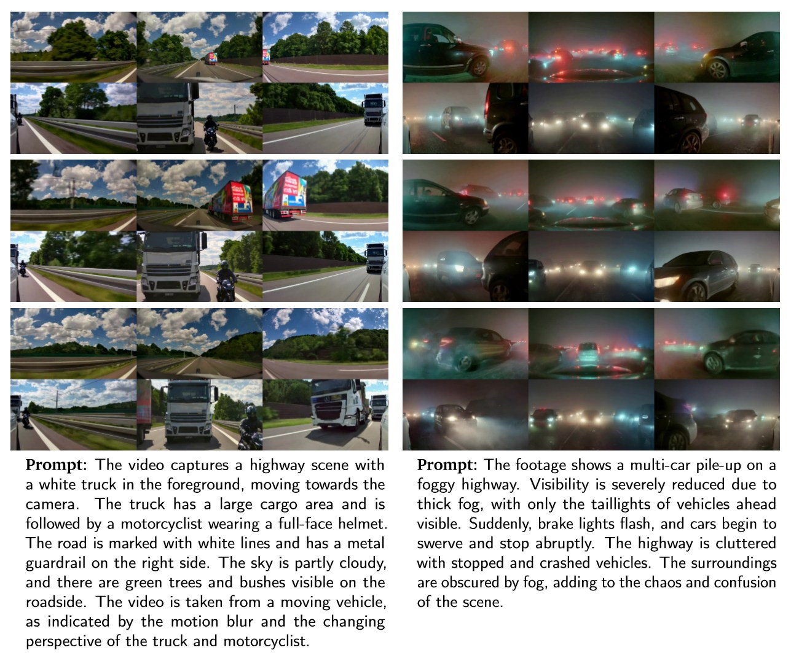
図27：Cosmos-Predict1-7B-Text2World-Sample-MultiView により生成され、Cosmos-Predict1-7B-Video2World-Sample-MultiView により 8 秒に延長されたテキスト条件付きサンプル。この図は、6 つのカメラ視点すべてを 1 つのグループとして可視化しており、各行が特定のタイムスタンプに対応する。左の例は、大型トラックの横をオートバイが走行している幹線道路のシーンを描いている。右の例は、大雪の日に右折するセダンに自車が追従している様子を示している（訳注：右の例の図中プロンプトは霧の高速道路での多重衝突を記述しており、キャプションの説明と一致しない）。
図中のプロンプト：左「この動画は、手前に白いトラックがあり、カメラに向かって移動している幹線道路のシーンを捉えている。トラックには大きな荷台があり、その後ろをフルフェイスヘルメットをかぶったオートバイ運転者が追従している。道路には白線が引かれ、右側には金属製のガードレールがある。空は部分的に曇っており、道路脇には緑の木々や茂みが見える。モーションブラーや、トラックとオートバイ運転者の見え方の変化から示されるように、動画は走行中の車両から撮影されている。」右「この映像は、霧の立ち込める高速道路での多重衝突事故を映している。濃い霧のため視界は著しく低下しており、前方の車両のテールライトしか見えない。突然ブレーキランプが点灯し、車がハンドルを切って急停止し始める。高速道路は停止した車両や衝突した車両で埋め尽くされている。周囲は霧に覆われ、現場の混乱と混迷に拍車をかけている。」
定量的結果については、ベースラインとして、同じファインチューニングのレシピに従って VideoLDM（Blattmann et al., 2023）をファインチューニングし、VideoLDM-MultiView と呼ぶマルチビュー世界モデルを得た。動画生成品質、マルチビュー一貫性、軌跡追従精度を測定する一連の評価指標を用いる。動画生成品質の評価には、1000 サンプルを用いてスコアを計算する。一貫性関連の指標については、異なるシナリオにおける各モデルの挙動をより良く理解するため、正解軌跡を前進、左折、右折、その他（静止や複雑な動きを含む）の 4 種類に分類する。各カテゴリについて 200 サンプルとそれに対応するプロンプトおよび条件を集め、合計 800 サンプルとした。以下に、指標と結果の詳細を述べる。
生成品質。実動画に対する生成動画の品質を測定するため、Fréchet Inception Distance（FID）（Heusel et al., 2017）と Fréchet Video Distance（FVD）（Unterthiner et al., 2019）を用いる。まず各動画から 16 フレームを抽出して視点ごとのスコアを計算する。次に、手法ごとに全視点の平均スコアを報告する。表24 に示すとおり、Cosmos-Predict1-7B-Text2World-Sample-MultiView と Cosmos-Predict1-7B-Text2World-Sample-MultiView-TrajectoryCond はいずれも両指標で VideoLDM-MultiView を大幅に上回っており、我々の事前学習済み 7B 拡散ベース WFM が VideoLDM-MultiView ベースラインより優れた品質を持つことを示している。
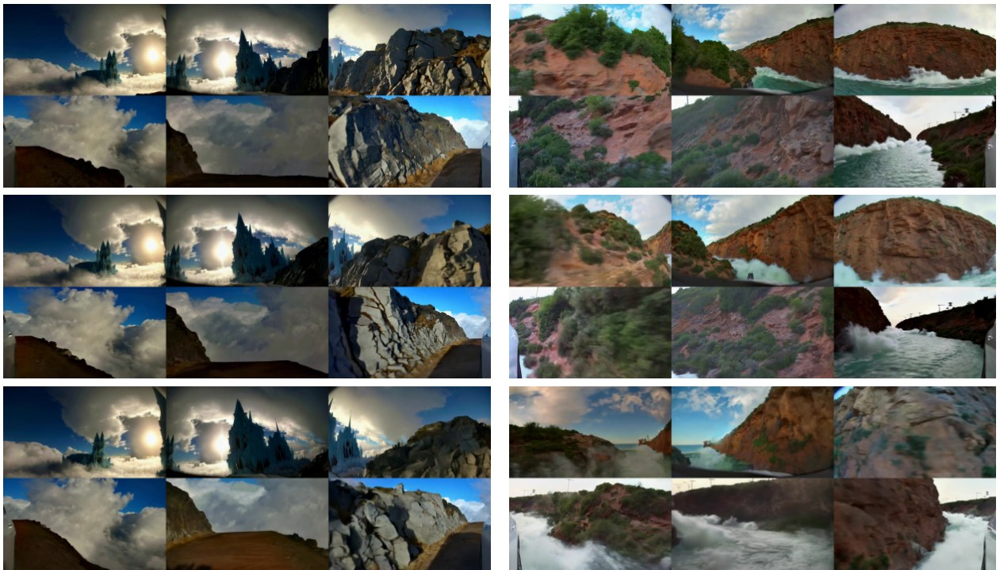
図28：Cosmos-Predict1-7B-Text2World-Sample-MultiView で生成したテキスト条件付きサンプルを、Cosmos-Predict1-7B-Video2World-Sample-MultiView で 8 秒に延長したもの。事後学習した世界モデルは汎化能力を効果的に保持している。左の例では自車が氷の城に向かって走行しており、右の例では自車が川の上を走行している様子が示されている。
図中のプロンプト（左）：精巧に設計された氷の城がそびえ立ち、内側から照らされている。前方の空には鮮やかな夕焼けと、城の左側に位置する明るい月が見え、情景全体に青みがかった色合いを投げかけている。速く流れる暗く劇的な雲が、この世のものとは思えない雰囲気を添えている。3D のリアルなアートスタイルは照明と質感に重点を置き、印象的な視覚効果を生み出している。（右）：この映像は、海が険しい岩の崖と接する沿岸地域を捉えている。前方では鮮やかな青い波が岩に打ち寄せ、白い泡を立てている。崖は茶色と緑色が混ざった色合いで、植生や、おそらくはコケや藻類があることを示している。
マルチビュー一貫性。生成されたマルチビュー動画の幾何学的一貫性を定量化するために、5.3.1 節で定式化した Sampson 誤差（Hartley and Zisserman, 2003; Sampson, 1982）の拡張版を用いる。我々の RDS データセットの正解動画は類似した魚眼カメラの内部パラメータを共有しているため、中央値のキャリブレーションを用いてキーポイントの歪みを補正し、\( 960 \times 540 \) の統一サイズで水平視野角（FoV）120 度の通常のピンホールカメラに変換する。この設定のもとで、生成されたマルチビュー動画について 2 つの指標を計算する。
- 時間方向 Sampson 誤差（TSE）は、各カメラに対して生成された内容が時間的に一貫しているかを測る。これは各ビューにおける隣接フレーム間の Sampson 誤差の中央値である。
- ビュー間 Sampson 誤差（CSE）は、マルチビュー一貫性が時間を通じて保たれているかを測る。これは生成された異なるビュー間の Sampson 誤差を時間方向に平均したものである。CSE で用いる基礎行列は、全時間フレームにわたって蓄積したキーポイントを用いて推定する。
表24 に示すように、Cosmos-Predict1-7B-Text2World-Sample-MultiView と Cosmos-Predict1-7B-Text2World-Sample-MultiView-TrajectoryCond はいずれも、VideoLDM-MultiView よりも優れたマルチビュー幾何一貫性を示すことがわかる。我々の WFM からファインチューニングした世界モデルでは、生成動画の全体的な幾何学的妥当性がはるかに優れている。また、軌跡制御条件を加えると、明示的な 3D ガイダンスのおかげでこの一貫性がさらに向上し、Cosmos-Predict1-7B-Text2World-Sample-MultiView-TrajectoryCond が最良となることにも注目する。
| 手法 | 生成品質 | マルチビュー一貫性 | ||
|---|---|---|---|---|
| FID ↓ | FVD ↓ | TSE ↓ | CSE ↓ | |
| VideoLDM-MultiView | 60.84 | 884.46 | 1.24 | 6.48 |
| Cosmos-Predict1-7B-Text2World-Sample-MultiView | 32.16 | 210.23 | 0.68 | 2.11 |
| Cosmos-Predict1-7B-Text2World-Sample-MultiView-TrajectoryCond | - | - | 0.59 | 2.02 |
| 実動画（参考） | - | - | 0.69 | 1.71 |
表24：マルチビュー運転動画生成のために事後学習したマルチビュー世界モデルの評価。
| 手法 | TAE-ATE ↓ | TAE-RPE-R ↓ | TAE-RPE-t ↓ | TFE ↓ |
|---|---|---|---|---|
| VideoLDM-MultiView | 0.88 | 22.94 | 0.77 | - |
| Cosmos-Predict1-7B-Text2World-Sample-MultiView | 0.77 | 4.25 | 0.29 | - |
| Cosmos-Predict1-7B-Text2World-Sample-MultiView-TrajectoryCond | 0.54 | 4.31 | 0.18 | 20.20 |
| 実動画（参考） | 0.49 | 4.60 | 0.14 | 13.49 |
表25：マルチビュー運転動画生成のために事後学習したマルチビュー世界モデルの軌跡一貫性評価。TAE の数値は便宜上 \( 10^2 \) 倍しており、TFE の単位は cm である。
軌跡一貫性：軌跡一致誤差（Trajectory Agreement Error、TAE）。Teed and Deng（2021）の定式化に基づき、Liang et al.（2024）で用いられたものと同様の、頑健なマルチビューカメラ姿勢推定パイプラインを設計する。この姿勢推定パイプラインは、オンラインの動的マスク生成モジュールと非常に効率的な密バンドル調整モジュールを備え、マルチビューカメラ姿勢の推定において頑健かつリアルタイムの性能を達成する。このパイプラインを用いて、「前方＋左前方」カメラと「前方＋右前方」カメラという 2 つのマルチビューカメラ構成を別々に用いて前方カメラのカメラ姿勢を推定する。次に、それらの軌跡誤差を計算して両者の一致度を示し、これによってマルチビュー生成の一貫性を反映させる。具体的には、絶対軌跡誤差（ATE）と、並進成分（RPE-t）および回転成分（RPE-R）の両方についての相対姿勢誤差を計算する。公平な比較のために軌跡の長さを 1.0 に正規化し、カメラの動きがわずかなケース（例えば、赤信号で停止している車）は除外する。
表25 に示すように、結果はマルチビュー幾何一貫性の結果と呼応しており、Cosmos WFM からファインチューニングした世界モデルの軌跡一貫性は、VideoLDM-MultiView からのものよりはるかに優れている。事後学習した Cosmos 世界モデルは、実世界の動画に近い軌跡一貫性を持つことに注目する。
軌跡一貫性：軌跡追従誤差（Trajectory Following Error、TFE）。さらに、軌跡制御条件をモデルに入力するモデルについては、上記と同じカメラ姿勢推定パイプラインを用いてマルチビュー情報から前方カメラの姿勢を計算し、予測された軌跡を正解の軌跡条件と比較する。これは、モデルが与えられた軌跡経路にどれだけよく従うかを測るものである。表25 に示すように、我々の事後学習済み Cosmos 世界モデルの生成動画を用いて推定した軌跡誤差は、正解オラクルと比べて精度の低下が 7cm 未満にとどまる。このように差がかなり小さいことは、我々のモデルが与えられた軌跡経路に正確に従えることを示しており、これは自動運転エージェントの学習にとって極めて重要である。
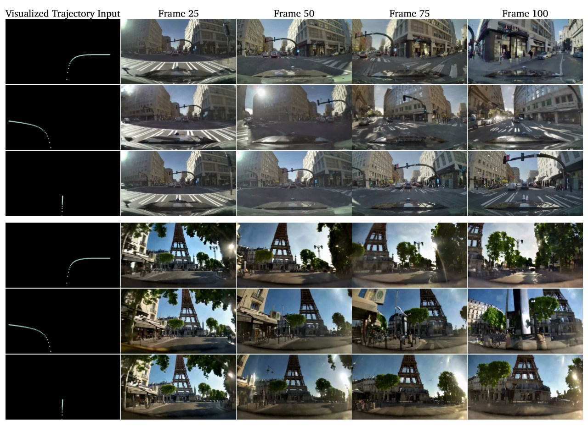
図29：Cosmos-Predict1-7B-Text2World-Sample-MultiView-TrajectoryCond による軌跡条件付き生成サンプル。最も左の列の軌跡入力が与えられると、我々は与えられた軌跡に従うマルチビュー動画を生成する。この図では前方カメラのビューを可視化している。
図中ラベル：Visualized Trajectory Input＝可視化した軌跡入力、Frame 25／50／75／100＝第 25／50／75／100 フレーム
物体追跡の一貫性。最後に、生成した 8 秒の動画に対して YOLOv11x（Khanam and Hussain, 2024）を用いた物体検出と追跡を適用した。人間のアノテータには、2 つの異なる物体（例えば、人と車）が誤って 1 つの追跡対象に融合するといった、物理的にありえないシナリオを追跡アルゴリズムが誤って解釈した事例を特定する作業を課した。これを評価するため、157 個の物体を含む 20 本の生成動画を無作為に抽出してアノテータに提供した。注目すべきことに、157 個の物体のいずれにも物理的にありえないシナリオは見られず、我々が生成した運転動画の物理的一貫性と物体の永続性が実証された。
7 ガードレール
我々の WFM を安全に利用するために、包括的なガードレールシステムを開発する。これは pre-Guard 段階と post-Guard 段階の 2 段階から構成される。pre-Guard 段階では、Aegis（Ghosh et al., 2024）とキーワードリストを活用して有害なプロンプトをブロックする。post-Guard 段階では、動画コンテンツ安全性分類器と顔ぼかしフィルタを用いて有害な視覚的出力をブロックする。このパイプラインを図30 に示す。
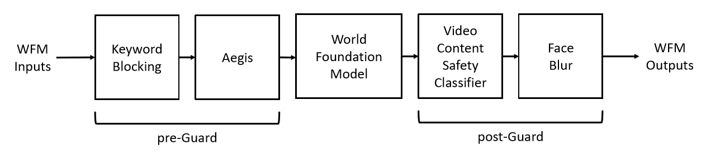
図30：Cosmos Guardrail の概要。Cosmos Guardrail は pre-Guard と post-Guard から構成される。pre-Guard は Aegis（Ghosh et al., 2024）とキーワードに基づいて入力をブロックし、post-Guard は動画コンテンツ安全性分類器に基づいて出力をブロックするとともに、出力中の顔をぼかす。
図中ラベル：WFM Inputs＝WFM への入力、Keyword Blocking＝キーワードによるブロック、World Foundation Model＝世界基盤モデル、Video Content Safety Classifier＝動画コンテンツ安全性分類器、Face Blur＝顔ぼかし、WFM Outputs＝WFM の出力
7.1 Pre-Guard
我々の pre-Guard はテキスト領域のガードレールであり、意味的に複雑なプロンプトに対する LLM ベースのガードレールと、明示的に安全でないキーワードに対する単純なブロックリストベースのチェッカーから構成される。
7.1.1 キーワードによるブロック
ブロックリストによるヒューリスティックは、安全でないコンテンツを生成するリスクを軽減する第一の防衛線として機能する。これは、露骨で不快な単語からなる大規模なコーパスをハードコードしたブロックリストに対してプロンプトのキーワード検索を行うことで、明示的に有害な生成をブロックするよう設計されている。入力された単語は WordNetLemmatizer を用いて見出し語化される。これは英語の語彙データベース（Miller, 1995）を用いて、単語の変化形から語根を抽出するツールである。例えば、「abacii」の語根は「abacus」である。こうして見出し語化された単語をハードコードされたブロックリストの単語と比較し、冒涜的な語が 1 つでも見つかればプロンプト全体を拒否する。ユーザーを最大限に保護するため、包括的なキーワード集合を用いる。
7.1.2 Aegis ガードレール
第二の防衛線として、Aegis-AI-Content-Safety-LlamaGuard-LLM-Defensive-1.0（Ghosh et al., 2024）を用いる。これは Llama-Guard（Inan et al., 2023）をファインチューニングしたもので、NVIDIA の広範な分類体系に含まれる 13 の重大な安全リスクカテゴリを網羅する NVIDIA の Aegis Content Safety Dataset で学習されている。AEGIS 1.0 には防御的（defensive）版と許容的（permissive）版の 2 つのバージョンがある。防御的版は許容的版よりも厳しい許可境界を採用している。Cosmos は、有害なコンテンツを生成しようとする潜在的に有害なユーザープロンプトをブロックするために、Aegis の防御的版を用いる。入力プロンプトがこのプロンプトフィルタによって安全でないと分類された場合、動画は生成されず、エラーメッセージが表示される。
Aegis をプロンプトフィルタとして用いる際には、プロンプトが次のカテゴリのいずれかに該当する場合に安全でないと分類する：暴力、性的内容、犯罪の計画、武器、薬物乱用、自殺、児童性的虐待コンテンツ、憎悪、ハラスメント、脅迫、冒涜。上記のカテゴリに該当しないプロンプトは、プロンプトフィルタリングの観点からは安全とみなされる。
7.2 Post-Guard
我々の post-Guard は視覚領域のガードレールであり、生成された出力に対する動画コンテンツ安全性フィルタと顔ぼかしフィルタから構成される。
7.2.1 動画コンテンツ安全性フィルタ
動画コンテンツ安全性フィルタは、我々の動画データセットと生成結果で学習したフレーム単位の多クラス分類器である。クラスの中には安全とみなされるものと、安全でないとみなされるものがある。この分類器の学習における主要な課題は、安全なコンテンツが誤って安全でないと判定される偽陽性と、安全でないコンテンツが誤って安全と分類される偽陰性とのバランスをとることにある。分類誤りを最小化するため、学習時にはデータのバランスを慎重に調整した。
我々は 3 種類の正解アノテーション付きデータを収集する。第一に、データセットから大量の動画をサンプリングしてフレームを抽出し、VLM を用いてそのクラスを決定する。第二に、コーナーケースや出現頻度の最も低いコンテンツカテゴリを確実にカバーするため、プロンプトの集合を用いて我々の WFM で合成動画を生成する。最後に、人間のアノテータがデータセットの一部に「ゴールドスタンダード」のラベルを付与し、これが重要な検証の層を追加するとともに、分類器の精度を継続的に改善するのに役立つ。各動画フレームについて SigLIP（Zhai et al., 2023）埋め込みを抽出し、その埋め込みの上で単純な MLP 分類器を学習する。推論時には、すべてのフレームについて SigLIP 埋め込みを生成してから分類器を適用する（訳注：原文は「ing inference」で、「During inference」の脱字と思われる）。いずれかのフレームが安全でないと分類された場合、動画全体が安全でないと判定される。
7.2.2 顔ぼかしフィルタ
最先端の顔検出モデルである RetinaFace（Deng et al., 2020）を用いて、高い信頼度スコアを持つ顔領域を特定する。検出された顔領域のうち \( 20 \times 20 \) ピクセルより大きいものに対してはピクセル化（モザイク）を適用し、フィジカル AI の応用のためにシーン全体の構図を保ったまま、その領域を判別できないようにする。
7.3 レッドチームによる取り組み
我々は専任のレッドチームを置き、社内の攻撃プロンプトデータセットに収集された標準的な例と敵対的な例の両方を用いて、システムを積極的に検証している。これらの動画出力には、我々のタスクのために特別に訓練された専門のアノテータチームがアノテーションを付け、7.1.2 節の分類体系に関連する複数の危害カテゴリについて、生成動画を 1〜5 の尺度で分類する。これらのアノテーションでは安全でないコンテンツが検出された開始フレームと終了フレームも特定され、それによって高品質なアノテーションが得られる。レッドチームはまた、各ガードレールコンポーネントを標的を絞った例で個別に検証し、弱点を特定してエッジケースでの性能を改善した。公開日時点で、レッドチームは、安全でないコンテンツを幅広くカバーするよう慎重に作成された 10,000 組以上の異なるプロンプトと動画の組をテストし、アノテーションを付けている。
8 関連研究
世界モデル。「世界モデル」の概念は Ha and Schmidhuber（2018）の先駆的研究に由来する。この研究は、現在の状態と入力が与えられたときに将来の状態を予測するニューラルネットワークモデルを用いて、実世界の表現を学習することを提案した。物理世界のモデルを正確に表現できれば、将来の状態を信頼性高く予測できるだけでなく、情報に基づいた意思決定も可能になる。物理世界をモデル化するというこの概念は新しいものではない。従来のオートメーションやロボティクス産業では、物理法則とシステム同定に基づく数理モデルが、計画・制御アルゴリズムにおいて長く用いられてきた（Murray et al., 2017）。しかし、こうしたシステム固有のモデルは通常、低次元の状態空間に限定されており、異なるシステム間での汎化や知識の転移を制約するため、新しいタスクや環境に適用する際のモデルの再利用が限られる。深層学習、特に生成 AI の近年の進歩により、視覚的観測から直接世界モデルを学習することが可能になった。
現代の世界モデルのパイプラインは、そのバックボーンアーキテクチャに基づいて分類できる。Ha and Schmidhuber による元の論文（Ha and Schmidhuber, 2018）を含むほとんどの研究（Hafner et al., 2019, 2021, 2023; Hansen et al., 2024; Kim et al., 2020, 2021）は、オートエンコーダによって学習した潜在空間においてシステム状態の推移をモデル化するために再帰型ニューラルネットワークを用いている。より最近の潮流では、世界モデルを視覚的観測空間における生成モデルとみなし、多くの場合、条件付き動画生成モデル（例えば、行動から動画、テキストから動画）の形をとる。これらのモデルは自己回帰型（Bruce et al., 2024; Liu et al., 2024; Micheli et al., 2023; Robine et al., 2023; Yang et al., 2023）または、本研究で検討しているような拡散ベース（Alonso et al., 2024; Ding et al., 2024; Valevski et al., 2024）のいずれかである。もう 1 つの有望なアプローチは生成的シミュレーション（Hua et al., 2024; Nasiriany et al., 2024）であり、生成 AI と物理シミュレータを組み合わせて実世界をモデル化する。
十分に学習された世界モデルは、検証（Hu et al., 2023）、計画に基づくモデル予測制御（Bar et al., 2024; Hansen et al., 2024）、モデルベース強化学習（Alonso et al., 2024; Ding et al., 2024; Robine et al., 2023; Yang et al., 2023; Zhang et al., 2024）など、さまざまな方法で応用できる。世界モデルの有効性は、コンピュータゲーム（Alonso et al., 2024; Bruce et al., 2024; Hafner et al., 2021; Kim et al., 2020; Valevski et al., 2024）、実世界のロボット（Wu et al., 2023; Yang et al., 2023）、自動運転（Blattmann et al., 2023; Hu et al., 2023; Kim et al., 2021; Zhao et al., 2024）などの領域で実証されている。我々は、基盤的な世界モデルがこれらの産業に変革的な影響をもたらすと考えている。
動画生成モデル。動画生成モデルの分野は近年急速な発展を遂げている。短く低解像度の動画を生成していた初期のモデルから、この分野は大きく進化し、今や動画生成モデルは生成 AI 研究の最前線にある（Ho et al., 2022; Huang et al., 2024）。近年では、Sora、Dream Machine、Gen 3、Kling など、リアルで高解像度の動画を生成できる目覚ましい動画生成モデルが登場している（KuaiShou, 2024; Luma, 2024; OpenAI, 2024; Runway, 2024）。これらの進歩は、最初の動画生成モデルの公開からわずか数年のうちに成し遂げられた。
動画生成モデルに関する既存研究の多くは、テキストプロンプト入力に基づいて動画を生成する text-to-video タスクに焦点を当てている（Blattmann et al., 2023; Ge et al., 2023; Girdhar et al., 2024; Lin et al., 2024; Ma et al., 2024; Yang et al., 2024）。これらのモデルにより、ユーザーは注意深く設計したテキストプロンプトを用いて印象的な動画を作成できる。その他のよく知られたタスクとして、与えられた画像フレームから始まる動画を生成する Image-to-Video（Blattmann et al., 2023; Gururani et al., 2023; Mallya et al., 2022; Ren et al., 2024; Wang et al., 2021, 2024）、参照動画が与えられたときに新しい動画を生成する Video-to-Video（Ku et al., 2024; Liu et al., 2024; Mallya et al., 2020; Wang et al., 2018, 2019）、そして世界モデルと身体性 AI の発展に後押しされた、行動に基づいて動画を生成する Action-to-Video（Alonso et al., 2024; Bruce et al., 2024; Tulyakov et al., 2018; Valevski et al., 2024）がある。
動画生成モデルの大多数は、ノイズを動画シーケンスへと徐々に変換する拡散モデルの枠組みを採用している（Blattmann et al., 2023; Ge et al., 2023; Lin et al., 2024; Ma et al., 2024; Yang et al., 2024）。自己回帰モデルも動画生成に用いられており、動画と他のモダリティを統一的に扱えるという利点がある（Deng et al., 2024; Kondratyuk et al., 2024; Liu et al., 2024）。自己回帰モデルは有望性を示しているものの、視覚品質の点では拡散ベースの動画モデルが依然として優れている。我々の目標は、フィジカル AI の開発者がその応用を前進させるのを支援することである。我々は、拡散ベースのモデルと自己回帰ベースのモデルにはどちらにも長所と短所があると考えている。拡散ベースのモデルは、より優れた視覚品質で動画を描画できる。自己回帰ベースのモデルは、LLM コミュニティで開発されたあらゆる種類の技術をよりうまく活用できる。我々は拡散ベース（Cosmos-Diffusion）と自己回帰ベース（Cosmos-Autoregressive）の両方の WFM を構築し、フィジカル AI の開発者が利用できるようにしている。
カメラ制御を伴う動画生成。3D 一貫性のある動画生成の起源は、ビュー合成と 3D 再構成の初期の研究にさかのぼる。そこでは、さまざまな 3D 表現に適用したニューラルレンダリングを用いて、3D 一貫性のある動画を作成することが目指された（Kerbl et al., 2023; Li et al., 2023; Mildenhall et al., 2020; Wang et al., 2021; Zhou et al., 2018）。この研究の流れの中でも、単一画像からの 3D ビュー合成（Charatan et al., 2024; Lin et al., 2023; Tucker and Snavely, 2020; Wiles et al., 2020; Yu et al., 2021）は特に難しく、通常はマルチビュー画像データセットから強力な 3D 事前モデルを学習する必要がある。こうした 3D 事前モデルはしばしばうまくスケールしないため、スケーラブルな Transformer アーキテクチャを用いた純粋にデータ駆動のアプローチによる、学習ベースのビュー合成も探究されてきた（Dosovitskiy et al., 2021; Vaswani et al., 2017）。これにより明示的な 3D 事前知識の必要性が回避される（Rombach et al., 2021; Sajjadi et al., 2022）。すなわち、3D 表現に適用したニューラルレンダリングに頼る代わりに、カメラ入力を条件とするニューラルネットワークによって新規ビューを直接合成する（Tatarchenko et al., 2016）。このパラダイムは拡散モデルによってスケールアップに成功し（Liu et al., 2023）、3D アセット生成において幅広く応用されている（Li et al., 2024; Lin et al., 2023; NVIDIA, 2024; Poole et al., 2023; Qian et al., 2024; Shi et al., 2023）。動画生成品質における最近の進歩は、学習用動画データのスケーリングによって完全な 3D 一貫性を達成できる可能性を示唆している（Brooks et al., 2024）。それ以来、こうしたモデルにおけるカメラ制御性は、ロボティクスや自律ナビゲーションへの大きな応用可能性から、活発な研究領域となっている（He et al., 2024; Wang et al., 2024; Xu et al., 2024）。
ロボット制御のための生成モデル。深層生成モデルの近年の進歩により、ロボット制御への応用に大きな関心が集まっている。いくつかのアプローチが登場しており、その 1 つの研究の流れでは拡散モデルを視覚運動方策として直接用い、さまざまなロボットタスクにおける模倣学習で大幅な改善を示している（Chi et al., 2023; Ke et al., 2024; Prasad et al., 2024; Wang et al., 2024）。本研究により関連の深い他の 2 つの流れは、事前学習済みの画像・動画生成モデルを動作プランナとして用いるものと、画像・動画データを生成的事前学習に用いるものである。生成的動作計画のアプローチ（Black et al., 2023; Du et al., 2024; Finn and Levine, 2017; Ko et al., 2024; Zhou et al., 2024）は、明示的な行動系列ではなく中間的な視覚的サブゴールを生成することで、未知の環境への汎化を高めることを目指している。通常は環境やタスクに固有である行動系列とは異なり、画像や動画のサブゴールは多様な環境設定にわたって汎化できるため、この視覚表現の戦略はより頑健であることがわかっている。生成的事前学習のアプローチ（Cheang et al., 2024; Gupta et al., 2024; He et al., 2024）は、大規模な画像・動画データセットを事前学習に活用する。Gupta et al.（2024）が事前学習済みの text-to-image 拡散モデルから特徴を抽出し、その後の方策学習を導くために利用するのに対し、Cheang et al.（2024）と He et al.（2024）は 2 段階の枠組みを用いる。すなわち、まず将来フレームを予測するようにモデルを事前学習し、次に行動と将来フレームの両方を同時に予測するようにファインチューニングする。
自動運転のための生成モデル。動画生成モデルは、テキスト、画像、軌跡、3D データ、地図など多様な入力モダリティを条件としてリアルな運転動画を生成できるようにすることで、自動運転シミュレーションに革命をもたらす可能性を秘めている（Blattmann et al., 2023; Gao et al., 2024; Hu et al., 2023; Jia et al., 2023; Kim et al., 2021; Lu et al., 2025; Wang et al., 2023, 2024; Yang et al., 2024）。その可能性にもかかわらず、既存のアプローチはデータ規模（Gao et al., 2024; Jia et al., 2023; Lu et al., 2025; Wang et al., 2023, 2024）、解像度（Hu et al., 2023; Yang et al., 2024）、カメラビューの数（Blattmann et al., 2023; Gao et al., 2024）の制約によって制限されており、包括的な運転世界シミュレータとしての有効性が制約されている。これらの制約を克服するため、我々は強力な事前学習済み WFM の能力を活用して、柔軟でスケーラブルな運転シミュレータを開発する。我々のモデルは、高解像度、高フレームレート、マルチビュー一貫性を実現している。
トークナイザ。入力された視覚データを再現する潜在特徴を学習する研究には、かなり長い歴史がある（He et al., 2022; Hinton et al., 1995; Kingma, 2013; van den Oord et al., 2017）。近年、トークナイザとも呼ばれるこうしたモデルは、大規模生成モデルの学習効率を高めるための不可欠な構成要素として広く組み込まれている（Esser et al., 2021; Rombach et al., 2022）。
連続視覚トークナイザは、多くの場合オートエンコーダ（AE）や変分オートエンコーダ（VAE）を含み、視覚データを連続潜在空間に圧縮する。拡散ベースのモデルはこの空間上で効率的に学習できる（Ho et al., 2020; Lipman et al., 2022; Song et al., 2020）。推論時には、生成された潜在表現をトークナイザのデコーダで RGB 空間に復号する。さまざまな拡散モデルがこのような方法で、画像生成（Betker et al., 2023; Dai et al., 2023; FLUX, 2024; Gafni et al., 2022; Podell et al., 2024; Ramesh et al., 2022; Rombach et al., 2022）や動画生成（An et al., 2023; Blattmann et al., 2023; Brooks et al., 2024; Ge et al., 2023; Girdhar et al., 2024; Wang et al., 2023; Yu et al., 2023; Zeng et al., 2024）のために学習されてきた。
離散視覚トークナイザは、さらに量子化器（Lee et al., 2022; Mentzer et al., 2023; van den Oord et al., 2017; Yu et al., 2024; Zhao et al., 2024）を含み、連続潜在表現を離散空間へとさらに離散化する。これにより、テキストや音声などの他のモダリティとともに、大規模言語モデル（LLM）や視覚言語モデル（VLM）に容易に統合できる。そのため、離散トークナイザは、さまざまな視覚理解タスク（Sun et al., 2024; Team, 2024; Wang et al., 2024; Wu et al., 2024）や、画像生成タスク（Chang et al., 2022; Esser et al., 2021; Ramesh et al., 2021; Sun et al., 2024; Yu et al., 2022）、動画生成タスク（Ge et al., 2022; Hong et al., 2023; Kondratyuk et al., 2024; Luo et al., 2024; Villegas et al., 2023; Wu et al., 2022; Yan et al., 2021; Yu et al., 2023）で用いられている。
Cosmos トークナイザは、効率的で高品質なトークナイザ群を作ることを目標に、例えば FSQ（Mentzer et al., 2023）や因果的アーキテクチャ（Yu et al., 2023）といった先行研究を広範に基にして構築されている。
9 結論と考察
Cosmos 世界基盤モデルは、物理世界のための汎用シミュレータの構築に向けた重要な一歩となるものである。本研究では、データキュレーションパイプライン、連続トークナイザと離散トークナイザの設計、拡散および自己回帰の世界基盤モデルのアーキテクチャ、そして多様な下流のフィジカル AI タスクに向けたファインチューニングの過程を含む、我々の包括的なアプローチの概要を述べた。特に、3D 世界ナビゲーション、ロボットマニピュレーション、自動運転車システムといった、3D 一貫性と行動の制御性の両方を必要とする重要な応用に対して、我々の事前学習済み世界モデルが適応可能であることを実証した。
限界。進歩はあるものの、世界基盤モデルの開発はまだ初期段階にある。我々のものを含む現在のモデルは、物理世界の信頼できるシミュレータとしては不十分である。我々のモデルには、物体の永続性の欠如、接触の多いダイナミクスにおける不正確さ、指示追従の一貫性の欠如といった問題が依然として見られる。さらに、生成動画のリアルさは、重力、光の相互作用、流体力学などの基本的な物理原理に従っていることを必ずしも反映しない。
評価もまた重大な課題である。物理的忠実度を人間が評価するための頑健な評価基準（ルーブリック）を定めることは難しい。そうした評価は、個人のバイアス、経歴、その他の主観的な要因に左右されることが多いためである。さらに、これらの評価は、下流のフィジカル AI タスクで用いられる指標と正の相関を持たない可能性がある。これらの課題に対処するための有望な方向性として、マルチモーダル LLM を用いた自動評価器の開発や、既存の物理シミュレータを活用して再現可能かつインタラクティブな評価を可能にし、それによって人間による評価への依存を減らすことが挙げられる。
自己回帰 WFM 対 拡散 WFM。3D 一貫性（5.3.1 節）とロボティクス向け動画生成（6.2 節）における我々の評価結果は、現時点では拡散ベースの WFM の方が優れた生成品質を実現することを示している。ファインチューニングによって、拡散ベースの WFM はカメラ姿勢、エンドエフェクタの位置、自動運転車の軌跡など多様な制御信号を取り込み、マルチビュー動画のような新しい形式の出力を生成できる。しかし、自己回帰ベースの WFM には、まだ活用されていない大きな可能性がある。自己回帰ベースの WFM は、(1) 大規模言語モデル（LLM）の事前学習済み重みを活用して広範な世界知識を継承でき、(2) 因果的注意機構向けに設計された高度な推論最適化技術を用いることで、より高速な生成を可能にしうる。これらの能力が完全に実現されれば、自己回帰 WFM は、ロボティクスにおける計画やシミュレーションなど、インタラクティブな制御やリアルタイム処理を必要とする応用に特に適したものになる可能性がある。重要なことに、拡散モデルと自己回帰モデルの境界は固定的なものではない。最近の進歩により、双方向注意機構を持つ拡散 Transformer を因果的注意機構を持つ生徒 Transformer へと蒸留でき、推論時のキー・バリューキャッシュをサポートできることが示されている（Yin et al., 2024）。同様に、自己回帰モデルは局所的な双方向注意機構を取り入れて、拡散ヘッドによって画像を生成できる（Zhou et al., 2024）。こうしたハイブリッドなアプローチとそのトレードオフの探究は、依然として活発で有望な研究領域である。我々は今後の研究において、これらの定式化をさらに調査し、包括的な分析を提供する予定である。
A 貢献者と謝辞
A.1 中心的貢献者
- データキュレーション
Jacob Huffman, Francesco Ferroni, Alice Luo, Niket Agarwal, Hao Wang, Jing Zhang, David Page, Vasanth Rao Naik Sabavat, Sriharsha Niverty, Erik Barker, Lindsey Pavao, Stella Shi, Prithvijit Chattopadhyay, Shitao Tang, Yin Cui, Yunhao Ge, Qianli Ma, Yifan Ding, Seungjun Nah, Siddharth Gururani, Jiashu Xu, Grace Lam, Tiffany Cai, Jibin Varghese, Pooya Jannaty, Jay Zhangjie Wu, Yuxuan Zhang, Huan Ling, Hanzi Mao, Heng Wang - トークナイザ
Jinwei Gu, Xian Liu, Songwei Ge, Ting-Chun Wang, Haoxiang Wang, Fitsum Reda - 拡散ベースの世界基盤モデルの事前学習
Qinsheng Zhang, Lin Yen-Chen, Xiaohui Zeng, Huan Ling, Shitao Tang, Maciej Bala, Ting-Chun Wang, Yu Zeng, Seungjun Nah, Qianli Ma, Hanzi Mao - 自己回帰ベースの世界基盤モデルの事前学習
Haoxiang Wang, Yifan Ding, Xian Liu, Jiaojiao Fan, Xiaohui Zeng, Yogesh Balaji - プロンプトアップサンプラ
Yunhao Ge, Haoxiang Wang, Jiashu Xu, Yin Cui - 拡散デコーダ
Huan Ling, Jiaojiao Fan, Fitsum Reda, Yogesh Balaji, Hanzi Mao, Qinsheng Zhang - 3D 一貫性の事前学習評価
Jiahui Huang, Chen-Hsuan Lin - 物理整合性の事前学習評価
Francesco Ferroni, Prithvijit Chattopadhyay, Xinyue Wei, Qianli Ma, Gergely Klár, Chen-Hsuan Lin - カメラ制御の事後学習評価
Xiaohui Zeng, Tsung-Yi Lin, Jingyi Jin, Chen-Hsuan Lin - ロボティクスの事後学習評価
Lin Yen-Chen, Wei-Cheng Tseng, Yunhao Ge, Xian Liu, Shitao Tang, Fangyin Wei, Lyne Tchapmi, Yu Zeng, Qingqing Zhao, Yin Cui, Zhaoshuo Li, Jinwei Gu - 自動運転の事後学習評価
Seung Wook Kim, Jay Zhangjie Wu, Jiahui Huang, Francesco Ferroni, Michele Fenzi, Daniel Dworakowski, Despoina Paschalidou, Ed Schmerling, Shiyi Lan, Laura Leal-Taixe, Sanja Fidler, Huan Ling - ガードレール
Jibin Varghese, Arslan Ali, Grace Lam, Pooya Jannaty - プラットフォームアーキテクト
Ming-Yu Liu
A.2 貢献者
Anqi Li, Arsalan Mousavian, Artur Zolkowski, Bartosz Stefaniak, Dieter Fox, Ethan He, Kaichun Mo, Morteza Ramezanali, Przemek Tredak, Wei Yang, Xiaowei Ren, Yongxin Chen, Zeeshan Patel
A.3 謝辞
本技術レポートにおいて、ヒューマノイドロボットのデータを惜しみなく提供し、ロボットマニピュレーションのための事後学習に対して非常に貴重な支援をいただいた 1X Technologies に感謝する。
フィードバックとエンジニアリング面での支援をいただいた Aarti Basant, Akan Huang, Alex Qi, Alexis Bjorlin, Amanda Moran, Amol Fasale, Ankit Patel, Arash Vahdat, Aryaman Gupta, Ashna Khetan, Ashwath Aithal, Bor-Yiing Su, Bryan Catanzaro, Charles Hsu, Chris Pruett, Christopher Horvath, Clark Doan, Coulten Holt, Dane Aconfora, Deepak Narayanan, Dennis Chang, Dheeraj Kapur, Dong Ahn, Ebrar Erdem, Elmar Haussmann, Fuzhao Xue, Gandhi Vaithilingam, Henry Estela, Henry Vera, Herb Woodruff, Imad El Hanafi, Jashojit Mukherjee, Jason Sewall, Jensen Huang, John Dickinson, Jonah Alben, Jonah Philion, Josh Abbott, Jun Gao, Kumar Anik, Lee Ditiangkin, Ligeng Zhu, Linxi Fan, Luke Alonso, Madison Huang, Marek Dabek, Mark Arnold, Max Ehrlich, Michele Ferretti, Misbah Mubarak, Misha Smelyanskiy, Mohamed Fawzy, Mohammad Harrim, Mohammad Shoeybi, Omkar Mehta, Pallab Bhattacharya, Paniz Karbasi, Pasha Shamis, Raju Wagwani, Rick Izzo, Robert Hero, Sharon Clay, Song Han, Songyan Tang, Sophia Huang, Sridhar Bhuvanapalli, TJ Galda, Thomas Volk, Tobias Lasser, Vaibhav Ranglani, Vijay Anand Korthikanti, Yao Lu, Yazdan Aghaghiri, Yugi Guvvala, Yuke Zhu, Zekun Hao の各氏に感謝する。
本技術レポートの初期草稿に対してフィードバックをいただいた Iain Cunningham, Jim Fan, Marco Pavone, Meredith Price, Nikki Pope, Scott Reed の各氏に感謝する。
参考文献
参考文献は原文のまま掲載した（各項目末尾の、本文中の引用箇所を示すページ番号のリンクは省略した）。
- Amro Abbas, Kushal Tirumala, Dániel Simig, Surya Ganguli, and Ari S Morcos. Semdedup: Data-efficient learning at web-scale through semantic deduplication. arXiv preprint arXiv:2303.09540, 2023.
- Bo Adler, Niket Agarwal, Ashwath Aithal, Dong H Anh, Pallab Bhattacharya, Annika Brundyn, Jared Casper, Bryan Catanzaro, Sharon Clay, Jonathan Cohen, et al. Nemotron-4 340b technical report. arXiv preprint arXiv:2406.11704, 2024.
- Pravesh Agrawal, Szymon Antoniak, Emma Bou Hanna, Baptiste Bout, Devendra Chaplot, Jessica Chudnovsky, Diogo Costa, Baudouin De Monicault, Saurabh Garg, Theophile Gervet, et al. Pixtral 12b. arXiv preprint arXiv:2410.07073, 2024.
- AI Image Lab, University of Modena. Bbc planet earth dataset, 2016. URL https://aimagelab.ing.unimore.it/imagelab/researchActivity.asp?idActivity=19. Accessed: 2024-10-17.
- Eloi Alonso, Adam Jelley, Vincent Micheli, Anssi Kanervisto, Amos Storkey, Tim Pearce, and François Fleuret. Diffusion for world modeling: Visual details matter in atari. In NeurIPS, 2024.
- Jie An, Songyang Zhang, Harry Yang, Sonal Gupta, Jia-Bin Huang, Jiebo Luo, and Xi Yin. Latent-shift: Latent diffusion with temporal shift for efficient text-to-video generation. arXiv preprint arXiv:2304.08477, 2023.
- Yuval Atzmon, Maciej Bala, Yogesh Balaji, Tiffany Cai, Yin Cui, Jiaojiao Fan, Yunhao Ge, Siddharth Gururani, Jacob Huffman, Ronald Isaac, et al. Edify image: High-quality image generation with pixel space laplacian diffusion models. arXiv preprint arXiv:2411.07126, 2024.
- Yogesh Balaji, Seungjun Nah, Xun Huang, Arash Vahdat, Jiaming Song, Qinsheng Zhang, Karsten Kreis, Miika Aittala, Timo Aila, Samuli Laine, et al. ediff-i: Text-to-image diffusion models with an ensemble of expert denoisers. arXiv preprint arXiv:2211.01324, 2022.
- Amir Bar, Gaoyue Zhou, Danny Tran, Trevor Darrell, and Yann LeCun. Navigation world models. arXiv preprint arXiv:2412.03572, 2024.
- James Betker, Gabriel Goh, Li Jing, Tim Brooks, Jianfeng Wang, Linjie Li, Long Ouyang, Juntang Zhuang, Joyce Lee, Yufei Guo, et al. Improving image generation with better captions. Computer Science. https://cdn. openai. com/papers/dall-e-3. pdf, 2023.
- Kevin Black, Mitsuhiko Nakamoto, Pranav Atreya, Homer Walke, Chelsea Finn, Aviral Kumar, and Sergey Levine. Zero-shot robotic manipulation with pre-trained image-editing diffusion models. In NeurIPS Workshops, 2023.
- Andreas Blattmann, Tim Dockhorn, Sumith Kulal, Daniel Mendelevitch, Maciej Kilian, Dominik Lorenz, Yam Levi, Zion English, Vikram Voleti, Adam Letts, et al. Stable video diffusion: Scaling latent video diffusion models to large datasets. arXiv preprint arXiv:2311.15127, 2023.
- Andreas Blattmann, Robin Rombach, Huan Ling, Tim Dockhorn, Seung Wook Kim, Sanja Fidler, and Karsten Kreis. Align your latents: High-resolution video synthesis with latent diffusion models. In CVPR, 2023.
- Tim Brooks, Bill Peebles, Connor Holmes, Will DePue, Yufei Guo, Li Jing, David Schnurr, Joe Taylor, Troy Luhman, Eric Luhman, Clarence Ng, Ricky Wang, and Aditya Ramesh. Video generation models as world simulators, 2024. URL https://openai.com/research/video-generation-models-as-world-simulators.
- Tom Brown, Benjamin Mann, Nick Ryder, Melanie Subbiah, Jared D Kaplan, Prafulla Dhariwal, Arvind Neelakantan, Pranav Shyam, Girish Sastry, Amanda Askell, et al. Language models are few-shot learners. In NeurIPS, 2020.
- Jake Bruce, Michael D Dennis, Ashley Edwards, Jack Parker-Holder, Yuge Shi, Edward Hughes, Matthew Lai, Aditi Mavalankar, Richie Steigerwald, Chris Apps, et al. Genie: Generative interactive environments. In ICML, 2024.
- Tianle Cai, Yuhong Li, Zhengyang Geng, Hongwu Peng, Jason D. Lee, Deming Chen, and Tri Dao. Medusa: Simple LLM inference acceleration framework with multiple decoding heads. In ICML, 2024.
- Brandon Castellano. Pyscenedetect, 2024. URL https://www.scenedetect.com. Video Cut Detection and Analysis Tool.
- Huiwen Chang, Han Zhang, Lu Jiang, Ce Liu, and William T. Freeman. Maskgit: Masked generative image transformer. In CVPR, 2022.
- David Charatan, Sizhe Lester Li, Andrea Tagliasacchi, and Vincent Sitzmann. pixelsplat: 3d gaussian splats from image pairs for scalable generalizable 3d reconstruction. In CVPR, 2024.
- Chi-Lam Cheang, Guangzeng Chen, Ya Jing, Tao Kong, Hang Li, Yifeng Li, Yuxiao Liu, Hongtao Wu, Jiafeng Xu, Yichu Yang, et al. Gr-2: A generative video-language-action model with web-scale knowledge for robot manipulation. arXiv preprint arXiv:2410.06158, 2024.
- Tianqi Chen, Bing Xu, Chiyuan Zhang, and Carlos Guestrin. Training deep nets with sublinear memory cost. arXiv preprint arXiv:1604.06174, 2016.
- Ting Chen. On the importance of noise scheduling for diffusion models. arXiv preprint arXiv:2301.10972, 2023.
- Tsai-Shien Chen, Aliaksandr Siarohin, Willi Menapace, Ekaterina Deyneka, Hsiang-wei Chao, Byung Eun Jeon, Yuwei Fang, Hsin-Ying Lee, Jian Ren, Ming-Hsuan Yang, et al. Panda-70m: Captioning 70m videos with multiple cross-modality teachers. In CVPR, 2024.
- Cheng Chi, Siyuan Feng, Yilun Du, Zhenjia Xu, Eric Cousineau, Benjamin Burchfiel, and Shuran Song. Diffusion policy: Visuomotor policy learning via action diffusion. RSS, 2023.
- Xiaoliang Dai, Ji Hou, Chih-Yao Ma, Sam Tsai, Jialiang Wang, Rui Wang, Peizhao Zhang, Simon Vandenhende, Xiaofang Wang, Abhimanyu Dubey, et al. Emu: Enhancing image generation models using photogenic needles in a haystack. arXiv preprint arXiv:2309.15807, 2023.
- Alexandre de Brébisson and Pascal Vincent. The z-loss: a shift and scale invariant classification loss belonging to the spherical family. arXiv preprint arXiv:1604.08859, 2016.
- Mostafa Dehghani, Josip Djolonga, Basil Mustafa, Piotr Padlewski, Jonathan Heek, Justin Gilmer, Andreas Peter Steiner, Mathilde Caron, Robert Geirhos, Ibrahim Alabdulmohsin, et al. Scaling vision transformers to 22 billion parameters. In ICML, 2023.
- Haoge Deng, Ting Pan, Haiwen Diao, Zhengxiong Luo, Yufeng Cui, Huchuan Lu, Shiguang Shan, Yonggang Qi, and Xinlong Wang. Autoregressive video generation without vector quantization. arXiv preprint arXiv:2412.14169, 2024.
- Jia Deng, Wei Dong, Richard Socher, Li-Jia Li, Kai Li, and Li Fei-Fei. Imagenet: A large-scale hierarchical image database. In CVPR, 2009.
- Jiankang Deng, Jia Guo, Yuxiang Zhou, Jinke Yu, Irene Kotsia, and Stefanos Zafeiriou. Retinaface: Single-stage dense face localisation in the wild. CVPR, 2020.
- Daniel DeTone, Tomasz Malisiewicz, and Andrew Rabinovich. Superpoint: Self-supervised interest point detection and description. In CVPR Workshops, 2018.
- Zihan Ding, Amy Zhang, Yuandong Tian, and Qinqing Zheng. Diffusion world model: Future modeling beyond step-by-step rollout for offline reinforcement learning. arXiv preprint arXiv:2402.03570, 2024.
- Alexey Dosovitskiy, Lucas Beyer, Alexander Kolesnikov, Dirk Weissenborn, Xiaohua Zhai, Thomas Unterthiner, Mostafa Dehghani, Matthias Minderer, Georg Heigold, Sylvain Gelly, et al. An image is worth 16x16 words: transformers for image recognition at scale. In ICLR, 2021.
- Yilun Du, Sherry Yang, Bo Dai, Hanjun Dai, Ofir Nachum, Josh Tenenbaum, Dale Schuurmans, and Pieter Abbeel. Learning universal policies via text-guided video generation. In NeurIPS, 2024.
- Abhimanyu Dubey, Abhinav Jauhri, Abhinav Pandey, Abhishek Kadian, Ahmad Al-Dahle, Aiesha Letman, Akhil Mathur, Alan Schelten, Amy Yang, Angela Fan, et al. The llama 3 herd of models. arXiv preprint arXiv:2407.21783, 2024.
- Frederik Ebert, Yanlai Yang, Karl Schmeckpeper, Bernadette Bucher, Georgios Georgakis, Kostas Daniilidis, Chelsea Finn, and Sergey Levine. Bridge data: Boosting generalization of robotic skills with cross-domain datasets. In RSS, 2022.
- Patrick Esser, Robin Rombach, and Bjorn Ommer. Taming transformers for high-resolution image synthesis. In CVPR, 2021.
- Patrick Esser, Sumith Kulal, Andreas Blattmann, Rahim Entezari, Jonas Müller, Harry Saini, Yam Levi, Dominik Lorenz, Axel Sauer, Frederic Boesel, et al. Scaling rectified flow transformers for high-resolution image synthesis. In ICML, 2024.
- Gunnar Farnebäck. Two-frame motion estimation based on polynomial expansion. In Scandinavian Conference on Image Analysis, 2003.
- Chelsea Finn and Sergey Levine. Deep visual foresight for planning robot motion. In ICRA, 2017.
- FLUX. FLUX.1: Image generation, 2024. URL https://huggingface.co/black-forest-labs/FLUX.1-dev.
- Stephanie Fu, Netanel Yakir Tamir, Shobhita Sundaram, Lucy Chai, Richard Zhang, Tali Dekel, and Phillip Isola. Dreamsim: Learning new dimensions of human visual similarity using synthetic data. In NeurIPS, 2023.
- Samir Yitzhak Gadre, Gabriel Ilharco, Alex Fang, Jonathan Hayase, Georgios Smyrnis, Thao Nguyen, Ryan Marten, Mitchell Wortsman, Dhruba Ghosh, Jieyu Zhang, et al. Datacomp: In search of the next generation of multimodal datasets. In NeurIPS, 2024.
- Oran Gafni, Adam Polyak, Oron Ashual, Shelly Sheynin, Devi Parikh, and Yaniv Taigman. Make-a-scene: Scene-based text-to-image generation with human priors. In ECCV, 2022.
- Philip Gage. A new algorithm for data compression. The C Users Journal, 1994.
- Ruiqi Gao, Emiel Hoogeboom, Jonathan Heek, Valentin De Bortoli, Kevin P. Murphy, and Tim Salimans. Diffusion meets flow matching: Two sides of the same coin, 2024. URL https://diffusionflow.github.io/.
- Ruiyuan Gao, Kai Chen, Bo Xiao, Lanqing Hong, Zhenguo Li, and Qiang Xu. Magicdrivedit: High-resolution long video generation for autonomous driving with adaptive control. arXiv preprint arXiv:2411.13807, 2024.
- Ruiyuan Gao, Kai Chen, Enze Xie, Lanqing HONG, Zhenguo Li, Dit-Yan Yeung, and Qiang Xu. Magicdrive: Street view generation with diverse 3d geometry control. In ICLR, 2024.
- Shenyuan Gao, Jiazhi Yang, Li Chen, Kashyap Chitta, Yihang Qiu, Andreas Geiger, Jun Zhang, and Hongyang Li. Vista: A generalizable driving world model with high fidelity and versatile controllability. In NeurIPS, 2024.
- Leon A Gatys, Alexander S Ecker, and Matthias Bethge. Image style transfer using convolutional neural networks. In CVPR, 2016.
- Songwei Ge, Thomas Hayes, Harry Yang, Xi Yin, Guan Pang, David Jacobs, Jia-Bin Huang, and Devi Parikh. Long video generation with time-agnostic vqgan and time-sensitive transformer. In ECCV, 2022.
- Songwei Ge, Seungjun Nah, Guilin Liu, Tyler Poon, Andrew Tao, Bryan Catanzaro, David Jacobs, Jia-Bin Huang, Ming-Yu Liu, and Yogesh Balaji. Preserve your own correlation: A noise prior for video diffusion models. In ICCV, 2023.
- Yunhao Ge, Xiaohui Zeng, Jacob Samuel Huffman, Tsung-Yi Lin, Ming-Yu Liu, and Yin Cui. Visual fact checker: Enabling high-fidelity detailed caption generation. In CVPR, 2024.
- Shaona Ghosh, Prasoon Varshney, Erick Galinkin, and Christopher Parisien. Aegis: Online adaptive ai content safety moderation with ensemble of llm experts. arXiv preprint arXiv:2404.05993, 2024.
- Rohit Girdhar, Alaaeldin El-Nouby, Zhuang Liu, Mannat Singh, Kalyan Vasudev Alwala, Armand Joulin, and Ishan Misra. Imagebind: One embedding space to bind them all. In CVPR, 2023.
- Rohit Girdhar, Mannat Singh, Andrew Brown, Quentin Duval, Samaneh Azadi, Sai Saketh Rambhatla, Akbar Shah, Xi Yin, Devi Parikh, and Ishan Misra. Emu video: Factorizing text-to-video generation by explicit image conditioning. In ECCV, 2024.
- Kristen Grauman, Andrew Westbury, Lorenzo Torresani, Kris Kitani, Jitendra Malik, Triantafyllos Afouras, Kumar Ashutosh, Vijay Baiyya, Siddhant Bansal, Bikram Boote, et al. Ego-exo4d: Understanding skilled human activity from first-and third-person perspectives. In CVPR, 2024.
- Agrim Gupta, Lijun Yu, Kihyuk Sohn, Xiuye Gu, Meera Hahn, Li Fei-Fei, Irfan Essa, Lu Jiang, and José Lezama. Photorealistic video generation with diffusion models. In ECCV, 2024.
- Gunshi Gupta, Karmesh Yadav, Yarin Gal, Dhruv Batra, Zsolt Kira, Cong Lu, and Tim GJ Rudner. Pre-trained text-to-image diffusion models are versatile representation learners for control. In ICLR Workshops, 2024.
- Siddharth Gururani, Arun Mallya, Ting-Chun Wang, Rafael Valle, and Ming-Yu Liu. SPACE: Speech-driven Portrait Animation with Controllable Expression. In ICCV, 2023.
- David Ha and Jürgen Schmidhuber. World models. arXiv preprint arXiv:1803.10122, 2018.
- Danijar Hafner, Timothy Lillicrap, Jimmy Ba, and Mohammad Norouzi. Dream to control: Learning behaviors by latent imagination. arXiv preprint arXiv:1912.01603, 2019.
- Danijar Hafner, Timothy Lillicrap, Mohammad Norouzi, and Jimmy Ba. Mastering atari with discrete world models. In ICLR, 2021.
- Danijar Hafner, Jurgis Pasukonis, Jimmy Ba, and Timothy Lillicrap. Mastering diverse domains through world models. arXiv preprint arXiv:2301.04104, 2023.
- Nicklas Hansen, Hao Su, and Xiaolong Wang. Td-mpc2: Scalable, robust world models for continuous control. In ICLR, 2024.
- Richard Hartley and Andrew Zisserman. Multiple view geometry in computer vision. Cambridge university press, 2003.
- Hao He, Yinghao Xu, Yuwei Guo, Gordon Wetzstein, Bo Dai, Hongsheng Li, and Ceyuan Yang. Cameractrl: Enabling camera control for text-to-video generation. arXiv preprint arXiv:2404.02101, 2024.
- Haoran He, Chenjia Bai, Ling Pan, Weinan Zhang, Bin Zhao, and Xuelong Li. Learning an actionable discrete diffusion policy via large-scale actionless video pre-training. In NeurIPS, 2024.
- Kaiming He, Xinlei Chen, Saining Xie, Yanghao Li, Piotr Dollár, and Ross Girshick. Masked autoencoders are scalable vision learners. In CVPR, 2022.
- Martin Heusel, Hubert Ramsauer, Thomas Unterthiner, Bernhard Nessler, and Sepp Hochreiter. Gans trained by a two time-scale update rule converge to a local nash equilibrium. In NeurIPS, 2017.
- Geoffrey E Hinton, Peter Dayan, Brendan J Frey, and Radford M Neal. The "wake-sleep" algorithm for unsupervised neural networks. Science, 1995.
- Jonathan Ho and Tim Salimans. Classifier-free diffusion guidance. arXiv preprint arXiv:2207.12598, 2022.
- Jonathan Ho, Ajay Jain, and Pieter Abbeel. Denoising diffusion probabilistic models. In NeurIPS, 2020.
- Jonathan Ho, Tim Salimans, Alexey Gritsenko, William Chan, Mohammad Norouzi, and David J Fleet. Video diffusion models. In NeurIPS, 2022.
- Wenyi Hong, Ming Ding, Wendi Zheng, Xinghan Liu, and Jie Tang. Cogvideo: Large-scale pretraining for text-to-video generation via transformers. In ICLR, 2023.
- Emiel Hoogeboom, Jonathan Heek, and Tim Salimans. Simple diffusion: End-to-end diffusion for high resolution images. In ICML, 2023.
- Emiel Hoogeboom, Thomas Mensink, Jonathan Heek, Kay Lamerigts, Ruiqi Gao, and Tim Salimans. Simpler diffusion (sid2): 1.5 fid on imagenet512 with pixel-space diffusion. arXiv preprint arXiv:2410.19324, 2024.
- Anthony Hu, Lloyd Russell, Hudson Yeo, Zak Murez, George Fedoseev, Alex Kendall, Jamie Shotton, and Gianluca Corrado. Gaia-1: A generative world model for autonomous driving. arXiv preprint arXiv:2309.17080, 2023.
- Edward J Hu, yelong shen, Phillip Wallis, Zeyuan Allen-Zhu, Yuanzhi Li, Shean Wang, Lu Wang, and Weizhu Chen. LoRA: Low-rank adaptation of large language models. In ICLR, 2022.
- Pu Hua, Minghuan Liu, Annabella Macaluso, Yunfeng Lin, Weinan Zhang, Huazhe Xu, and Lirui Wang. Gensim2: Scaling robot data generation with multi-modal and reasoning llms. arXiv preprint arXiv:2410.03645, 2024.
- Ziqi Huang, Yinan He, Jiashuo Yu, Fan Zhang, Chenyang Si, Yuming Jiang, Yuanhan Zhang, Tianxing Wu, Qingyang Jin, Nattapol Chanpaisit, et al. Vbench: Comprehensive benchmark suite for video generative models. In CVPR, 2024.
- Hakan Inan, Kartikeya Upasani, Jianfeng Chi, Rashi Rungta, Krithika Iyer, Yuning Mao, Michael Tontchev, Qing Hu, Brian Fuller, Davide Testuggine, et al. Llama guard: Llm-based input-output safeguard for human-ai conversations. arXiv preprint arXiv:2312.06674, 2023.
- Sam Ade Jacobs, Masahiro Tanaka, Chengming Zhang, Minjia Zhang, Shuaiwen Leon Song, Samyam Rajbhandari, and Yuxiong He. Deepspeed ulysses: System optimizations for enabling training of extreme long sequence transformer models. arXiv preprint arXiv:2309.14509, 2023.
- Fan Jia, Weixin Mao, Yingfei Liu, Yucheng Zhao, Yuqing Wen, Chi Zhang, Xiangyu Zhang, and Tiancai Wang. Adriver-i: A general world model for autonomous driving. arXiv preprint arXiv:2311.13549, 2023.
- Albert Q. Jiang, Alexandre Sablayrolles, Arthur Mensch, Chris Bamford, Devendra Singh Chaplot, Diego de las Casas, Florian Bressand, Gianna Lengyel, Guillaume Lample, Lucile Saulnier, Lélio Renard Lavaud, Marie-Anne Lachaux, Pierre Stock, Teven Le Scao, Thibaut Lavril, Thomas Wang, Timothée Lacroix, and William El Sayed. Mistral 7b. arXiv preprint arXiv:2310.06825, 2023.
- Bingyi Kang, Yang Yue, Rui Lu, Zhijie Lin, Yang Zhao, Kaixin Wang, Gao Huang, and Jiashi Feng. How far is video generation from world model? – a physical law perspective. arXiv preprint arXiv:2411.02385, 2024.
- Jared Kaplan, Sam McCandlish, Tom Henighan, Tom B Brown, Benjamin Chess, Rewon Child, Scott Gray, Alec Radford, Jeffrey Wu, and Dario Amodei. Scaling laws for neural language models. arXiv preprint arXiv:2001.08361, 2020.
- Tero Karras, Samuli Laine, Miika Aittala, Janne Hellsten, Jaakko Lehtinen, and Timo Aila. Analyzing and improving the image quality of stylegan. In CVPR, 2020.
- Tero Karras, Miika Aittala, Timo Aila, and Samuli Laine. Elucidating the design space of diffusion-based generative models. In NeurIPS, 2022.
- Tero Karras, Miika Aittala, Jaakko Lehtinen, Janne Hellsten, Timo Aila, and Samuli Laine. Analyzing and improving the training dynamics of diffusion models. In CVPR, 2024.
- Tsung-Wei Ke, Nikolaos Gkanatsios, and Katerina Fragkiadaki. 3d diffuser actor: Policy diffusion with 3d scene representations. In CoRL, 2024.
- Bernhard Kerbl, Georgios Kopanas, Thomas Leimkühler, and George Drettakis. 3d gaussian splatting for real-time radiance field rendering. ACM Transactions on Graphics (TOG), 2023.
- Rahima Khanam and Muhammad Hussain. Yolov11: An overview of the key architectural enhancements. arXiv preprint arXiv:2410.17725, 2024.
- Moo Jin Kim, Karl Pertsch, Siddharth Karamcheti, Ted Xiao, Ashwin Balakrishna, Suraj Nair, Rafael Rafailov, Ethan Foster, Grace Lam, Pannag Sanketi, Quan Vuong, Thomas Kollar, Benjamin Burchfiel, Russ Tedrake, Dorsa Sadigh, Sergey Levine, Percy Liang, and Chelsea Finn. OpenVLA: An open-source vision-language-action model. arXiv preprint arXiv:2406.09246, 2024.
- Seung Wook Kim, Yuhao Zhou, Jonah Philion, Antonio Torralba, and Sanja Fidler. Learning to Simulate Dynamic Environments with GameGAN. In CVPR, 2020.
- Seung Wook Kim, , Jonah Philion, Antonio Torralba, and Sanja Fidler. DriveGAN: Towards a Controllable High-Quality Neural Simulation. In CVPR, 2021.
- Diederik P Kingma. Auto-encoding variational bayes. arXiv preprint arXiv:1312.6114, 2013.
- Po-Chen Ko, Jiayuan Mao, Yilun Du, Shao-Hua Sun, and Joshua B Tenenbaum. Learning to act from actionless videos through dense correspondences. In ICLR, 2024.
- Dan Kondratyuk, Lijun Yu, Xiuye Gu, José Lezama, Jonathan Huang, Grant Schindler, Rachel Hornung, Vighnesh Birodkar, Jimmy Yan, Ming-Chang Chiu, et al. Videopoet: A large language model for zero-shot video generation. In ICML, 2024.
- Weijie Kong, Qi Tian, Zijian Zhang, Rox Min, Zuozhuo Dai, Jin Zhou, Jiangfeng Xiong, Xin Li, Bo Wu, Jianwei Zhang, et al. Hunyuanvideo: A systematic framework for large video generative models. arXiv preprint arXiv:2412.03603, 2024.
- Vijay Anand Korthikanti, Jared Casper, Sangkug Lym, Lawrence McAfee, Michael Andersch, Mohammad Shoeybi, and Bryan Catanzaro. Reducing activation recomputation in large transformer models. Proceedings of Machine Learning and Systems, 2023.
- Max Ku, Cong Wei, Weiming Ren, Huan Yang, and Wenhu Chen. Anyv2v: A tuning-free framework for any video-to-video editing tasks. TMLR, 2024.
- KuaiShou. Kling, 2024. URL https://klingai.com/.
- Doyup Lee, Chiheon Kim, Saehoon Kim, Minsu Cho, and Wook-Shin Han. Autoregressive image generation using residual quantization. In CVPR, 2022.
- Jimmy Lei Ba, Jamie Ryan Kiros, and Geoffrey E Hinton. Layer normalization. arXiv preprint arXiv:1607.06450, 2016.
- Yaniv Leviathan, Matan Kalman, and Yossi Matias. Fast inference from transformers via speculative decoding. In ICML, 2023.
- Jiahao Li, Hao Tan, Kai Zhang, Zexiang Xu, Fujun Luan, Yinghao Xu, Yicong Hong, Kalyan Sunkavalli, Greg Shakhnarovich, and Sai Bi. Instant3d: Fast text-to-3d with sparse-view generation and large reconstruction model. In ICLR, 2024.
- Zhaoshuo Li, Thomas Müller, Alex Evans, Russell H Taylor, Mathias Unberath, Ming-Yu Liu, and Chen-Hsuan Lin. Neuralangelo: High-fidelity neural surface reconstruction. In CVPR, 2023.
- Hanxue Liang, Jiawei Ren, Ashkan Mirzaei, Antonio Torralba, Ziwei Liu, Igor Gilitschenski, Sanja Fidler, Cengiz Oztireli, Huan Ling, Zan Gojcic, et al. Feed-forward bullet-time reconstruction of dynamic scenes from monocular videos. arXiv preprint arXiv:2412.03526, 2024.
- Bin Lin, Yunyang Ge, Xinhua Cheng, Zongjian Li, Bin Zhu, Shaodong Wang, Xianyi He, Yang Ye, Shenghai Yuan, Liuhan Chen, et al. Open-sora plan: Open-source large video generation model. arXiv preprint arXiv:2412.00131, 2024.
- Chen-Hsuan Lin, Wei-Chiu Ma, Antonio Torralba, and Simon Lucey. Barf: Bundle-adjusting neural radiance fields. In ICCV, 2021.
- Chen-Hsuan Lin, Jun Gao, Luming Tang, Towaki Takikawa, Xiaohui Zeng, Xun Huang, Karsten Kreis, Sanja Fidler, Ming-Yu Liu, and Tsung-Yi Lin. Magic3d: High-resolution text-to-3d content creation. In CVPR, 2023.
- Ji Lin, Hongxu Yin, Wei Ping, Pavlo Molchanov, Mohammad Shoeybi, and Song Han. Vila: On pre-training for visual language models. In CVPR, 2024.
- Kai-En Lin, Yen-Chen Lin, Wei-Sheng Lai, Tsung-Yi Lin, Yi-Chang Shih, and Ravi Ramamoorthi. Vision transformer for nerf-based view synthesis from a single input image. In WACV, 2023.
- Tsung-Yi Lin, Michael Maire, Serge Belongie, James Hays, Pietro Perona, Deva Ramanan, Piotr Dollár, and C Lawrence Zitnick. Microsoft coco: Common objects in context. In ECCV, 2014.
- Philipp Lindenberger, Paul-Edouard Sarlin, and Marc Pollefeys. Lightglue: Local feature matching at light speed. In ICCV, 2023.
- Lu Ling, Yichen Sheng, Zhi Tu, Wentian Zhao, Cheng Xin, Kun Wan, Lantao Yu, Qianyu Guo, Zixun Yu, Yawen Lu, et al. Dl3dv-10k: A large-scale scene dataset for deep learning-based 3d vision. In CVPR, 2024.
- Yaron Lipman, Ricky TQ Chen, Heli Ben-Hamu, Maximilian Nickel, and Matt Le. Flow matching for generative modeling. arXiv preprint arXiv:2210.02747, 2022.
- Chang Liu, Rui Li, Kaidong Zhang, Yunwei Lan, and Dong Liu. Stablev2v: Stablizing shape consistency in video-to-video editing. arXiv preprint arXiv:2411.11045, 2024.
- Hao Liu, Matei Zaharia, and Pieter Abbeel. Ring attention with blockwise transformers for near-infinite context. arXiv preprint arXiv:2310.01889, 2023.
- Hao Liu, Wilson Yan, Matei Zaharia, and Pieter Abbeel. World model on million-length video and language with blockwise ringattention. CoRR, 2024.
- Haozhe Liu, Shikun Liu, Zijian Zhou, Mengmeng Xu, Yanping Xie, Xiao Han, Juan C Pérez, Ding Liu, Kumara Kahatapitiya, Menglin Jia, et al. Mardini: Masked autoregressive diffusion for video generation at scale. arXiv preprint arXiv:2410.20280, 2024.
- Ruoshi Liu, Rundi Wu, Basile Van Hoorick, Pavel Tokmakov, Sergey Zakharov, and Carl Vondrick. Zero-1-to-3: Zero-shot one image to 3d object. In ICCV, 2023.
- Ilya Loshchilov and Frank Hutter. Decoupled weight decay regularization. In ICLR, 2019.
- Jiachen Lu, Ze Huang, Zeyu Yang, Jiahui Zhang, and Li Zhang. Wovogen: World volume-aware diffusion for controllable multi-camera driving scene generation. In ECCV, 2025.
- Luma. Dream machine, 2024. URL https://lumalabs.ai/dream-machine.
- Zhuoyan Luo, Fengyuan Shi, Yixiao Ge, Yujiu Yang, Limin Wang, and Ying Shan. Open-magvit2: An open-source project toward democratizing auto-regressive visual generation. arXiv preprint arXiv:2409.04410, 2024.
- Xin Ma, Yaohui Wang, Gengyun Jia, Xinyuan Chen, Ziwei Liu, Yuan-Fang Li, Cunjian Chen, and Yu Qiao. Latte: Latent diffusion transformer for video generation. arXiv preprint arXiv:2401.03048, 2024.
- Arun Mallya, Ting-Chun Wang, Karan Sapra, and Ming-Yu Liu. World-consistent video-to-video synthesis. In ECCV, 2020.
- Arun Mallya, Ting-Chun Wang, and Ming-Yu Liu. Implicit Warping for Animation with Image Sets. In NeurIPS, 2022.
- Fabian Mentzer, David Minnen, Eirikur Agustsson, and Michael Tschannen. Finite scalar quantization: Vq-vae made simple. arXiv preprint arXiv:2309.15505, 2023.
- Vincent Micheli, Eloi Alonso, and François Fleuret. Transformers are sample-efficient world models. In ICLR, 2023.
- Ben Mildenhall, Pratul P Srinivasan, Matthew Tancik, Jonathan T Barron, Ravi Ramamoorthi, and Ren Ng. Nerf: Representing scenes as neural radiance fields for view synthesis. In ECCV, 2020.
- George A Miller. Wordnet: a lexical database for english. Communications of the ACM, 1995.
- Mistral and NVIDIA. Mistral-nemo-12b-instruct: A 12b parameter large language model, 2024. URL https://mistral.ai/news/mistral-nemo/.
- Philipp Moritz, Robert Nishihara, Stephanie Wang, Alexey Tumanov, Richard Liaw, Eric Liang, William Paul, Michael I. Jordan, and Ion Stoica. Ray: A distributed framework for emerging AI applications. CoRR, abs/1712.05889, 2017. URL http://arxiv.org/abs/1712.05889.
- Richard M Murray, Zexiang Li, and S Shankar Sastry. A mathematical introduction to robotic manipulation. CRC press, 2017.
- Soroush Nasiriany, Abhiram Maddukuri, Lance Zhang, Adeet Parikh, Aaron Lo, Abhishek Joshi, Ajay Mandlekar, and Yuke Zhu. Robocasa: Large-scale simulation of everyday tasks for generalist robots. arXiv preprint arXiv:2406.02523, 2024.
- NVIDIA. Isaac sim, 2024. URL https://developer.nvidia.com/isaac/sim.
- NVIDIA. Omniverse, 2024. URL https://www.nvidia.com/en-us/omniverse/.
- NVIDIA. Physx, 2024. URL https://github.com/NVIDIA-Omniverse/PhysX.
- NVIDIA. Edify 3d: Scalable high-quality 3d asset generation. arXiv preprint arXiv:2411.07135, 2024.
- NVIDIA. Transformer engine, 2024. URL https://github.com/NVIDIA/TransformerEngine.
- OpenAI. Tiktoken, 2022. URL https://github.com/openai/tiktoken.
- OpenAI. Dall·e 3, 2024. URL https://openai.com/dall-e. Accessed: [Insert access date here].
- OpenAI. Sora, 2024. URL https://openai.com/sora/.
- Linfei Pan, Dániel Baráth, Marc Pollefeys, and Johannes L Schönberger. Global structure-from-motion revisited. In ECCV, 2025.
- Adam Paszke, Sam Gross, Francisco Massa, Adam Lerer, James Bradbury, Gregory Chanan, Trevor Killeen, Zeming Lin, Natalia Gimelshein, Luca Antiga, et al. Pytorch: An imperative style, high-performance deep learning library. Advances in neural information processing systems, 32, 2019.
- William Peebles and Saining Xie. Scalable diffusion models with transformers. In ICCV, 2023.
- Bowen Peng and Jeffrey Quesnelle. Ntk-aware scaled rope allows llama models to have extended (8k+) context size without any fine-tuning and minimal perplexity degradation, 2023.
- Bowen Peng, Jeffrey Quesnelle, Honglu Fan, and Enrico Shippole. Yarn: Efficient context window extension of large language models. arXiv preprint arXiv:2309.00071, 2023.
- Federico Perazzi, Jordi Pont-Tuset, Brian McWilliams, Luc Van Gool, Markus Gross, and Alexander Sorkine-Hornung. A benchmark dataset and evaluation methodology for video object segmentation. In CVPR, 2016.
- Dustin Podell, Zion English, Kyle Lacey, Andreas Blattmann, Tim Dockhorn, Jonas Müller, Joe Penna, and Robin Rombach. SDXL: Improving latent diffusion models for high-resolution image synthesis. In ICLR, 2024.
- Adam Polyak, Amit Zohar, Andrew Brown, Andros Tjandra, Animesh Sinha, Ann Lee, Apoorv Vyas, Bowen Shi, Chih-Yao Ma, Ching-Yao Chuang, et al. Movie gen: A cast of media foundation models. arXiv preprint arXiv:2410.13720, 2024.
- Ben Poole, Ajay Jain, Jonathan T Barron, and Ben Mildenhall. Dreamfusion: Text-to-3d using 2d diffusion. In ICLR, 2023.
- Aaditya Prasad, Kevin Lin, Jimmy Wu, Linqi Zhou, and Jeannette Bohg. Consistency policy: Accelerated visuomotor policies via consistency distillation. arXiv preprint arXiv:2405.07503, 2024.
- Guocheng Qian, Jinjie Mai, Abdullah Hamdi, Jian Ren, Aliaksandr Siarohin, Bing Li, Hsin-Ying Lee, Ivan Skorokhodov, Peter Wonka, Sergey Tulyakov, et al. Magic123: One image to high-quality 3d object generation using both 2d and 3d diffusion priors. In ICLR, 2024.
- Colin Raffel, Noam Shazeer, Adam Roberts, Katherine Lee, Sharan Narang, Michael Matena, Yanqi Zhou, Wei Li, and Peter J Liu. Exploring the limits of transfer learning with a unified text-to-text transformer. JMLR, 2020.
- Prajit Ramachandran, Barret Zoph, and Quoc V Le. Searching for activation functions. arXiv preprint arXiv:1710.05941, 2017.
- Aditya Ramesh, Mikhail Pavlov, Gabriel Goh, Scott Gray, Chelsea Voss, Alec Radford, Mark Chen, and Ilya Sutskever. Zero-shot text-to-image generation. In ICML, 2021.
- Aditya Ramesh, Prafulla Dhariwal, Alex Nichol, Casey Chu, and Mark Chen. Hierarchical text-conditional image generation with clip latents. arXiv preprint arXiv:2204.06125, 2022.
- RAPIDS. Rapids: Libraries for end to end gpu data science, 2023. URL https://rapids.ai.
- Weiming Ren, Huan Yang, Ge Zhang, Cong Wei, Xinrun Du, Wenhao Huang, and Wenhu Chen. Consisti2v: Enhancing visual consistency for image-to-video generation. arXiv preprint arXiv:2402.04324, 2024.
- Jan Robine, Marc Höftmann, Tobias Uelwer, and Stefan Harmeling. Transformer-based world models are happy with 100k interactions. arXiv preprint arXiv:2303.07109, 2023.
- Robin Rombach, Patrick Esser, and Björn Ommer. Geometry-free view synthesis: Transformers and no 3d priors. In ICCV, 2021.
- Robin Rombach, Andreas Blattmann, Dominik Lorenz, Patrick Esser, and Björn Ommer. High-resolution image synthesis with latent diffusion models. In CVPR, 2022.
- Runway. Gen 3, 2024. URL https://runwayml.com/research/introducing-gen-3-alpha.
- Seyedmorteza Sadat, Jakob Buhmann, Derek Bradley, Otmar Hilliges, and Romann M Weber. Litevae: Lightweight and efficient variational autoencoders for latent diffusion models. arXiv preprint arXiv:2405.14477, 2024.
- Chitwan Saharia, William Chan, Saurabh Saxena, Lala Li, Jay Whang, Emily L Denton, Kamyar Ghasemipour, Raphael Gontijo Lopes, Burcu Karagol Ayan, Tim Salimans, et al. Photorealistic text-to-image diffusion models with deep language understanding. In NeurIPS, 2022.
- Mehdi SM Sajjadi, Henning Meyer, Etienne Pot, Urs Bergmann, Klaus Greff, Noha Radwan, Suhani Vora, Mario Lučić, Daniel Duckworth, Alexey Dosovitskiy, et al. Scene representation transformer: Geometry-free novel view synthesis through set-latent scene representations. In CVPR, 2022.
- Paul D Sampson. Fitting conic sections to “very scattered” data: An iterative refinement of the bookstein algorithm. Computer graphics and image processing, 1982.
- Johannes L Schönberger, Enliang Zheng, Jan-Michael Frahm, and Marc Pollefeys. Pixelwise view selection for unstructured multi-view stereo. In ECCV, 2016.
- Johannes Lutz Schönberger and Jan-Michael Frahm. Structure-from-motion revisited. In CVPR, 2016.
- Christoph Schuhmann. Improved Aesthetic Predictor, 2022. URL https://github.com/christophschuhmann/improved-aesthetic-predictor.
- Yichun Shi, Peng Wang, Jianglong Ye, Mai Long, Kejie Li, and Xiao Yang. Mvdream: Multi-view diffusion for 3d generation. arXiv preprint arXiv:2308.16512, 2023.
- Mohammad Shoeybi, Mostofa Patwary, Raul Puri, Patrick LeGresley, Jared Casper, and Bryan Catanzaro. Megatron-lm: Training multi-billion parameter language models using model parallelism. arXiv preprint arXiv:1909.08053, 2019.
- Karen Simonyan and Andrew Zisserman. Very deep convolutional networks for large-scale image recognition. arXiv preprint arXiv:1409.1556, 2014.
- Vincent Sitzmann, Semon Rezchikov, Bill Freeman, Josh Tenenbaum, and Fredo Durand. Light field networks: Neural scene representations with single-evaluation rendering. In NeurIPS, 2021.
- Yang Song, Jascha Sohl-Dickstein, Diederik P Kingma, Abhishek Kumar, Stefano Ermon, and Ben Poole. Score-based generative modeling through stochastic differential equations. arXiv preprint arXiv:2011.13456, 2020.
- Tomás Soucek and Jakub Lokoc. Transnet v2: An effective deep network architecture for fast shot transition detection. In ACM MM, 2024.
- Jianlin Su, Murtadha Ahmed, Yu Lu, Shengfeng Pan, Wen Bo, and Yunfeng Liu. Roformer: Enhanced transformer with rotary position embedding. Neurocomputing, 2024.
- Peize Sun, Yi Jiang, Shoufa Chen, Shilong Zhang, Bingyue Peng, Ping Luo, and Zehuan Yuan. Autoregressive model beats diffusion: Llama for scalable image generation. arXiv preprint arXiv:2406.06525, 2024.
- Quan Sun, Yufeng Cui, Xiaosong Zhang, Fan Zhang, Qiying Yu, Yueze Wang, Yongming Rao, Jingjing Liu, Tiejun Huang, and Xinlong Wang. Generative multimodal models are in-context learners. In CVPR, 2024.
- Matthew Tancik, Ethan Weber, Evonne Ng, Ruilong Li, Brent Yi, Terrance Wang, Alexander Kristoffersen, Jake Austin, Kamyar Salahi, Abhik Ahuja, et al. Nerfstudio: A modular framework for neural radiance field development. In ACM SIGGRAPH, 2023.
- Shitao Tang, Litong Feng, Zhanghui Kuang, Yimin Chen, and Wei Zhang. Fast video shot transition localization with deep structured models. In ACCV, 2018.
- Maxim Tatarchenko, Alexey Dosovitskiy, and Thomas Brox. Multi-view 3d models from single images with a convolutional network. In ECCV, 2016.
- Chameleon Team. Chameleon: Mixed-modal early-fusion foundation models. URL https://arxiv. org/abs/2405.09818, 2024.
- Gemma Team. Gemma 2: Improving open language models at a practical size, 2024. URL https://arxiv.org/abs/2408.00118.
- 1X Technologies. 1xgpt, 2024. URL https://github.com/1x-technologies/1xgpt.
- Zachary Teed and Jia Deng. Raft: Recurrent all-pairs field transforms for optical flow. In ECCV, 2020.
- Zachary Teed and Jia Deng. Droid-slam: Deep visual slam for monocular, stereo, and rgb-d cameras. In NeurIPS, 2021.
- Yao Teng, Han Shi, Xian Liu, Xuefei Ning, Guohao Dai, Yu Wang, Zhenguo Li, and Xihui Liu. Accelerating auto-regressive text-to-image generation with training-free speculative jacobi decoding. arXiv preprint arXiv:2410.01699, 2024.
- Richard Tucker and Noah Snavely. Single-view view synthesis with multiplane images. In CVPR, 2020.
- Sergey Tulyakov, Ming-Yu Liu, Xiaodong Yang, and Jan Kautz. MoCoGAN: Decomposing motion and content for video generation. In CVPR, 2018.
- Thomas Unterthiner, Sjoerd van Steenkiste, Karol Kurach, Raphaël Marinier, Marcin Michalski, and Sylvain Gelly. Fvd: A new metric for video generation. In ICLR Workshops, 2019.
- Dani Valevski, Yaniv Leviathan, Moab Arar, and Shlomi Fruchter. Diffusion models are real-time game engines. arXiv preprint arXiv:2408.14837, 2024.
- Aaron van den Oord, Oriol Vinyals, and Koray Kavukcuoglu. Neural discrete representation learning. In NeurIPS, 2017.
- Ashish Vaswani, Noam Shazeer, Niki Parmar, Jakob Uszkoreit, Llion Jones, Aidan N Gomez, Ł ukasz Kaiser, and Illia Polosukhin. Attention is all you need. In NeurIPS, 2017.
- Ruben Villegas, Mohammad Babaeizadeh, Pieter-Jan Kindermans, Hernan Moraldo, Han Zhang, Mohammad Taghi Saffar, Santiago Castro, Julius Kunze, and Dumitru Erhan. Phenaki: Variable length video generation from open domain textual description. In ICLR, 2023.
- Homer Walke, Kevin Black, Abraham Lee, Moo Jin Kim, Max Du, Chongyi Zheng, Tony Zhao, Philippe Hansen-Estruch, Quan Vuong, Andre He, Vivek Myers, Kuan Fang, Chelsea Finn, and Sergey Levine. Bridgedata v2: A dataset for robot learning at scale. In CoRL, 2023.
- Junke Wang, Yi Jiang, Zehuan Yuan, Binyue Peng, Zuxuan Wu, and Yu-Gang Jiang. Omnitokenizer: A joint image-video tokenizer for visual generation. arXiv preprint arXiv:2406.09399, 2024.
- Peng Wang, Lingjie Liu, Yuan Liu, Christian Theobalt, Taku Komura, and Wenping Wang. Neus: Learning neural implicit surfaces by volume rendering for multi-view reconstruction. In NeurIPS, 2021.
- Peng Wang, Shuai Bai, Sinan Tan, Shijie Wang, Zhihao Fan, Jinze Bai, Keqin Chen, Xuejing Liu, Jialin Wang, Wenbin Ge, et al. Qwen2-vl: Enhancing vision-language model’s perception of the world at any resolution. arXiv preprint arXiv:2409.12191, 2024.
- Ting-Chun Wang, Ming-Yu Liu, Jun-Yan Zhu, Guilin Liu, Andrew Tao, Jan Kautz, and Bryan Catanzaro. Video-to-video synthesis. In NeurIPS, 2018.
- Ting-Chun Wang, Ming-Yu Liu, Andrew Tao, Guilin Liu, Jan Kautz, and Bryan Catanzaro. Few-shot video-to-video synthesis. In NeurIPS, 2019.
- Ting-Chun Wang, Arun Mallya, and Ming-Yu Liu. One-shot free-view neural talking-head synthesis for video conferencing. In CVPR, 2021.
- Xiang Wang, Shiwei Zhang, Changxin Gao, Jiayu Wang, Xiaoqiang Zhou, Yingya Zhang, Luxin Yan, and Nong Sang. Unianimate: Taming unified video diffusion models for consistent human image animation. arXiv preprint arXiv:2406.01188, 2024.
- Xiaofeng Wang, Zheng Zhu, Guan Huang, Xinze Chen, Jiagang Zhu, and Jiwen Lu. Drivedreamer: Towards real-world-driven world models for autonomous driving. arXiv preprint arXiv:2309.09777, 2023.
- Xinlong Wang, Xiaosong Zhang, Zhengxiong Luo, Quan Sun, Yufeng Cui, Jinsheng Wang, Fan Zhang, Yueze Wang, Zhen Li, Qiying Yu, et al. Emu3: Next-token prediction is all you need. arXiv preprint arXiv:2409.18869, 2024.
- Yaohui Wang, Xinyuan Chen, Xin Ma, Shangchen Zhou, Ziqi Huang, Yi Wang, Ceyuan Yang, Yinan He, Jiashuo Yu, Peiqing Yang, et al. Lavie: High-quality video generation with cascaded latent diffusion models. arXiv preprint arXiv:2309.15103, 2023.
- Yi Wang, Kunchang Li, Xinhao Li, Jiashuo Yu, Yinan He, Guo Chen, Baoqi Pei, Rongkun Zheng, Zun Wang, Yansong Shi, et al. Internvideo2: Scaling foundation models for multimodal video understanding. In ECCV, 2025.
- Yuqi Wang, Jiawei He, Lue Fan, Hongxin Li, Yuntao Chen, and Zhaoxiang Zhang. Driving into the future: Multiview visual forecasting and planning with world model for autonomous driving. In CVPR, 2024.
- Zhendong Wang, Zhaoshuo Li, Ajay Mandlekar, Zhenjia Xu, Jiaojiao Fan, Yashraj Narang, Linxi Fan, Yuke Zhu, Yogesh Balaji, Mingyuan Zhou, et al. One-step diffusion policy: Fast visuomotor policies via diffusion distillation. arXiv preprint arXiv:2410.21257, 2024.
- Zhouxia Wang, Ziyang Yuan, Xintao Wang, Yaowei Li, Tianshui Chen, Menghan Xia, Ping Luo, and Ying Shan. Motionctrl: A unified and flexible motion controller for video generation. In ACM SIGGRAPH, 2024.
- Qizhen Weng, Lingyun Yang, Yinghao Yu, Wei Wang, Xiaochuan Tang, Guodong Yang, and Liping Zhang. Beware of fragmentation: Scheduling {GPU-Sharing} workloads with fragmentation gradient descent. In USENIX ATC, 2023.
- Olivia Wiles, Georgia Gkioxari, Richard Szeliski, and Justin Johnson. Synsin: End-to-end view synthesis from a single image. In CVPR, 2020.
- Mitchell Wortsman, Peter J Liu, Lechao Xiao, Katie Everett, Alex Alemi, Ben Adlam, John D Co-Reyes, Izzeddin Gur, Abhishek Kumar, Roman Novak, et al. Small-scale proxies for large-scale transformer training instabilities. arXiv preprint arXiv:2309.14322, 2023.
- Chenfei Wu, Jian Liang, Lei Ji, Fan Yang, Yuejian Fang, Daxin Jiang, and Nan Duan. Nüwa: Visual synthesis pre-training for neural visual world creation. In ECCV, 2022.
- Haoning Wu, Erli Zhang, Liang Liao, Chaofeng Chen, Jingwen Hou, Annan Wang, Wenxiu Sun, Qiong Yan, and Weisi Lin. Exploring video quality assessment on user generated contents from aesthetic and technical perspectives. In ICCV, 2023.
- Philipp Wu, Alejandro Escontrela, Danijar Hafner, Pieter Abbeel, and Ken Goldberg. Daydreamer: World models for physical robot learning. In CoRL, 2023.
- Yecheng Wu, Zhuoyang Zhang, Junyu Chen, Haotian Tang, Dacheng Li, Yunhao Fang, Ligeng Zhu, Enze Xie, Hongxu Yin, Li Yi, et al. Vila-u: a unified foundation model integrating visual understanding and generation. arXiv preprint arXiv:2409.04429, 2024.
- Yuxin Wu and Kaiming He. Group normalization. In ECCV, 2018.
- Dejia Xu, Weili Nie, Chao Liu, Sifei Liu, Jan Kautz, Zhangyang Wang, and Arash Vahdat. Camco: Camera-controllable 3d-consistent image-to-video generation. arXiv preprint arXiv:2406.02509, 2024.
- Jingjing Xu, Xu Sun, Zhiyuan Zhang, Guangxiang Zhao, and Junyang Lin. Understanding and improving layer normalization. In NeurIPS, 2019.
- Fuzhao Xue, Yukang Chen, Dacheng Li, Qinghao Hu, Ligeng Zhu, Xiuyu Li, Yunhao Fang, Haotian Tang, Shang Yang, Zhijian Liu, et al. Longvila: Scaling long-context visual language models for long videos. arXiv preprint arXiv:2408.10188, 2024.
- Wilson Yan, Yunzhi Zhang, Pieter Abbeel, and Aravind Srinivas. Videogpt: Video generation using vq-vae and transformers. arXiv preprint arXiv:2104.10157, 2021.
- An Yang, Baosong Yang, Beichen Zhang, Binyuan Hui, Bo Zheng, Bowen Yu, Chengyuan Li, Dayiheng Liu, Fei Huang, Haoran Wei, et al. Qwen2.5 technical report. arXiv preprint arXiv:2412.15115, 2024.
- Cheng-Yen Yang, Hsiang-Wei Huang, Wenhao Chai, Zhongyu Jiang, and Jenq-Neng Hwang. Samurai: Adapting segment anything model for zero-shot visual tracking with motion-aware memory. arXiv preprint arXiv:2411.11922, 2024.
- Jiazhi Yang, Shenyuan Gao, Yihang Qiu, Li Chen, Tianyu Li, Bo Dai, Kashyap Chitta, Penghao Wu, Jia Zeng, Ping Luo, et al. Generalized predictive model for autonomous driving. In CVPR, 2024.
- Mengjiao Yang, Yilun Du, Kamyar Ghasemipour, Jonathan Tompson, Dale Schuurmans, and Pieter Abbeel. Learning interactive real-world simulators. arXiv preprint arXiv:2310.06114, 2023.
- Zhuoyi Yang, Jiayan Teng, Wendi Zheng, Ming Ding, Shiyu Huang, Jiazheng Xu, Yuanming Yang, Wenyi Hong, Xiaohan Zhang, Guanyu Feng, et al. Cogvideox: Text-to-video diffusion models with an expert transformer. arXiv preprint arXiv:2408.06072, 2024.
- Tianwei Yin, Qiang Zhang, Richard Zhang, William T Freeman, Fredo Durand, Eli Shechtman, and Xun Huang. From slow bidirectional to fast causal video generators. arXiv preprint arXiv:2412.07772, 2024.
- Alex Yu, Vickie Ye, Matthew Tancik, and Angjoo Kanazawa. pixelnerf: Neural radiance fields from one or few images. In CVPR, 2021.
- Fisher Yu, Haofeng Chen, Xin Wang, Wenqi Xian, Yingying Chen, Fangchen Liu, Vashisht Madhavan, and Trevor Darrell. Bdd100k: A diverse driving dataset for heterogeneous multitask learning. In CVPR, 2020.
- Jiahui Yu, Yuanzhong Xu, Jing Yu Koh, Thang Luong, Gunjan Baid, Zirui Wang, Vijay Vasudevan, Alexander Ku, Yinfei Yang, Burcu Karagol Ayan, et al. Scaling autoregressive models for content-rich text-to-image generation. TMLR, 2022.
- Lijun Yu, Yong Cheng, Kihyuk Sohn, José Lezama, Han Zhang, Huiwen Chang, Alexander G Hauptmann, Ming-Hsuan Yang, Yuan Hao, Irfan Essa, and Lu Jiang. MAGVIT: Masked generative video transformer. In CVPR, 2023.
- Lijun Yu, Jose Lezama, Nitesh Bharadwaj Gundavarapu, Luca Versari, Kihyuk Sohn, David Minnen, Yong Cheng, Agrim Gupta, Xiuye Gu, Alexander G Hauptmann, Boqing Gong, Ming-Hsuan Yang, Irfan Essa, David A Ross, and Lu Jiang. Language model beats diffusion - tokenizer is key to visual generation. In ICLR, 2024.
- Qihang Yu, Mark Weber, Xueqing Deng, Xiaohui Shen, Daniel Cremers, and Liang-Chieh Chen. An image is worth 32 tokens for reconstruction and generation. arXiv preprint arXiv:2406.07550, 2024.
- Sihyun Yu, Kihyuk Sohn, Subin Kim, and Jinwoo Shin. Video probabilistic diffusion models in projected latent space. In CVPR, 2023.
- Yan Zeng, Guoqiang Wei, Jiani Zheng, Jiaxin Zou, Yang Wei, Yuchen Zhang, and Hang Li. Make pixels dance: High-dynamic video generation. In CVPR, 2024.
- Xiaohua Zhai, Basil Mustafa, Alexander Kolesnikov, and Lucas Beyer. Sigmoid loss for language image pre-training. In ICCV, 2023.
- Biao Zhang and Rico Sennrich. Root mean square layer normalization. In NeurIPS, 2019.
- Richard Zhang, Phillip Isola, Alexei A Efros, Eli Shechtman, and Oliver Wang. The unreasonable effectiveness of deep features as a perceptual metric. In CVPR, 2018.
- Weipu Zhang, Gang Wang, Jian Sun, Yetian Yuan, and Gao Huang. Storm: Efficient stochastic transformer based world models for reinforcement learning. In NeurIPS, 2024.
- Guosheng Zhao, Xiaofeng Wang, Zheng Zhu, Xinze Chen, Guan Huang, Xiaoyi Bao, and Xingang Wang. Drivedreamer-2: Llm-enhanced world models for diverse driving video generation. arXiv preprint arXiv:2403.06845, 2024.
- Yue Zhao, Yuanjun Xiong, and Philipp Krähenbühl. Image and video tokenization with binary spherical quantization. arXiv preprint arXiv:2406.07548, 2024.
- Chunting Zhou, Lili Yu, Arun Babu, Kushal Tirumala, Michihiro Yasunaga, Leonid Shamis, Jacob Kahn, Xuezhe Ma, Luke Zettlemoyer, and Omer Levy. Transfusion: Predict the next token and diffuse images with one multi-modal model. arXiv preprint arXiv:2408.11039, 2024.
- Siyuan Zhou, Yilun Du, Jiaben Chen, YANDONG LI, Dit-Yan Yeung, and Chuang Gan. Robodreamer: Learning compositional world models for robot imagination. In ICML, 2024.
- Tinghui Zhou, Richard Tucker, John Flynn, Graham Fyffe, and Noah Snavely. Stereo magnification: learning view synthesis using multiplane images. ACM Transactions on Graphics (TOG), 2018.
- Fangqi Zhu, Hongtao Wu, Song Guo, Yuxiao Liu, Chilam Cheang, and Tao Kong. Irasim: Learning interactive real-robot action simulators. arXiv preprint arXiv:2406.14540, 2024.
- Wentao Zhu, Yufang Huang, Xiufeng Xie, Wenxian Liu, Jincan Deng, Debing Zhang, Zhangyang Wang, and Ji Liu. Autoshot: A short video dataset and state-of-the-art shot boundary detection. In CVPR Workshops, 2023.